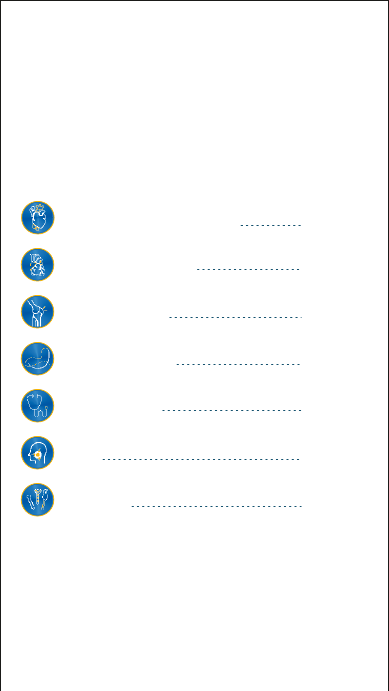
Welcome to Meril's Comprehensive Overview of Essential Terminologies (M.Guide) - your essential reference for medical vocabulary. Designed especially for Merilians, this guide offers concise, one-line descriptions to enhance product knowledge. M.Guide simplifies complex concepts, connecting advanced innovations to better serve the healthcare community.
Vascular Intervention
2-28
29-44
45-68
69-94
95-117
118-142
143-148
Trauma
Cardiac Surgery
Orthopedics
Endo-Surgery
Diagnostics
ENT
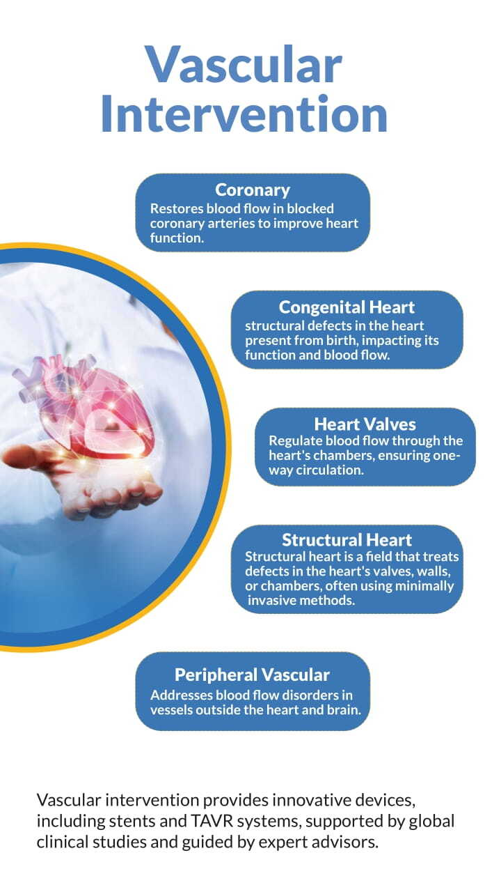
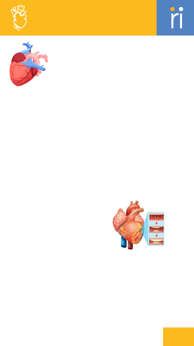
Vascular Intervention
Generic
Angiographic Imaging
Imaging technique used to visualize
blood vessels and detect
abnormalities.
Angioplasty
A procedure to widen narrowed or
obstructed arteries using a balloon
catheter.
Anticoagulation Therapy
Use of medications to prevent blood
clot formation and reduce the risk
of thromboembolic events.
Arterial Access
Establishing access to an artery for
diagnostic or therapeutic
procedures.
Arterial Occlusion
Blockage of an artery that impedes
blood flow to tissues or organs.
Atherosclerosis
The buildup of fatty deposits on the
inner walls of arteries, leading to
reduced blood flow.
Atrial Septal Defect (ASD)
A congenital defect characterized
by a hole in the atrial septum.
B
alloon Deflation
Process of deflating a balloon after
it has been used to widen a vessel.
Balloon Inflation
Process of expanding a balloon
within a vessel to open or widen a
blockage.
C
ardiac Catheterization
Procedure to diagnose and treat
heart
conditions by inserting a catheter
into the heart or blood vessels.
Cardiovascular Devices
Medical devices used to diagnose or
treat cardiovascular conditions,
such as stents and pacemakers.
Catheterization
The insertion of a catheter into a
blood
vessel to diagnose or treat
conditions.
Chronic Total Occlusion (CTO)
Complete blockage of an artery that
has persisted for a long time.
Clinical Trials
Research studies conducted to
evaluate the effectiveness and
safety of medical treatments or
devices.
Coarctation of the Aorta
Narrowing of the aorta that
impedes blood flow, often requiring
surgical repair.
Congenital Heart Defects
Abnormalities in the heart structure
present at birth, affecting its
function.
Congenital Heart Disease
Heart conditions present at birth
that affect the structure and
function of the heart.
Coronary Angiography
Imaging technique used to visualize
the coronary arteries and assess
blood flow.
03
A
ccess Sheath
A tube inserted
into a blood vessel
to provide access
for other devices
or procedures.
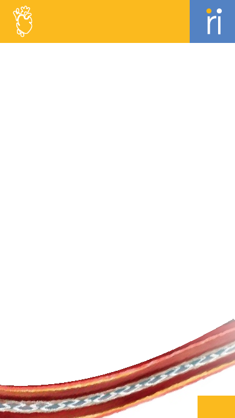
Vascular Intervention
Generic
Coronary Artery Disease
(CAD)
Narrowing or blockage of the
coronary arteries due
to
atherosclerosis, leading to reduced
blood
flow to the heart.
Coronary Intervention
Procedures aimed at treating
coronary artery disease,
such as
angioplasty or stenting.
Coronary Revascularization
Surgical procedures to restore
blood flow to the heart
muscle,
typically through CABG or
angioplasty.
D
evice Maintenance
Ongoing care and servicing of
medical devices to ensure
their
proper function.
Device Performance
Evaluation of how well a medical
device functions in
clinical settings.
Device Selection Criteria
Standards and factors used to
choose appropriate
medical devices
for specific procedures or
conditions.
Device Sterilization
Process of cleaning and disinfecting
medical devices to
prevent
infection.
E
mbolization
Procedure to block a blood vessel to
stop bleeding or
to treat abnormal
blood flow.
Endarterectomy
Surgical procedure to remove
plaque from the inside of
an artery
to restore blood flow.
Endovenous Ablation
Minimally invasive procedure to
destroy abnormal veins
using heat
or laser energy.
Endovenous Laser Therapy
(EVLT)
A minimally invasive procedure
using laser energy to
treat varicose
veins.
F
ractional Flow Reserve (FFR)
Measurement of blood flow through
a coronary artery to
determine the
severity of blockage.
G
uide Catheter
A catheter used to navigate and
guide other devices
into the
vascular system.
Guidewire
A thin, flexible wire used to guide a
catheter or other
medical device
into place.
H
emodynamic Monitoring
Continuous measurement of the
heart's performance and
blood flow
parameters.
Hemodynamic Support
Techniques or devices used to assist
or support the
heart's function.
I
nfection Prevention
Measures taken to prevent
infections during
and
after medical
procedures.
04
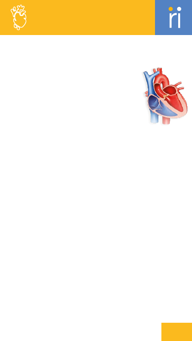
Vascular Intervention
Generic
Intra-Aortic Balloon Pump
(IABP)
A device that helps the heart pump
blood by inflating
and deflating a
balloon in the aorta.
Intracoronary Shunt
A device placed within a coronary
artery to maintain
blood flow during
certain procedures.
Intraoperative Imaging
Imaging used during surgery to
guide procedures and
assess results
in real-time.
Intravascular Ultrasound
(IVUS)
Imaging technique that uses
ultrasound to visualize the
inside of
blood vessels.
O
ptical Coherence
Tomography (OCT)
High-resolution imaging technique
used to visualize the
inner layers of
blood vessels.
P
atent Foramen Ovale (PFO)
A persistent opening between the
heart’s atria that
usually closes after
birth.
Patient Outcomes
The results or impacts of medical
treatments or
interventions on a
patient’s health.
Pericardial Patch
Surgical material used to repair or
reinforce the
pericardium, the
membrane surrounding the heart.
Peripheral Arterial Disease
(PAD)
A condition where arteries in the
legs are narrowed or
blocked,
leading to reduced blood flow.
Peripheral Interventions
Procedures to treat conditions
affecting peripheral
arteries and
veins.
Peripheral Vascular
Intervention
Procedures to
address issues in
peripheral
arteries
and veins, often
including
angioplasty
and
stenting.
Postoperative
Monitoring
Observations and assessments
made after surgery to
ensure
proper recovery and identify any
complications.
Pressure Monitoring
Measurement of blood pressure
within vessels to
assess
cardiovascular health.
Pressure Wire
A catheter with a pressure sensor
used to measure blood
pressure
inside a blood vessel.
Pulmonary Valve Stenosis
Narrowing of the pulmonary valve,
obstructing blood flow
from the
right ventricle to the lungs.
R
adiofrequency Ablation
(RFA)
Procedure that uses radiofrequency
energy to heat and
destroy
abnormal tissue, such as in varicose
veins.
Recovery Protocols
Guidelines and procedures followed
to facilitate
patient recovery after
surgery.
Reintervention
Additional procedures performed
after an initial
treatment to address
05
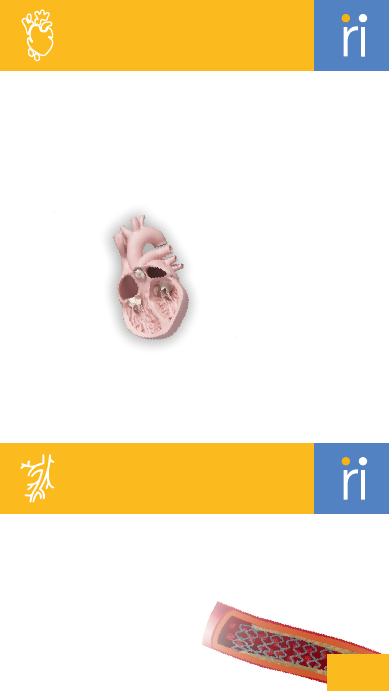
Vascular Intervention
Generic
complications or incomplete results.
S
eptal Occluder
Device used to close a hole in the
heart’s septum, such as a
septal
defect.
Surgical Innovation
Development of new techniques or
technologies to improve
surgical
outcomes.
Surgical Mesh
A device used to
reinforce or repair
weakened or
damaged
tissues
during surgery.
Surgical
Technique
Methods and
procedures used during surgery to
achieve
optimal results.
T
hrombectomy
Procedure to remove a blood clot
from a blood vessel.
V
ascular Access
The establishment of access to the
vascular system for
diagnostic or
therapeutic procedures.
Vascular Closure Device
Device used to seal the access site
in a blood vessel after a
procedure.
Vascular Graft
A synthetic or biological material
used to bypass or repair a
damaged
blood vessel.
Vascular Health
The overall condition and function
of the blood vessels in
the body.
Vascular Intervention
Procedures to treat conditions
affecting blood vessels,
including
arteries and veins.
Vascular Reconstruction
Surgical procedure to restore or
improve the function of
blood
vessels.
Venous Access
Establishing access to a vein for
diagnostic or
therapeutic
procedures.
Vascular Intervention
Coronary
A
cute Coronary Syndrome
(ACS)
A range of conditions resulting from
sudden reduced blood flow
to the
heart.
Angiographic Imaging
Imaging technique used to visualize
blood vessels and their
abnormalities.
Angiographic Result
The outcome of angiographic
imaging, indicating the state
of
blood vessels.
06
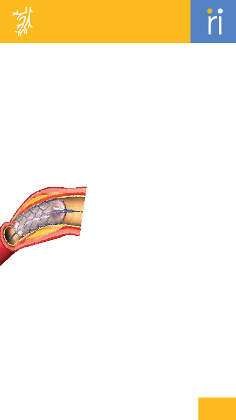
Vascular Intervention
Coronary
Angiographic Success
Achievement of desired results as
seen in angiographic
imaging after a
procedure.
Angioplasty Balloon
A balloon used in angioplasty to
widen narrowed arteries.
Antithrombotic Therapy
Treatment aimed at preventing or
dissolving blood clots.
Atherectomy
Removal of atherosclerotic plaque
from an artery.
Atherosclerosis
Buildup of fatty deposits in the
arteries, leading to reduced
blood
flow.
B
alloon Angioplasty
A procedure where a balloon is
inflated inside a narrowed
artery to
restore blood flow.
Balloon Catheter
A catheter with an inflatable balloon
used to widen narrowed
arteries.
Balloon Catheter Shaft
The central part of a balloon
catheter through which it is
inserted
into the vessel.
Balloon Compliance
The ability of a balloon to expand to
a specified diameter
under
pressure.
Balloon Crossing Profile
The ability of a balloon to pass
through narrow or obstructed
vessels.
Balloon Deflation
Collapsing and removing the
balloon catheter after treatment.
Balloon Diameter
The width of a balloon catheter
when inflated.
Balloon Dilatation
The process of expanding a balloon
inside a vessel to treat a
blockage.
Balloon Inflation
Expanding a balloon catheter inside
a blood vessel to open
it.
Balloon Length
The length of the balloon catheter
from tip to base.
Balloon Profile
Characteristics of a balloon
catheter, including its size
and
shape.
Balloon Rupture
Failure of a balloon catheter due to
excessive pressure,
leading to its
burst.
Balloon Trackability
The ease with which a balloon
catheter can be navigated
through
blood vessels.
Bare-Metal Stent (BMS)
A stent made of metal with no drug
coating.
Bioabsorbable Scaffold
A temporary vascular scaffold that
gradually dissolves after
supporting
the artery.
Biodegradable Polymer
A polymer used in stents that
breaks down naturally over
time.
C
alcified Lesion
A type of plaque in the arteries
hardened by calcium buildup.
07
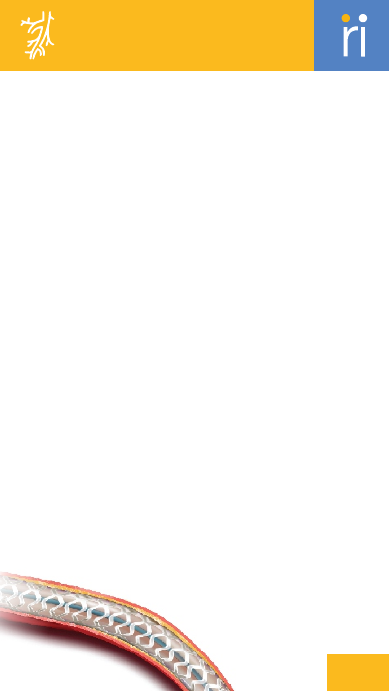
Vascular Intervention
Coronary
Catheter-Based Therapy
Treatments delivered through a
catheter to address vascular
issues.
Chronic Total Occlusion (CTO)
Complete blockage of a
coronaryartery for at least three
months.
Coronary Artery
An artery supplying blood to the
heart muscle.
Coronary Artery Bypass
Grafting (CABG)
A surgical procedure that creates a
bypass around blocked
coronary
arteries.
Coronary Artery Disease
(CAD)
A condition where coronary arteries
are narrowed or blocked,
reducing
blood flow to the heart.
Coronary Artery Spasm
Temporary narrowing of a coronary
artery due to contraction
of the
vessel wall.
Coronary Flow Reserve (CFR)
The ability of a coronary artery to
increase blood flow in
response to
increased demand.
Coronary Revascularization
Restoration of blood flow to the
heart muscle through surgical
or
catheter-based methods.
D
istal Protection Device
A device used to protect the distal
part of a vessel from
debris during
intervention.
Drug-Coated Balloon (DCB)
A balloon coated with medication to
reduce restenosis and
improve
outcomes.
Drug-Eluting Stent (DES)
A stent coated with medication to
prevent artery
re-narrowing.
Dual-Antiplatelet Therapy
(DAPT)
The use of two different antiplatelet
medications to prevent
blood clots
after stent placement.
Dual-Lumen Catheter
A catheter with two separate
channels for simultaneous
delivery
of fluids or medications.
E
dge Dissection
Damage to the artery at the edge of
a stent, which can lead
to
complications.
Elective PCI
Non-emergency PCI planned for
stable coronary artery disease.
Endothelialization
Growth of endothelial cells over a
stent to restore the
vessel lining.
Endovascular Procedure
Medical interventions performed
within blood vessels using
catheter-
based techniques.
F
emoral Access
Accessing the arterial system
through the groin.
Fractional Flow Reserve (FFR)
A measurement of blood flow and
pressure to assess the
severity of
artery blockages.
G
uide Catheter
A catheter used to guide other
08
Vascular Intervention
Coronary
devices to the site of intervention.
Guide Catheter Backup
Additional support provided by a
guide catheter during
complex
interventions.
Guidewire
A thin, flexible wire used to guide
the placement of catheters
and
stents.
I
n-Stent Restenosis (ISR)
Re-narrowing of an artery at the
site of a previously placed
stent.
Intravascular Ultrasound
(IVUS)
An imaging technique using
ultrasound to visualize the inside
of
blood vessels.
Ischemia
Reduced blood flow to tissues,
leading to oxygen deprivation.
K
issing Balloon Technique
Simultaneous inflation of balloons in
adjacent arteries to
optimize stent
placement.
L
esion Coverage
The extent to which a stent or
balloon covers a lesion in a
blood
vessel.
Lesion Morphology
The shape and characteristics of a
blockage or plaque in a
vessel.
Lesion Preparation
The process of preparing a blood
vessel lesion for
intervention.
M
etallic Scaffold
A metal framework used to support
a vessel wall during and
after stent
deployment.
Myocardial Infarction (MI)
Heart attack caused by blocked
blood flow to the heart muscle.
N
on-Compliant Balloon
A balloon that does not expand
beyond its nominal size
regardless
of pressure applied.
O
ptical Coherence
Tomography (OCT)
An imaging technique using light to
capture high-resolution
images of
blood vessels.
Over-the-Wire (OTW) System
A catheter system where the
catheter is threaded over a
guidewire
for placement.
P
ercutaneous Coronary
Intervention (PCI)
A catheter-based procedure to treat
narrowed coronary
arteries.
Percutaneous Transluminal
Coronary Angioplasty (PTCA)
A procedure to open blocked
coronary arteries using a
balloon
catheter.
Plaque Burden
The amount of atherosclerotic
plaque present in a blood
vessel.
Plaque Burden
The amount of atherosclerotic
plaque present in a blood
vessel.
Plaque Debulking
The process of
removing a
significant
amount of
plaque
from a
vessel.
09
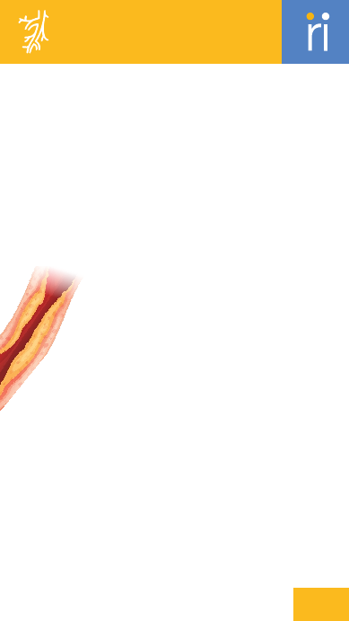
Vascular Intervention
Coronary
Plaque Eccentricity
The uneven distribution of plaque
around the circumference of
a
vessel.
Plaque Modification
Techniques used to alter or remove
atherosclerotic plaque to
improve
blood flow.
Plaque Rupture
Breaking of atherosclerotic plaque
in artery, potentially
leading to clot
formation.
Post-Dilatation
Additional balloon inflation
performed after stent
deployment
to ensure optimal results.
Procedural Success
Successful completion of a
procedure with expected outcomes.
Proximal Optimization
Technique (POT)
A technique to improve stent
apposition by inflating a
balloon
proximal to the stent.
R
adial Access
Accessing the arterial system
through the wrist.
Rapid Exchange (RX) System
A catheter system allowing for
quick exchange of catheters
over a
single guidewire.
Rescue PCI
PCI performed to address
complications after an initial
angioplasty.
Restenosis
Re-narrowing of an artery after a
procedure to open it.
S
caffold
A supportive structure used in
vascular interventions to
maintain
vessel patency.
Scaffold Resorption
The process by which a
bioabsorbable scaffold is gradually
broken
down and absorbed by the
body.
Semi-Compliant Balloon
A balloon that expands slightly
beyond its nominal size
when
pressure is applied.
Side Branch Protection
Techniques used to safeguard side
branches of a vessel during
stent
placement.
Stent
A small mesh tube inserted into an
artery to keep it open.
Stent Apposition
Proper placement of a stent against
the vessel wall.
Stent Coating
A layer applied to a stent to improve
its performance or
deliver
medication.
Stent Coverage
The extent to which a stent covers a
lesion or blockage.
Stent Deployment
Placing a stent inside a vessel to
keep it open.
Stent Diameter
The width of a stent when fully
Pre-Dilatation
Balloon inflation
performed before
stent placement to
prepare
the vessel.
Pressure Wire
A wire used to measure
pressure changes within
a blood
vessel during PCI.
Primary PCI
Emergency PCI performed
during a heart attack to restore
blood flow.
10

expanded.
Stent Expansion
The process of enlarging a stent to
fit the artery.
Stent Fracture
A break or crack in a stent that can
affect its function.
Stent Length
The length of a stent when deployed
in the vessel.
Stent Placement
Insertion of a stent into a blood
vessel to keep it open.
Stent Platform
The basic structure or design of a
stent upon which coatings
or
modifications may be added.
Stent Retraction
The process of a stent moving back
from its intended
position,
potentially compromising
treatment.
Stent Scaffold
The framework of a stent that
supports the artery and
maintains
its patency.
Stent Struts
The individual metal components of
a stent providing
structural
support.
Stent Thrombosis
Formation of a blood clot within
a stent, potentially
causing
blockage.
Stent Visibility
The clarity with which a stent
can be seen on imaging
devices.
T
hrombectomy
Removal of a blood clot from a
blood vessel.
Thrombosis
Formation of a blood clot inside a
blood vessel.
V
ascular Lumen
The internal space within a blood
vessel through which blood
flows.
W
ire Bias
Tendency of a
guide wire to
favor one
direction
within
a vessel.
Vascular Intervention
Coronary
Vascular Intervention
Congenital Heart
A
mplatzer Device
A brand of occluders and other
devices used for congenital
heart
defects.
Aneurysm
An abnormal bulge or ballooning in
the wall of a blood
vessel.
Atrial Septal Defect (ASD)
A hole in the wall (septum) between
the two upper chambers
of
the heart.
11
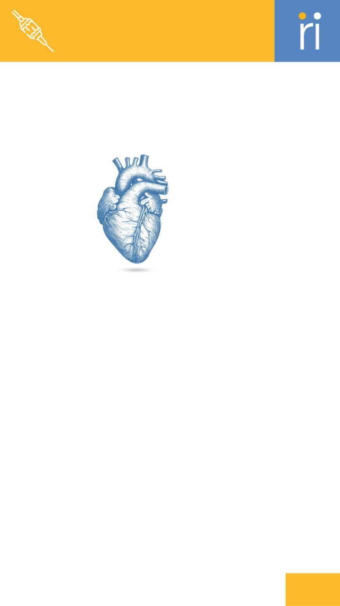
Vascular Intervention
Congenital Heart
Atrial Septum
The wall that separates the left and
right atria of the
heart.
Atrial Septum Anatomy
The structure and features of the
septum dividing the atria
of the
heart.
B
alloon Dilatation
A procedure using
a balloon to expand
narrowed or
obstructed
blood
vessels.
Balloon-Assisted
Technique
A method where a balloon is used to
facilitate the placement
or
adjustment of a device.
Balloon-Tipped Catheter
A catheter with a balloon at its tip
used for various
diagnostic and
therapeutic procedures.
C
ardiac Anatomy
The study of the structure and
function of the heart.
Cardiac Apex
The tip of the heart, directed
downward and to the left.
Cardiac Catheterization
A procedure where a catheter is
inserted into the heart to
diagnose
and treat cardiovascular conditions.
Cardiac Chambers
The four compartments of the
heart: two atria and two
ventricles.
Cardiac Defect
Any structural abnormality in the
heart present at birth.
Cardiac Imaging
Techniques used to visualize the
heart's structure and
function.
Cardiac Output
The volume of blood pumped by the
heart per minute.
Cardiac Rhythm
The pattern of heartbeats and
electrical impulses in the
heart.
Cardiopulmonary Bypass
A technique where a machine
temporarily takes over the
function
of the heart and lungs during
surgery.
Cardiovascular Anatomy
The study of the heart and blood
vessels and their functions.
Cardiovascular Device
A medical device used in the
treatment or diagnosis of
cardiovascular
conditions.
Closure Device
A device used to close or seal an
abnormal opening in the
heart.
Congenital Defect
An abnormality in the heart present
from birth.
Congenital Heart Disease
(CHD)
A range of heart defects present at
birth affecting heart
structure and
function.
D
elivery Catheter
A catheter used to place and deliver
a medical device to its
target
location.
Device Closure
A procedure to close a heart defect
using an implantable
device.
Device Compatibility
The ability of a device to work
effectively with other
devices
or within specific conditions.
Device Confirmation
Verification of the proper
placement and function of a
12
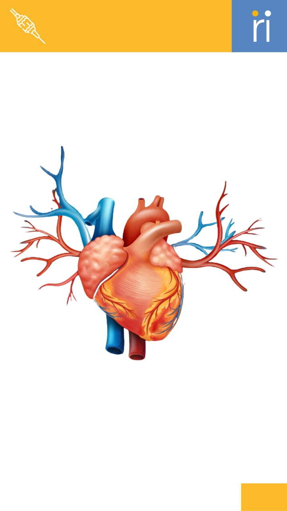
medical device.
Device Deployment
The process of positioning and
releasing a medical device
into the
target area.
Device Deployment Accuracy
Precision in placing and releasing a
medical device at the
intended site.
Device Deployment
Handle
A component used to
deploy or release a
device during a
procedure.
Device Erosion
Gradual wear or breakdown of a
device within the body.
Device Fracture
A break or crack in a medical device
affecting its function.
Device Implantation
The process of inserting and placing
a medical device within
the body.
Device Integrity
The overall condition and
functionality of a device.
Device Lifespan
The expected duration of
functionality of a medical device.
Device Longevity
The duration for which a medical
device remains functional
and
effective.
Device Manufacturer
The company or entity that
produces and supplies medical
devices.
Device Migration
Movement of a medical
device from its intended
position.
Device Orientation
The positioning of a device
relative to its target area.
Device Oversizing
Choosing a device larger than
needed to ensure proper fit
or
function.
Device Positioning
Adjusting the location of a device to
ensure optimal
placement.
Device Recapture
The process of retrieving a deployed
device to reposition or
remove it.
Device Release Mechanism
The mechanism by which a device is
deployed and released from
its
Vascular Intervention
Congenital Heart
13
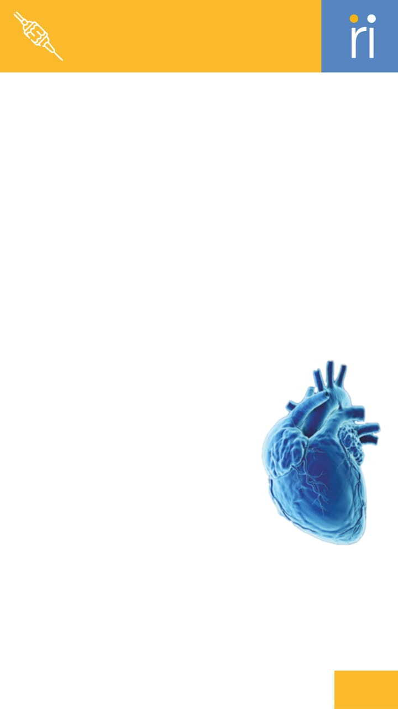
delivery system.
Device Repositioning
Adjusting the position of a device
after initial placement.
Device Retention
The ability of a device to stay
securely in place after
implantation.
Device Retrieval
The process of removing a medical
device from the body after
it has
been used.
Device Safety
Measures and attributes ensuring
that a device does not cause
harm.
Device Sizing
Determining the appropriate size of
a device for implantation
or use.
Device Undersizing
Choosing a device smaller than
needed, potentially leading
to
inadequate function.
Device Visibility
The ability to clearly see and
monitor a device during a
procedure
using imaging techniques.
E
chocardiography
An imaging technique using
ultrasound to visualize heart
structures
and function.
Embolization
The process of blocking a blood
vessel using an embolic
material.
Endocardial Surface
The inner lining of the heart
chambers and valves.
Endovascular Access
Gaining entry into the vascular
system for the purpose of
performing
interventions.
Endovascular Occlusion
The closure of a blood vessel or
vessel defect using an
endovascular
device.
Endovascular Procedure
Medical procedures performed
within blood vessels using a
catheter-based
approach.
Endovascular Technique
Minimally invasive procedures
performed inside blood
vessels
using catheters.
F
emoral Vein
A large vein in the thigh used for
vascular access.
Fluoroscopy
An imaging technique that uses X-
rays to obtain real-time
moving
images of the internal structures.
G
uidewire
A thin wire used to guide the
placement of other medical
devices
during procedures.
H
eart Murmur
An abnormal
sound heard
during a
heartbeat,
often
caused
by
turbulent
blood flow.
Heart Valve
Structures in
the heart that
regulate blood flow
between
chambers.
Hemodynamic Stability
The maintenance of stable blood
flow and pressure throughout
the
cardiovascular system.
I
mplant Procedure
A procedure to place a device or
Vascular Intervention
Congenital Heart
14
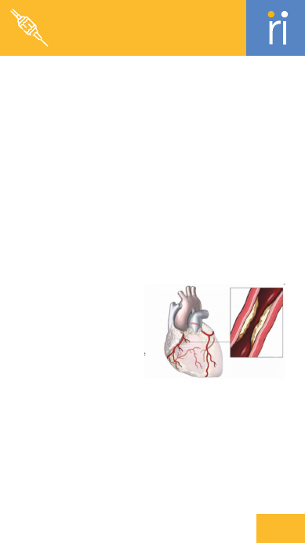
implant into the body.
Interatrial Septum
The wall separating the left and
right atria of the heart.
Interventional Cardiology
A branch of cardiology dealing with
catheter-based treatments
for
heart conditions.
Intracardiac Echocardiography
(ICE)
An imaging technique using a
catheter with an ultrasound
probe
to visualize the heart from within.
Intraventricular Septum
The wall separating the left and
right ventricles of the
heart.
J
ugular Vein
A vein in the neck used for accessing
the venous system.
L
eft Atrium
The upper left chamber of the heart
that receives oxygenated
blood
from the lungs.
Left Ventricle
The lower left chamber of the heart
that pumps oxygenated
blood to the
rest of the body.
M
itral Valve
The valve between the left atrium
and left ventricle of the
heart.
O
ccluder
A device used to block or close an
abnormal opening in the
heart.
P
aravalvular Leak
Leakage of blood around a heart
valve implant.
Patent Foramen Ovale (PFO)
A persistent opening between the
atria that fails to close
after birth.
Percutaneous Approach
A method of accessing the body
through the skin using a
needle or
catheter.
Percutaneous Occlusion
Blocking of a blood vessel or defect
through a minimally
invasive
procedure.
Post-Procedure Monitoring
Observing and assessing a patient's
condition after a medical
procedure.
Pulmonary Hypertension
Elevated blood pressure in the
arteries of the lungs.
Pulmonary Veins
The veins that carry oxygenated
blood from the lungs to the
left
atrium of the heart.
R
esidual Defect
An incomplete closure or
persistence of a defect after
treatment.
Residual Shunt
Persistent abnormal blood flow
through an opening after
closure.
Right Atrium
The upper right chamber of the
heart that receives
deoxygenated
blood from the body.
Right Ventricle
Vascular Intervention
Congenital Heart
15
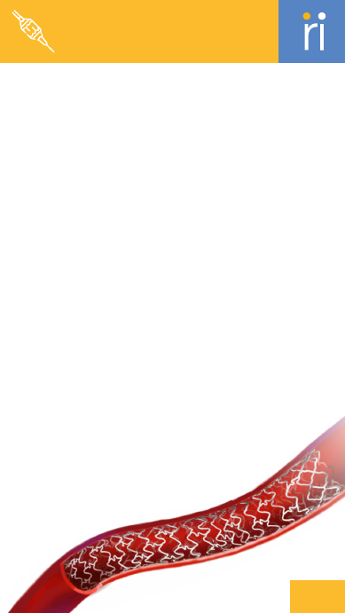
The lower right chamber of the
heart that pumps
deoxygenated
blood to the lungs.
S
eptal Aneurysm
A bulge in the septum between the
heart chambers, often
associated
with a defect.
Septal Edge
The border or margin of a septal
defect or repair site.
Septal Occluder
A device implanted to close a septal
defect in the heart.
Septal Patch
A material used to repair or cover a
septal defect.
Septal Wall
The wall of tissue dividing the
heart's chambers.
Septum Primum
The first part of the atrial septum to
develop during fetal
life.
Septum Secundum
The second part of the atrial septum
that forms after the
septum
primum.
Shunt
An abnormal connection between
two heart chambers or vessels
that
allows blood to flow
inappropriately.
Stent
A small mesh tube inserted into a
vessel to keep it open.
Stent Delivery System
A system used to deploy a stent
within a blood vessel or
heart
chamber.
T
hrombosis
Formation of a blood clot within a
blood vessel.
Transcatheter Device
A device used in procedures
performed via a catheter
inserted
into the body.
Transesophageal
Echocardiogram (TEE)
An ultrasound test where a probe is
inserted into the
esophagus to
obtain detailed heart images.
Tricuspid Valve
The valve between the right atrium
and right ventricle of the
heart.
V
ascular Access
The method used to gain access to
the vascular system for
medical
procedures.
Vascular Sheath
A tube inserted into a blood vessel
to provide access for
other
instruments.
Ventricular Septal Defect
(VSD)
A hole in the wall (septum) between
the two lower chambers of
the
heart.
Vascular Intervention
Congenital Heart
16
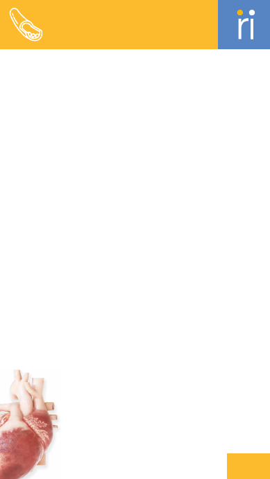
A
ngiography
An imaging technique that uses X-
rays and contrast dye to
visualize
blood vessels.
Annular Size
The measurement of the valve
annulus to ensure proper fitting
of a
prosthetic valve.
Annulus
The ring-like structure that
supports and holds a heart valve
in
place.
Anticoagulation Therapy
Treatment aimed at reducing blood
clot formation.
Aortic Regurgitation
A condition where the aortic valve
does not close properly,
allowing
blood to flow backward.
Aortic Root
The section of the aorta closest to
the heart where the
aortic valve is
located.
Aortic Root Enlargement
Expansion of the aortic root, often
requiring surgical
intervention.
Aortic Stenosis
Narrowing of the aortic valve
opening, restricting blood flow
from
the heart.
Aortic Valve
The valve between the left ventricle
and the aorta that
regulates blood
flow out of the heart.
a narrowed aortic valve using a
balloon catheter.
Balloon-Expandable Valve
A valve that is expanded and
positioned using a balloon
catheter
during implantation.
Balloon-Tipped Catheter
A catheter with a balloon at its tip
used for various
diagnostic and
therapeutic procedures.
Bioprosthetic Valve
A heart valve made from animal
tissue or other biological
materials.
C
ardiac Catheterization
A diagnostic procedure where a
catheter is inserted into the
heart to
evaluate and treat conditions.
Cardiac Conduction System
The network of specialized cells
that regulates the heart's
electrical
impulses.
Cardiac Output
The amount of blood the heart
pumps per minute.
Cardiac Rehab
A program of exercise and
education to improve
cardiovascular
health after heart
surgery or illness.
Cardiopulmonary Bypass
A technique that temporarily takes
over the heart and lung
functions
during surgery.
Cardiothoracic Surgeon
A surgeon specializing in
procedures related to the heart
and
chest.
Cardiovascular Surgery
Surgery related to the heart and
blood vessels.
Conduction Abnormality
Irregularities in the heart's
electrical conduction system.
Vascular Intervention
Heart Valves
Atrial Fibrillation
An irregular and often
rapid heart rhythm
originating
from the
atria
B
alloon Aortic
Valvuloplasty
(BAV)
A procedure to widen
17
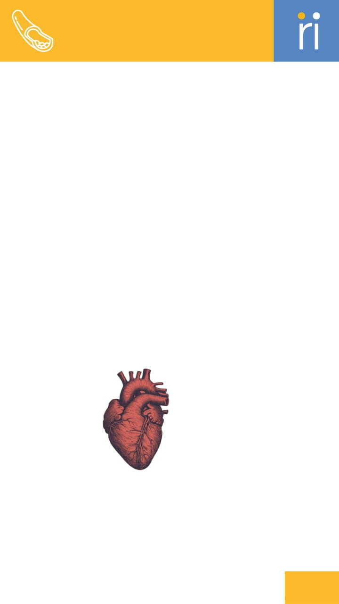
Coronary Ostia
The openings in the aorta where the
coronary arteries
originate.
egenerative Valve Disease
D
Progressive deterioration of a heart
valve due to aging or
disease.
Delivery Catheter
A catheter used to deliver and
position a medical device
within the
body.
Device Recapture
The process of retrieving and
repositioning a device after
initial
deployment.
Device Retrieval
The process of removing a
misplaced or malfunctioning device.
Device Sizing
Determining the appropriate size of
a device for
implantation.
E
chocardiography
An ultrasound imaging technique
used to visualize heart
structures
and function.
Endocarditis
Inflammation of the
inner lining of the
heart, often due
to
infection.
Endovascular
Procedure
Minimally invasive
procedures performed
inside blood
vessels using a
catheter.
Endovascular Stenting
Placement of a stent within a blood
vessel through a
catheter-based
approach.
F
emoral Access
Accessing the vascular system
through the femoral artery or
vein.
Fluoroscopy
Real-time X-ray imaging used to
guide the placement of
medical
devices.
H
eart Valve Repair
A procedure to correct a
malfunctioning valve without
replacing
it.
Heart Valve Replacement
Surgical or catheter-based
procedure to replace a damaged
heart
valve with a prosthetic valve.
Hemodynamics
The study of blood flow and the
forces involved in the
cardiovascular
system.
Hybrid Operating Room
A surgical suite equipped with
imaging technologies for
both
traditional and minimally invasive
procedures.
I
nterventional Cardiology
A field focusing on catheter-based
treatments for heart
conditions.
Intraoperative Imaging
Imaging techniques used during
surgery to guide procedures.
L
eaflet Coaptation
The alignment and closure of the
valve leaflets to prevent
regurgitation.
Left Ventricle
The lower left chamber of the heart
that pumps oxygenated
blood to the
body.
Left Ventricular Outflow Tract
(LVOT)
The passageway through which
18
Vascular Intervention
Heart Valves
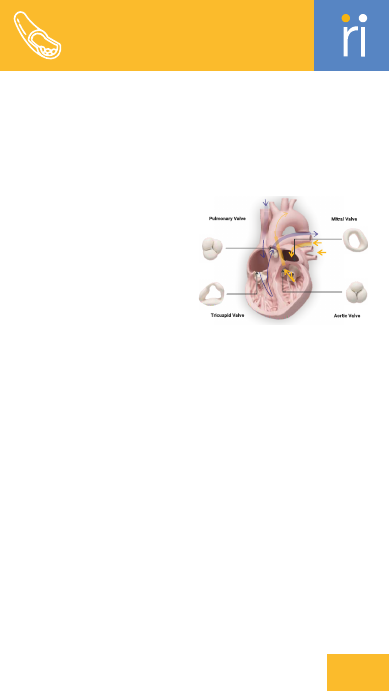
blood flows from the left ventricle
into the aorta.
M
echanical Valve
A man-made heart valve made from
durable materials, designed
for
long-term use.
Mitral Regurgitation
A condition where the mitral valve
leaks, allowing blood to
flow
backward into the left atrium.
Mitral Valve
The valve between the left atrium
and left ventricle that
ensures
unidirectional blood flow.
Mitral Valve Prolapse
A condition where the mitral valve
leaflets bulge into the
left atrium
during contraction.
P
acemaker Lead
A wire that connects a pacemaker to
the heart, delivering
electrical
impulses to regulate heartbeat.
Paravalvular Leak
Leakage of blood around the edges
of a valve prosthesis.
Paravalvular Regurgitation
Leakage around a valve prosthesis
causing backward blood flow.
Percutaneous Valve
Replacement
Valve replacement procedure
performed through a catheter-
based
approach.
Post-Dilatation
Expanding a valve or vessel with a
balloon after initial
placement.
Postoperative Monitoring
Observing a patient's condition
after surgery to ensure
proper
recovery.
Pre-Dilatation
Expanding a valve or vessel with a
balloon before device
implantation.
Prosthetic Valve
An artificial valve used to replace a
damaged heart valve.
Pulmonary Hypertension
Increased blood pressure in the
lungs' arteries.
Pulmonary Valve
The valve between the right
ventricle and pulmonary artery
that
controls blood flow to the lungs.
R
ight Ventricle
The lower right chamber of the
heart that pumps
deoxygenated
blood to the lungs.
Right Ventricular Outflow
Tract (RVOT)
The passageway through which
blood flows from the right
ventricle
into the pulmonary artery.
S
elf-Expanding Valve
A valve that expands on its own
once deployed from its
delivery
system.
Stenotic Valve
A valve that is narrowed and
restricts blood flow through it.
Structural Heart Disease
19
Vascular Intervention
Heart Valves
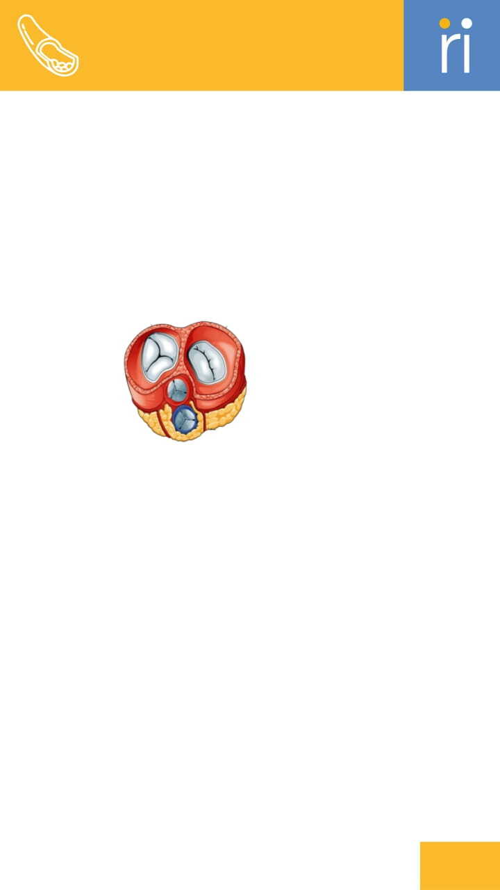
A group of heart conditions
involving abnormalities in the
heart's
structure.
Structural Valve Deterioration
The progressive breakdown of a
prosthetic valve's structure.
Subclavian Access
Accessing the vascular system
through the subclavian artery
or
vein.
Surgical Aortic Valve
Replacement (SAVR)
Traditional surgical
procedure to
replace a
diseased
aortic
valve through
open-heart
surgery.
Surgical Valve
Replacement
The surgical procedure to replace a
damaged heart valve with
a
prosthetic one.
T
issue Valve
A heart valve made from human or
animal tissue, used in
valve
replacement.
Transapical Access
Accessing the heart through an
incision in the apex of the
left
ventricle.
Transcatheter Aortic Valve
Replacement (TAVR)
A minimally invasive procedure to
replace a diseased aortic
valve with
a new valve via a catheter.
Transesophageal
Echocardiogram (TEE)
An ultrasound test where a probe is
inserted into the
esophagus to
obtain detailed heart images.
Tricuspid Valve
The valve between the right atrium
and right ventricle that
prevents
backflow of blood.
V
alve Anchoring
Securing a valve in place to ensure
stability and proper
function.
Valve Annuloplasty
procedure to repair the valve
annulus to restore proper
valve
function.
Valve Calcification
The buildup of calcium deposits on a
valve, leading to
reduced flexibility
and function.
Valve Commissure
The point where the leaflets of a
heart valve meet.
Valve Competence
The ability of a valve to close
properly and prevent backflow
of
blood.
Valve Coronary Alignment
Ensuring that a valve is positioned
correctly relative to the
coronary
arteries.
Valve Crimping
The process of compressing a valve
into a delivery catheter
before
deployment.
Valve Degeneration
The progressive deterioration of a
heart valve's structure
and function
over time.
Valve Deployment
The process of placing and securing
a valve in its intended
position.
Valve Durability
The ability of a valve to function
effectively over time
without
failure.
Valve Durability Testing
Assessing the long-term
20
Vascular Intervention
Heart Valves
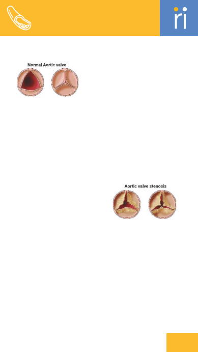
performance and reliability of a
valve.
Valve Endurance
The ability of a valve to withstand
long-term use without
deterioration.
Valve Expansion
The process of enlarging a valve
after deployment to fit
properly
within the heart.
Valve Gradient
The difference in pressure across a
heart valve, used to
assess its
function.
Valve Hemodynamic
Performance
Evaluation of how well a valve
performs in terms of blood flow
and
pressure regulation.
Valve Hemodynamics
The study of blood flow and
pressure changes across a valve.
Valve Implantation
The surgical or catheter-based
procedure to place a new valve
into
the heart.
Valve Implantation Technique
The method and process of placing a
valve into the heart.
Valve Leaflet
The flap-like structures of a heart
valve that open and close
to
regulate blood flow.
Valve Migration
The unintended movement of a
valve from its intended
position.
Valve Oversizing
Using a valve larger than needed to
ensure a proper fit and
function.
Valve Positioning
Adjusting the location of a valve to
ensure optimal placement
and
function.
Valve Prosthesis
An artificial device used to replace a
damaged heart valve.
Valve Remodeling
The process of modifying a valve to
improve function or fit.
Valve Stent Frame
The supporting structure of a valve
prosthesis that holds the
valve in
place.
Valve Undersizing
Using a valve smaller than needed,
potentially leading to
poor function
or leakage.
Valve-in-Valve Procedure
A procedure where a new valve is
implanted inside a
malfunctioning
prosthetic valve.
Vascular Access
The method of gaining entry into
the vascular system for
medical
procedures.
Ventricular Septal Defect
(VSD)
A congenital defect characterized
by a hole in the
ventricular septum.
Vascular Intervention
Heart Valves
Open
Closed
Open
Closed
21
+/-
Knob
Used for bi-directional bending of
the catheter tip.
A
/P Rotation Knob
Allows rotation of the catheter
anteriorly or posteriorly.
Anti-slip Bristles
Small bristles that prevent clip
slippage and improve
anchoring.
Atraumatic Soft Tip
A soft tip that reduces risk of injury
during catheter
insertion.
C
lip Sizes (SR, SW, LR, LW)
Different clip dimensions to suit
various mitral valve
anatomies.
Clip-Lock Lever
Secures the clip arms once the valve
leaflets are grasped.
D
eployment Pin/Knob
Used to deploy the MyClip implant
once it is in position.
Dilator
A 20Fr instrument used to ease
catheter insertion into the
body.
F
lush Port
Provides flushing to prevent clot
formation inside the
catheter.
G
rasper Lever
Used to raise or lower clip graspers
for leaflet capture.
H
emostatic Valve
Prevents blood leakage during
device insertion.
Hydrophilic Coating
A slick surface on the catheter to
Structural Heart
22
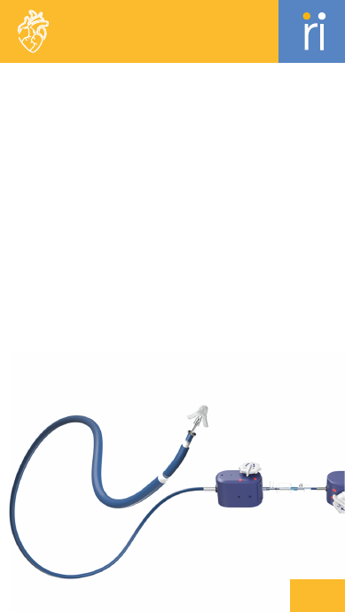
allow smooth navigation inside
blood vessels.
M
DS Console
Central unit that controls clip
movement and rotation during
the
procedure.
Myclip
Transcatheter mitral valve repair
system designed for
edge-to-edge
leaflet approximation.
MyClip Delivery System (MDS)
A steerable catheter-based system
designed to deliver and
deploy the
MyClip device precisely at the
mitral valve
leaflets during TEER
procedures.
MyClip Guide Catheter (MGC)
A flexible catheter that guides and
positions the delivery
system in the
heart.
MyClip TEER System
A transcatheter system used for
edge-to-edge repair of the
mitral
valve.
N
iTi Graspers
Flexible, memory-shape alloy arms
that securely hold the
mitral valve
leaflets.
P
olyester Fabric Cover
Soft fabric around the clip to
support healing and stability.
R
adiopaque Ring
Visible ring under fluoroscopy for
accurate positioning.
Radiopaque Tip
Tip visible under imaging to help
with catheter placement.
Rotary Wheel
Opens and closes the clip arms at
specific angles.
T
orque Box
Transfers torque from the
operator's hand to the distal tip
of
the device.
23
Structural Heart
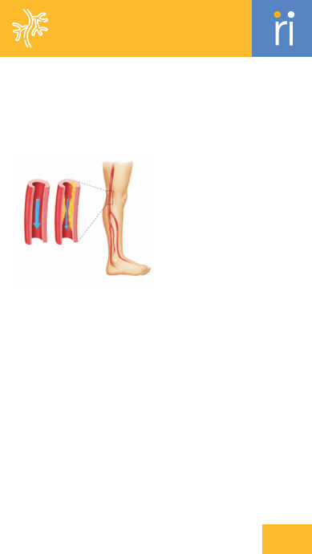
A
cute Limb Ischemia
Sudden reduction of blood flow to a
limb, which can lead
to tissue
damage.
Angioplasty
A procedure to widen narrowed or
blocked blood vessels
using a
balloon catheter.
Aortic Aneurysm
An abnormal enlargement of the
aorta that can lead to
rupture if
untreated.
Atherectomy
A procedure to remove plaque from
arteries to restore
blood flow.
Atherectomy Device
A device used to remove plaque
from blood vessels
during
atherectomy.
B
alloon Angioplasty
A type of angioplasty where a
balloon is inflated to
widen a
narrowed artery.
Balloon Catheter
A catheter with a balloon at its tip
used for dilation
of blood vessels.
Balloon Compliance
The ability of a balloon to expand
uniformly under
pressure.
Balloon Compliance Chart
A chart showing how a balloon
expands under different
pressures.
Balloon Deflation
The process of reducing the size of a
balloon catheter
after a procedure.
Balloon Diameter
The width of a balloon catheter
when inflated.
Balloon Dilatation
The process of using a balloon to
widen a narrowed
blood vessel.
Balloon Inflation
The process of expanding a balloon
catheter to open a
narrowed blood
vessel.
Balloon Length
The length of a balloon catheter
used for dilation.
Balloon Rupture
The failure of a balloon to maintain
pressure, often
due to overinflation
or material defect.
Bare-Metal Stent (BMS)
A stent made of metal without a
drug coating, used to
keep arteries
open.
C
hronic Total Occlusion (CTO)
A complete blockage of a blood
vessel lasting for more
than three
months.
Chronic Venous Disease
Long-term condition affecting vein
function, often
causing pain,
swelling, and varicose veins.
Claudication
Pain or cramping in the legs caused
by insufficient
blood flow during
physical activity.
Coil Embolization
A technique where coils are used to
occlude blood
vessels or aneurysms.
Vascular Intervention
Peripheral Vascular
24
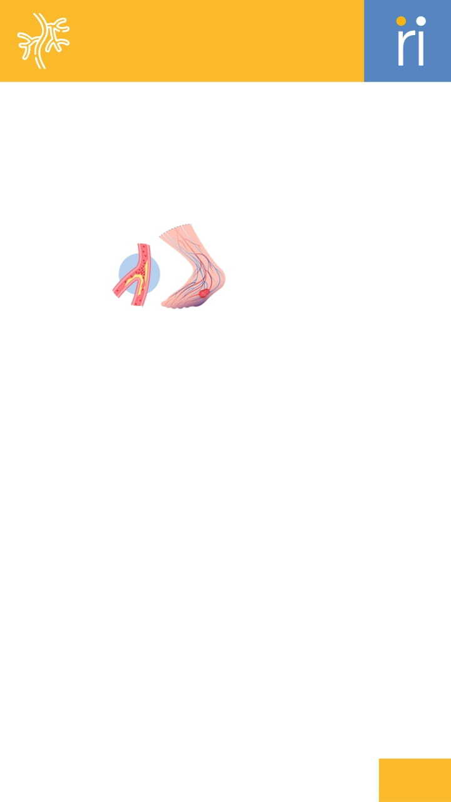
Computed Tomography
Angiography (CTA)
An imaging technique that uses X-
rays and contrast dye to
visualize
blood vessels.
Contrast Angiography
An imaging technique that
uses contrast dye to
highlight
blood vessels
on X-ray.
Covered Stent
A stent covered
with a material
to prevent blood
leakage
or to seal an aneurysm.
Critical Limb Ischemia (CLI)
A severe form of peripheral artery
disease causing pain and
ulcers in
the limbs due to inadequate blood
flow.
Crossing Catheter
A catheter used to cross blockages
in blood vessels during
intervention
procedures.
D
irectional Atherectomy
A technique using a cutting device
to remove plaque from a
specific
direction within an artery.
Drug-Coated Balloon (DCB)
A balloon coated with medication to
prevent restenosis when
dilating a
vessel.
Drug-Eluting Stent (DES)
A stent that releases medication to
prevent restenosis.
Duplex Ultrasound
An imaging technique that uses
sound waves to visualize
blood flow
and vessel structure.
E
mbolectomy
A procedure to remove an embolus
(blood clot) from a blood
vessel.
Embolic Agent
Materials used to block blood
vessels or tumors in
embolization
procedures.
Embolic Protection Device
A device used to capture or filter
emboli during procedures
to
prevent complications.
Embolization
A procedure to block abnormal
blood vessels or tumors
using
materials like coils or particles.
Embolization Coil Deployment
Placing coils in blood vessels or
aneurysms to occlude them.
Embolization Procedure
A procedure to block or occlude
abnormal blood vessels or
tumors
using embolic agents.
Endoleak
Leakage of blood outside a stent
graft but within the
aneurysm sac.
Endovascular Aneurysm
Repair (EVAR)
A minimally invasive procedure to
repair an aneurysm using a
stent
graft inserted through blood
vessels.
Endovascular Procedure
Procedures performed inside blood
vessels using minimally
invasive
techniques.
Endovascular Therapy
Minimally invasive procedures
performed inside blood
vessels
using catheters and other devices.
F
emoral Artery
The major artery in the thigh that
supplies blood to the
lower limb.
Flow Diverter
A device used to redirect blood flow
away from a diseased or
damaged
vessel.
25
Vascular Intervention
Peripheral Vascular
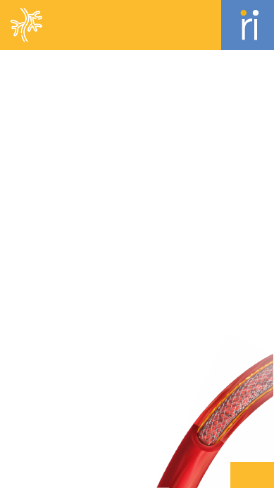
G
uide Catheter
A catheter used to direct other
instruments to the
target site within
a blood vessel.
Guidewire
A thin, flexible wire used to guide
other instruments
through blood
vessels.
I
liac Artery
The arteries that supply blood to
the pelvis and lower
limbs.
Inferior Vena Cava (IVC) Filter
A device placed in the inferior vena
cava to prevent
blood clots from
traveling to the lungs.
Intravascular Ultrasound
(IVUS)
An imaging technique using
ultrasound within blood
vessels to
visualize their structure.
L
aser Atherectomy
A technique using a laser to
vaporize plaque in blood
vessels.
Liquid Embolic
A liquid material used to occlude
blood vessels or
abnormal growths.
M
agnetic Resonance
Angiography (MRA)
An imaging technique using
magnetic resonance to
visualize
blood vessels.
Microcatheter
A small, flexible catheter used to
deliver devices or
medications to
precise locations.
N
on-Compliant Balloon
A balloon that does not expand
significantly beyond its
nominal size.
O
ver-the-Wire (OTW)
System
A system where devices are
advanced over a guidewire
for
precise placement.
P
ercutaneous Access
Gaining entry to a blood vessel
through the skin using
a needle or
catheter.
Percutaneous Transluminal
Angioplasty (PTA)
A procedure to open blocked
arteries using a balloon
catheter
inserted through the skin.
Peripheral Artery Disease
(PAD)
A condition where narrowed
arteries reduce blood flow to
the
limbs.
Peripheral Balloon
A balloon catheter used to dilate
narrowed peripheral
arteries.
Peripheral Stent
A small mesh tube placed in
peripheral arteries to keep
them
open.
Peripheral Vascular Disease
(PVD)
A condition affecting the blood
vessels outside the
heart,
often due to
atherosclerosis.
Plaque Debulking
The removal of
plaque from
arteries
to
restore
proper
blood
flow.
26
Vascular Intervention
Peripheral Vascular
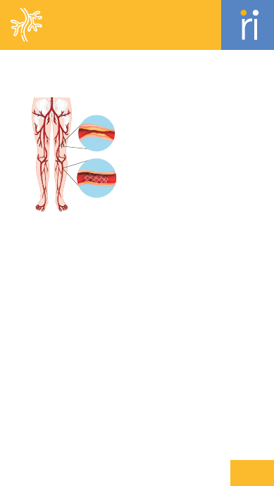
Popliteal Artery
The artery located behind the knee
that supplies blood
to the lower leg.
R
adial Artery
The artery in the forearm commonly
used for catheter
access.
Rapid Exchange (RX) System
A system allowing quick exchange of
devices over a
guidewire during
intervention.
Restenosis
Re-narrowing of a blood vessel after
an initial
treatment to open it.
Rotational Atherectomy
A technique using a rotating device
to remove plaque
from arteries.
S
aphenous Vein
A major vein in the leg that can be
affected by
varicose veins or used in
grafts.
Semi-Compliant Balloon
A balloon that expands slightly
beyond its nominal size
but
maintains some rigidity.
Stent Apposition
The contact and fit of a stent against
the vessel wall
after deployment.
Stent Deployment
The process of placing and
positioning a stent in a
blood vessel.
Stent Diameter
The width of a stent, which must be
chosen to fit the
targeted blood
vessel.
Stent Endothelialization
The process of endothelial cells
growing over a stent,
integrating it
with the vessel wall.
Stent Expansion
The increase in size of a stent to fit
the vessel
properly.
Stent Fracture
Breakage or cracking of a stent that
can lead to loss
of function or
complications.
Stent Graft
A stent with a graft material used to
reinforce a blood
vessel wall.
Stent Length
The length of a stent, which must be
selected based on
the length of the
vessel to be treated.
Stent Migration
The movement of a stent from its
intended position.
Stent Placement
The process of inserting a stent into
a blood vessel to
maintain its open
status.
Stent Radial Force
The force exerted by a stent to
maintain vessel
patency.
Stent Restenosis
The recurrence of stenosis or
narrowing within a stent
over time.
Stent Visibility
The ease with which a stent can be
seen on imaging
during and after
placement.
Superficial Femoral Artery
(SFA)
The main artery in the thigh that
supplies blood to the
leg.
27
Vascular Intervention
Peripheral Vascular
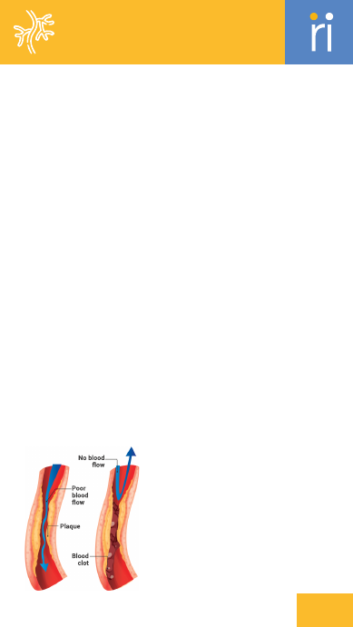
T
hrombectomy
A procedure to remove a blood clot
from a blood vessel.
Thrombosis
The formation of a blood clot inside
a blood vessel.
Tibial Artery
The arteries in the lower leg that
supply blood to the
foot.
V
aricose Veins
Enlarged, twisted veins often found
in the legs, caused
by weakened vein
walls or valves.
Vascular Access
The method of gaining entry into
the vascular system
for medical
procedures.
Vascular Anatomy
The structure and arrangement of
blood vessels in the
body.
Vascular Aneurysm
An abnormal bulge in the wall of a
blood vessel due to
weakness.
Vascular Closure Device
A device used to close the puncture
site after a
vascular procedure.
Vascular Coil
A coil used in embolization to
occlude blood vessels or
aneurysms.
Vascular Flow
The movement of blood
through the vessels.
Vascular Guidewire
A flexible wire used to navigate
and position other
devices
during vascular procedures.
Vascular Imaging
Techniques used to visualize blood
vessels for
diagnosis and treatment
planning.
Vascular Lumen
The interior space of a blood vessel
through which
blood flows.
Vascular Malformation
Abnormal development of blood
vessels leading to a
variety of
conditions.
Vascular Occlusion
Blockage of a blood vessel that
impedes blood flow.
Vascular Remodeling
Changes in blood vessel structure
and function
following treatment.
Vascular Sheath
A protective covering placed over a
catheter or device
to facilitate
insertion and withdrawal.
Vascular Stenosis
Narrowing of blood vessels that
restricts blood flow.
Venous Insufficiency
A condition where veins cannot
adequately return blood
to the
heart, leading to swelling and
discomfort.
Vessel Patency
The openness and unobstructed
state of a blood vessel.
28
Vascular Intervention
Peripheral Vascular
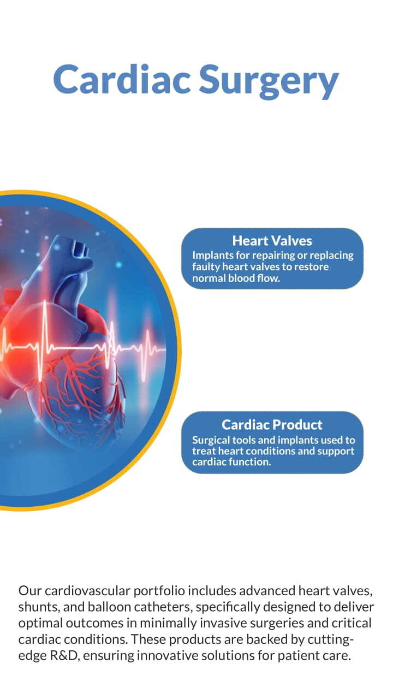
Anastomosis
The surgical
connection between
two structures, such as blood
vessels or segments of the
intestine.
Aneurysm Repair
Surgical procedure to correct an
abnormal bulging or dilation
of an
artery.
Anticoagulation
The use of medication to prevent
blood clot formation.
Aortic Arch
The curved portion of the aorta that
supplies blood to the
arms, head,
and neck.
Aortic Clamp
A device used to temporarily
occlude the aorta during
surgery,
allowing for controlled blood flow.
Aortic Dissection
A serious condition where there is a
tear in the wall of the
aorta, causing
blood to flow between the layers.
Aortic Root
The section of the aorta closest to
the heart, including the
aortic valve
and its surrounding structures.
Aortic Valve
Valve between the left ventricle and
the aorta, regulating
blood flow
from the heart to the body.
Arteriotomy
Surgical incision into an artery to
access or repair it.
Ascending Aorta
The portion of the aorta that rises
from the heart and
supplies blood to
the head and upper body.
Atrial Fibrillation (AF)
An irregular and often rapid heart
rate originating in the
atria.
Atrial Septal Defect (ASD)
A congenital defect characterized
by a hole in the wall
between the
left and right atria.
C
alcification
The buildup of calcium deposits on
heart valves, leading to
stiffening
and reduced function.
Cardiac Output
The amount of blood the heart
pumps per minute, an indicator
of
heart efficiency.
Cardiomyopathy
Disease of the heart muscle that
affects its size, shape, and
function.
Cardioplegia
Induced cessation of heart muscle
activity during surgery to
protect it
from damage.
Cardioplegic Solution
A solution used to induce cardiac
arrest and protect the
heart muscle
during surgery.
Cardiopulmonary Bypass
(CPB)
A technique that temporarily takes
over the function of the
heart and
lungs during surgery.
Chordae Tendineae
Tendon-like cords that connect the
heart valves to the
papillary
muscles, aiding valve function.
Commissure
The area where the leaflets of a
heart valve meet and connect.
Coronary Artery Bypass
Cardiac Surgery
Generic
30
A
bdominal
Aortic Aneurysm
(AAA)
An enlargement of
the aorta in the
abdomen that can
lead to life-
threatening
rupture if
untreated.
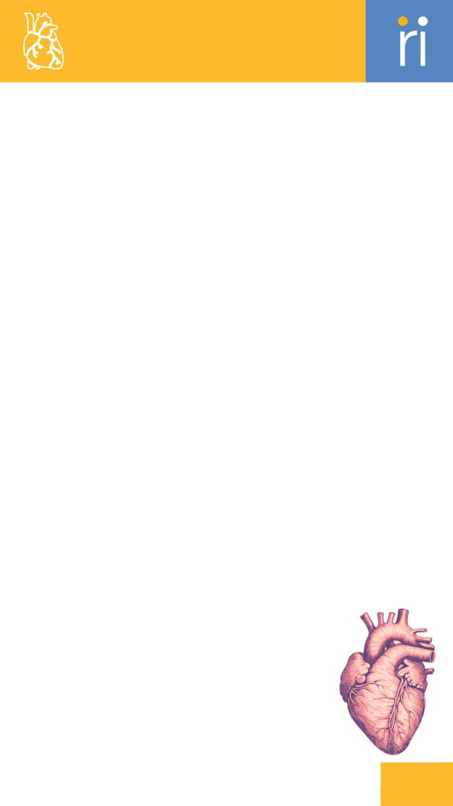
Grafting (CABG)
Surgery to bypass blocked coronary
arteries using grafts to
restore
blood flow to the heart.
Cross-Clamp
A clamp placed across the aorta to
stop blood flow during
cardiac
surgery.
D
efibrillator
A device used to deliver an electric
shock to restore a
normal heart
rhythm in cases of severe
arrhythmia.
Dilated Cardiomyopathy
A condition where the heart
becomes enlarged and weakened,
reducing
its ability to pump blood.
E
chocardiography
Ultrasound imaging of the heart to
evaluate its structure and
function.
Ejection Fraction
The percentage of blood pumped
out of the heart's left
ventricle with
each beat.
Endarterectomy
Surgical procedure to remove
plaque from inside an artery
to
restore blood flow.
Endocarditis
Inflammation of the inner lining of
the heart, typically due
to infection.
Endovascular Surgery
Minimally invasive surgery
performed inside blood vessels,
often
using catheters and guide
wires.
Extracorporeal Membrane
Oxygenation (ECMO)
A life-support technique that
oxygenates blood outside the
body
when the heart and lungs cannot do
so.
F
luoroscopy
Real-time X-ray imaging used to
visualize movement within the
body,
such as during catheter placement.
G
raft
A surgical implant used to bypass
blocked arteries, commonly
made of
vein or synthetic material.
H
eart-Lung Machine
The device used during
cardiopulmonary bypass to
oxygenate
blood and maintain
circulation.
Hemodynamics
The study of blood flow and its
properties, including blood
pressure
and cardiac output.
Hemostasis
The process of stopping bleeding
and maintaining blood flow
during
and after surgery.
Hybrid Operating Room
A surgical suite equipped with
imaging technology for
performing
both traditional and minimally
invasive
procedures.
Hypertrophic Cardiomyopathy
A condition where the heart muscle
becomes abnormally thick,
making
it harder to pump blood.
I
nfective
Endocarditis
Infection of the
heart valves or
inner heart lining,
usually
caused by
bacteria.
Intensive Care Unit
(ICU)
31
Cardiac Surgery
Generic
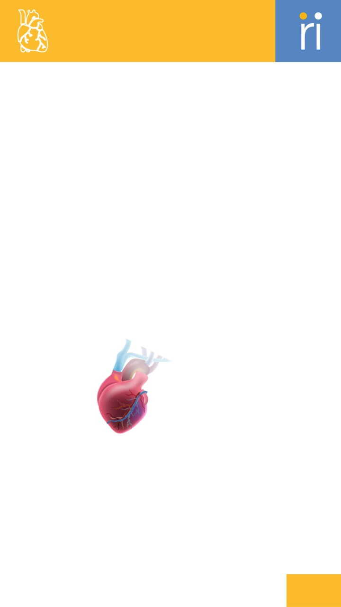
A hospital unit providing specialized
care for critically ill
patients.
Intra-Aortic Balloon Pump
(IABP)
A device that helps the heart pump
blood more effectively by
inflating
and deflating a balloon in the aorta.
Intraoperative Imaging
Imaging techniques used during
surgery to guide the procedure
and
assess progress.
Intraoperative Monitoring
Continuous observation of a
patient’s vital signs and
other
parameters during surgery.
L
eaflet
The flaps of a heart valve that open
and close to regulate
blood flow.
Left Atrial Appendage (LAA)
A small pouch in the left atrium that
can be a source of
blood clots in
atrial fibrillation.
M
aze Procedure
Surgical treatment
for atrial fibrillation
involving
creating
scar tissue to
redirect electrical
impulses.
Minimally Invasive Cardiac
Surgery
Heart surgery performed through
small incisions, often
using
specialized instruments.
Mitral Valve
Valve between the left atrium and
left ventricle, controlling
blood flow
within the heart.
Myocardial Protection
Methods used to protect the heart
muscle from damage during
surgery,
such as cooling or cardioplegia.
O
ff-Pump CABG
CABG performed without using the
heart-lung machine, while
the heart
is still beating.
On-Pump CABG
CABG performed with the use of a
heart-lung machine to stop
the
heart and maintain circulation.
P
acemaker
A device implanted to regulate the
heart’s rhythm and ensure
a steady
heartbeat.
Patch Graft
A surgical material used to close or
repair a defect, often
made from
synthetic or biological sources.
Patent Foramen Ovale (PFO)
A persistent opening in the septum
between the atria that
normally
closes after birth.
Perfusionist
A specialist who operates the heart-
lung machine during
cardiac
surgery.
Pericarditis
Inflammation of the pericardium,
the membrane surrounding
the
heart.
Postoperative Care
Medical care provided after surgery
to ensure recovery and
monitor for
complications.
Protamine
A medication used to reverse the
effects of heparin, an
anticoagulant,
after surgery.
Pulmonary Valve
Valve between the right ventricle
and the pulmonary
artery,
controlling blood flow to the lungs.
32
Cardiac Surgery
Generic

R
eoperation
A second surgical
procedure performed
due to
complications
or failure of the initial
surgery.
Restrictive
Cardiomyopathy
A condition where the heart muscle
becomes rigid, restricting
the
heart’s ability to fill with blood.
Robotic-Assisted Cardiac
Surgery
Cardiac surgery performed with the
aid of robotic systems to
enhance
precision and control.
S
eptal Defect
An abnormal opening in the septum,
the wall dividing the left
and right
sides of the heart.
Sternotomy
Surgical incision through the
breastbone to access the
chest
cavity.
Stroke Volume
The volume of blood ejected from
the heart with each
heartbeat.
T
horacotomy
Surgical incision into the chest
cavity, often used for
accessing
organs like the heart or lungs.
Transesophageal
Echocardiography (TEE)
An echocardiogram performed by
inserting a probe into the
esophagus
for detailed heart imaging.
Tricuspid Valve
Valve between the right atrium and
right ventricle,
preventing backflow
of blood in the heart.
V
alve Annulus
The ring-like structure at the base of
a heart valve,
providing support and
anchoring for the valve leaflets.
Valve Regurgitation
Backward flow of blood through a
valve due to incomplete
closure.
Valve Stenosis
Narrowing of a heart valve that
restricts blood flow through
the
valve.
Ventricular Septal Defect
(VSD)
A congenital defect characterized
by a hole in the wall
between the
left and right ventricles.
Ventriculotomy
Surgical incision into the ventricular
wall, often performed
to access the
heart’s interior.
W
eaning from Bypass
The process of gradually reducing
support from the
heart-lung
machine after surgery.
33
Cardiac Surgery
Generic
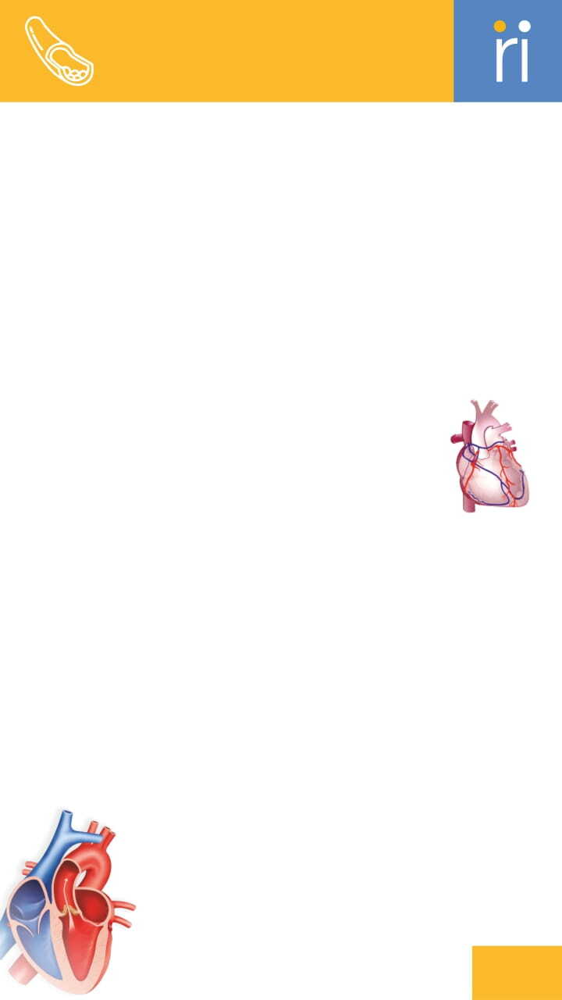
A
nnuloplasty
Surgical repair of the valve annulus
to restore proper valve
function.
Anticoagulation Therapy
The use of medication to prevent
blood clots after valve
surgery.
Aortic Valve
The valve located between the left
ventricle and the aorta,
responsible
for pumping oxygenated blood to
the body.
B
alloon Valvuloplasty
A minimally invasive procedure to
widen a narrowed valve
using a
balloon.
Bileaflet Valve
A mechanical valve with two leaflets
that open and close to
regulate
blood flow.
Biological Valve
A valve created from natural
tissues, often from pig or cow
heart
tissues.
Biomechanical Performance
The mechanical function of a valve,
including its durability
and
efficiency.
Bioprosthetic Valve
A valve made from biological
tissues, typically used for
valve
replacement.
Bovine Pericardium
Tissue from cow pericardium used
in the construction of
bioprosthetic
valves.
C
aged Ball Valve
A type of mechanical
valve where a ball
moves
within a cage
to regulate blood
flow.
Cardiac Output
The volume of blood the heart
pumps in one minute, critical
in
valve function.
Cardiovascular Imaging
Techniques used to visualize the
heart and blood vessels,
especially
for valve assessment.
Chordae Tendineae
Tendinous cords that anchor the
valve leaflets to the heart
muscles.
Commissure
The junction where the valve
leaflets meet and coapt to
ensure
proper valve closure.
Coronary Sinus
A large vein collecting
blood from the heart
muscle,
important
during valve surgeries.
D
urability Testing
Testing a valve prosthesis to ensure
its long-term
performance.
E
chocardiography
A diagnostic test using ultrasound
to visualize heart
structures,
including valves.
Ejection Fraction
The percentage of blood ejected
from the heart with each
contraction,
often assessed during
valve evaluation.
Endocarditis Prevention
Measures taken to prevent infection
of the heart valves,
especially after
surgery.
F
luoroscopy
A real-time X-ray used during valve
surgeries to guide the
procedure.
34
Cardiac Surgery
Heart Valve
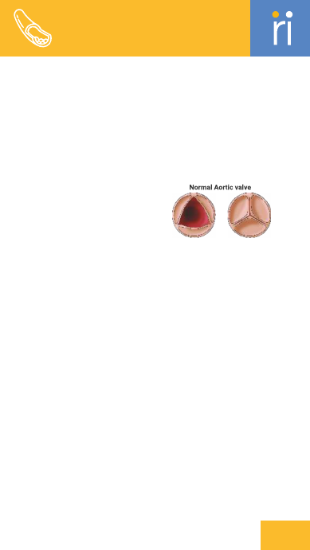
H
eart Valve Prolapse
A condition where the valve flaps do
not close properly, often
leading to
regurgitation.
Hemodynamics
The study of blood flow dynamics
through the heart and blood
vessels.
Hydraulic Efficiency
The effectiveness of a heart valve in
maintaining smooth
blood flow
without obstruction.
I
mplant Procedure
The surgical method used to place a
prosthetic valve in the
heart.
Implantable Device
A device, such as a heart valve, that
is surgically placed
inside the body.
Implantable Valve
A valve designed to be surgically
placed inside the body to
replace a
diseased valve.
Implantation Technique
The specific surgical approach used
to place a prosthetic
valve.
Infective Endocarditis
An infection of the heart valves,
typically caused by
bacteria.
Intraoperative Imaging
Imaging techniques used during
surgery to guide valve
placement.
L
eaflet
Thin flaps of tissue that open and
close to control blood flow
through
the valve.
Leaflet Coaptation
The process where valve leaflets
come together to ensure
proper
closure.
Long-Term Outcomes
The long-term success and health
results after valve surgery.
M
echanical Components
The parts of a mechanical valve that
regulate blood flow, such
as leaflets
or discs.
Mechanical Valve
A heart valve made from durable
materials like metal or
plastic,
designed to last a lifetime.
Mitral Valve
The valve located between the left
atrium and the left
ventricle of the
heart.
P
atient Outcomes
The results and success rates of
valve surgeries, measured in
patient
health improvements.
Patient-Matched Valve
A valve custom-made to fit the
specific anatomy of a patient.
Pericardial Tissue
The tissue surrounding the heart,
often used in valve
construction.
Perioperative Complications
Problems that may arise during or
after surgery, such as
bleeding or
infection.
Porcine Valve
A heart valve made from pig tissue,
used in valve
replacements.
Post-Operative Care
Medical care provided after heart
valve surgery to ensure
recovery.
35
Cardiac Surgery
Heart Valve
Open
Closed
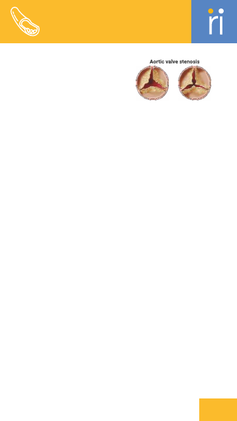
Postoperative Monitoring
The process of observing a patient
after valve surgery for
complications
or improvements.
Preoperative Assessment
Evaluation of a patient before heart
valve surgery to plan
the procedure.
Preoperative Imaging
Imaging done before surgery to
assess the heart and valves
for
surgical planning.
Prosthesis
An artificial device used to replace a
missing or damaged body
part, such
as a heart valve.
Prosthetic Material
The synthetic materials used to
create artificial heart
valves.
Prosthetic Valve
An artificial valve implanted to
replace a damaged heart
valve.
Prosthetic Valve Failure
The malfunctioning of a heart valve
prosthesis,
necessitating
reoperation or replacement.
Pulmonary Valve
The valve located between the right
ventricle and the
pulmonary artery.
R
egurgitant Valve
A valve that leaks, allowing blood to
flow backward.
Regurgitation Volume
The amount of blood that leaks
backward through a faulty
valve.
S
ingle-Leaflet Valve
A valve design with a single leaflet
that opens and closes to
control
blood flow.
Stenotic Valve
A valve that has become narrowed,
restricting blood flow.
Stent Frame
A metal framework used to support
valve prostheses during
implantation.
Surgical Approach
The specific method or incision used
during valve surgery.
Surgical Mesh
A mesh-like structure used in valve
surgeries for tissue
support.
Surgical Valve Replacement
The process of replacing a damaged
valve with a prosthetic or
biological
valve through surgery.
Sutureless Valve
A valve prosthesis that can be
implanted without the need
for
sutures.
T
hrombosis Risk
The likelihood of a blood clot
forming after valve surgery.
Tilting Disc Valve
A mechanical valve design with a
disc that tilts to allow
blood flow.
Tissue Engineering
The process of developing biological
tissue replacements for
damaged
heart valves.
Tissue Valve
A heart valve made from animal
tissue, typically porcine or
bovine.
Transcatheter Valve
Replacement (TAVR)
A minimally invasive procedure to
36
Cardiac Surgery
Heart Valve
Open
Closed
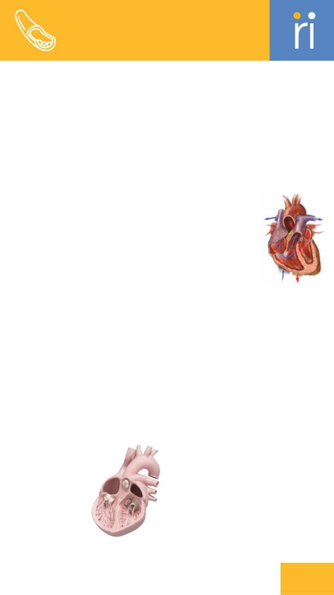
replace a damaged valve without
open-heart surgery.
Transesophageal
Echocardiography (TEE)
A specialized ultrasound used to
assess heart valves during
surgery
via the esophagus.
Transvalvular Gradient
The pressure difference across a
valve, measured to assess
valve
function.
Tricuspid Valve
The valve located between the right
atrium and the right
ventricle.
V
alve Annulus
The ring-like structure that
supports the valve leaflets
and
maintains valve integrity.
Valve Closure
The act of the valve leaflets sealing
shut to prevent backflow
of blood.
Valve Complications
Potential issues, such as infections
or blood clots, that can
occur after
valve surgery.
Valve Crimping
The process of compressing a valve
for delivery during
transcatheter
valve replacement.
Valve Delivery System
The mechanism used to guide and
place a valve during
transcatheter
procedures.
Valve Deployment
The act of placing
a valve prosthesis
in its final
position
during surgery.
Valve
Durability
The ability of a valve
to function properly over time
without
degeneration.
Valve Dysfunction
A condition in which a heart valve
fails to function
properly.
Valve Fracture
A break or crack in a valve
prosthesis, which may
compromise
its function.
Valve Function
The effectiveness of a valve in
regulating blood flow within
the
heart.
Valve Graft
A surgical graft used
to repair or replace a
valve
during surgery.
Valve Inflation
The expansion of a
balloon during balloon
valvuloplasty
to open
a narrowed valve.
Valve Inlet
The opening through which blood
enters the valve.
Valve Leaflet Plication
A technique to repair valve leaflets
by folding and stitching
them to
reduce regurgitation.
Valve Leaks
Unintended gaps in a valve that
allow blood to flow backward.
Valve Opening
The process of the valve leaflets
opening to allow forward
blood
flow.
Valve Outlet
The opening through which blood
exits the valve.
Valve Positioning
Proper alignment of a valve during
surgery to ensure optimal
function.
Valve Puncture
Accidental or intentional piercing of
a valve, usually during
surgical
procedures.
37
Cardiac Surgery
Heart Valve
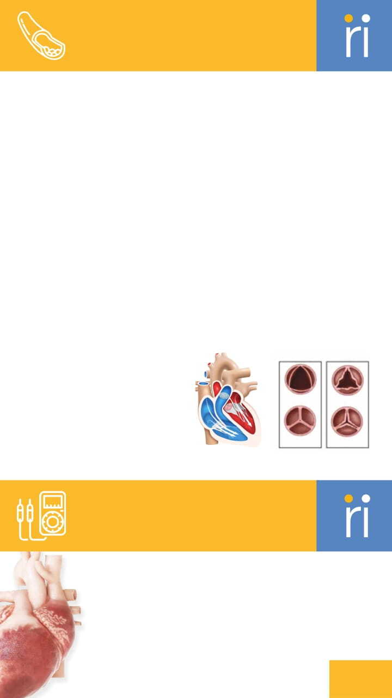
Valve Regurgitation
A condition where the valve does
not close properly, causing
blood to
leak backward.
Valve Reoperation
A second surgery to repair or
replace a previously implanted
valve.
Valve Repair
Surgical techniques used to restore
function to a damaged
heart valve.
Valve Repair Techniques
Surgical methods used to fix
damaged heart valves.
Valve Replacement
The surgical removal of a damaged
valve and its replacement
with a
prosthetic.
Valve Replacement Guidelines
Established protocols for
performing valve replacement
surgeries.
Valve Replacement Strategy
The plan for replacing a diseased
valve, considering
patient-specific
factors.
Valve Risk Assessment
The evaluation of potential risks
before performing valve
surgery.
Valve Selection Criteria
Factors considered in choosing the
most appropriate valve
for a
patient.
Valve Sizing
The process of selecting the
appropriate valve size for an
individual patient.
Valve Stenosis
A condition where the valve
becomes narrowed, impeding blood
flow.
Valve Technology
The latest innovations and materials
used in heart valve
replacements.
Valve Tethering
A condition where valve leaflets are
restricted in their
movement, often
leading to dysfunction.
38
Cardiac Surgery
Heart Valve
Cardiac Surgery
Cardiac Product
A
cute Coronary
Syndrome (ACS)
A range of conditions
associated with
sudden reduced
blood flow to the
heart, including heart attack.
Anesthesia
Medications used to prevent pain
and induce unconsciousness
during
surgery.
Angioplasty

A procedure to open narrowed or
blocked blood vessels of the
heart.
Anticoagulation Therapy
The use of drugs to prevent blood
clots from forming or
growing.
Aortic Arch
The curved portion of the aorta that
gives rise to major
arteries
supplying blood to the upper body.
Aortic Valve
A valve that controls blood flow
from the left ventricle to
the aorta.
Ascending Aorta
The upward section of the aorta
that arises from the heart.
B
alloon Angioplasty
A procedure to widen blocked or
narrowed coronary arteries
using a
balloon-tipped catheter.
Balloon Deflation
The process of deflating a balloon
catheter after an artery
has been
opened.
Balloon Diameter
The width of a balloon catheter
when fully inflated.
Balloon Inflation
The process of inflating a balloon
catheter to open a blocked
artery.
Balloon Length
The length of the balloon portion of
a catheter.
Balloons for PTCA
(Percutaneous Transluminal
Coronary
Angioplasty)
Balloons used to open blocked
coronary arteries during PTCA.
Blood Flow Dynamics
The study of how blood flows
through the cardiovascular
system.
C
ardiac Arrest
A sudden cessation of heart
function, requiring immediate
medical attention.
Cardiac Function
The overall performance of the
heart in pumping blood.
Cardiac Monitoring
Continuous observation of heart
function using medical
devices.
Cardiac Output
The volume of blood the heart
pumps per minute.
Cardiac Rehabilitation
A program designed to improve
cardiovascular health after
heart
surgery or disease.
Cardiac Rhythm Management
Techniques and devices used to
control the heart's
electrical
activity.
Cardiac Support Devices
Mechanical devices used to assist
heart function in patients
with heart
failure.
Cardiogenic Shock
A life-threatening condition where
the heart suddenly cannot
pump
enough blood to meet the body's
needs.
Cardiopulmonary Bypass
(CPB)
A machine that temporarily takes
over heart and lung
functions during
surgery.
39
Cardiac Surgery
Cardiac Product
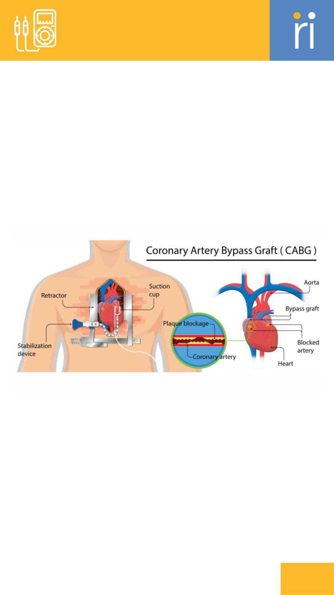
Catheter Insertion Site
The location where a catheter is
inserted into the body.
Catheter Removal
The process of withdrawing a
catheter after it is no longer
needed.
Catheterization
A procedure in which a thin tube
(catheter) is inserted into
a vessel or
cavity.
Clinical Trials
Research studies conducted to
evaluate new medical
treatments or
interventions.
Coronary Angiography
A diagnostic test using contrast dye
to visualize the
coronary arteries.
Coronary Artery Bypass
Grafting (CABG)
A surgical procedure to improve
blood flow to the heart by
diverting
blood around blocked arteries.
Coronary Artery Disease
(CAD)
A condition characterized by the
narrowing of coronary
arteries due
to plaque buildup.
Coronary Bypass
A procedure that creates an
alternative path for blood to flow
around a blocked coronary
artery.
Coronary Occlusion
The blockage of a coronary artery,
often leading to a heart
attack.
Coronary Perfusion Pressure
The pressure gradient that drives
blood flow through the
coronary
arteries.
Coronary Revascularization
Procedures aimed at restoring
blood flow to heart tissues
affected
by blocked arteries.
A technique used by IABP to reduce
the workload on the heart
by
inflating a balloon during diastole.
D
eflation Rate
The speed at which a balloon
catheter is deflated during a
medical
procedure.
Descending Aorta
The section of the aorta that runs
down the chest and
abdomen.
Device Calibration
The process of adjusting a medical
device to ensure accurate
readings.
40
Cardiac Surgery
Cardiac Product

Device Maintenance
Routine care and upkeep to ensure
proper functioning of
medical
devices.
Device Sterilization
The process of cleaning medical
devices to remove all forms
of
microbial life.
Diastolic Dysfunction
Impaired relaxation of the heart,
leading to difficulty in
filling with
blood.
Drug-Eluting Balloon
A balloon catheter that releases
medication to prevent
restenosis of
the artery.
E
mergency Care
Immediate medical treatment
provided in response to urgent
health situations.
Endothelial Function
The performance of the inner lining
of blood vessels,
crucial for vascular
health.
Endovascular Procedure
A minimally invasive surgical
procedure that uses catheters
within blood vessels.
F
ractional Flow Reserve (FFR)
A measure of blood flow in a
coronary artery to determine the
severity of blockages.
G
uidewire
A flexible wire used to guide
catheters and other devices
during
cardiovascular procedures.
H
eart Failure
A condition in which the heart is
unable to pump blood
effectively.
Heart Rate
The number of heartbeats per
minute.
Hemodynamic Monitoring
The tracking of blood pressure and
other aspects of
cardiovascular
performance during medical care.
Hemodynamic Support
Treatments and devices used to
maintain adequate blood flow
and
pressure.
I
ABP Mechanism
The way the intra-aortic balloon
pump works to support the
heart.
Inflation Pressure
The pressure used to inflate a
medical balloon during
angioplasty
or other procedures.
Interventional Cardiologist
A physician specializing in minimally
invasive,
catheter-based treatments
for heart conditions.
41
Cardiac Surgery
Cardiac Product

Intra-Aortic Balloon Catheter
(IABC)
A catheter inserted into the aorta to
reduce heart workload
and improve
blood flow.
Intra-Aortic Balloon Pump
(IABP)
A device that increases blood flow
and decreases heart
workload by
inflating and deflating a balloon in
the
aorta.
Intracoronary Shunt
A device used to divert blood flow in
coronary arteries
during surgery.
Intracoronary Shunt
Indications
The conditions that warrant the use
of an intracoronary
shunt during
surgery.
Intraoperative Monitoring
The continuous monitoring of vital
signs during surgery.
Intravascular Device
A device that is inserted into blood
vessels for treatment
or monitoring.
Intravascular Ultrasound
(IVUS)
A medical imaging technique using a
special catheter to
visualize the
interior of blood vessels.
Ischemic Heart Disease
A condition where narrowed
coronary arteries reduce
blood
supply to the heart.
L
eft Ventricular Assist Device
(LVAD)
A mechanical pump implanted to
help the left ventricle pump
blood.
M
ean Arterial Pressure
(MAP)
The average blood pressure in a
person's arteries during a
single
cardiac cycle.
Myocardial Infarction (MI)
Commonly known as a heart attack,
caused by the blockage of
blood
flow to the heart muscle.
Myocardial Protection
Strategies used during cardiac
surgery to protect heart
muscle
from damage.
O
ptical Coherence
Tomography (OCT)
An imaging method that captures
detailed images of blood
vessel
interiors using light waves.
P
atient Outcomes
The results or consequences of
healthcare treatments on a
patient’s
health.
Percutaneous Coronary
Intervention (PCI)
A non-surgical procedure to open
narrowed coronary arteries.
Percutaneous Valve
42
Cardiac Surgery
Cardiac Product

Intervention
A procedure to repair or replace a
heart valve via catheter.
Postoperative Care
Medical care provided after surgery
to support recovery and
healing.
Post-Procedure Complications
Potential issues that may arise
following a medical
procedure.
Pressure Monitoring
The process of measuring blood
pressure or other pressures
within
the body.
Pressure Wire
A wire used to measure pressure
differences across a
coronary artery
stenosis.
Prophylactic Measures
Preventive actions taken to reduce
the risk of disease or
complications.
Pulmonary Artery Pressure
The blood pressure in the arteries
supplying the lungs.
Pulse Pressure
The difference between systolic and
diastolic blood
pressure.
R
ight Ventricular Assist
Device (RVAD)
A device used to assist the right side
of the heart in
pumping blood to the
lungs.
S
coring Balloon
A balloon catheter with cutting
edges to aid in dilating
tough
arterial blockages.
Shunt Placement Technique
The method used to place a shunt
during heart surgery.
Stent Graft
A stent combined with a graft to
treat aneurysms or blocked
blood
vessels.
Stent Placement
The insertion of a small mesh tube
(stent) to keep an artery
open after
angioplasty.
Surgical Approach
The method or technique used by a
surgeon to perform an
operation.
Surgical Procedure
Any manual or instrumental
operation performed to repair
or
remove damaged tissues or organs.
Surgical Revascularization
Surgical restoration of blood flow to
tissues, usually the
heart or limbs.
Surgical Team
A group of healthcare professionals
working together during
surgery.
Systemic Vascular Resistance
(SVR)
The resistance the heart must
overcome to pump blood
through
the circulatory system.
Systolic Dysfunction
Impaired contraction of the heart,
leading to reduced blood
ejection.
43
Cardiac Surgery
Cardiac Product

T
hrombolysis
The dissolution of blood clots using
medication.
Transcatheter Aortic Valve
Replacement (TAVR)
A minimally invasive procedure to
replace a narrowed aortic
valve.
Transluminal Access
Gaining access to blood vessels
through a minimally
invasive
procedure.
V
alve Replacement
The surgical removal of a damaged
heart valve, replaced with
a
prosthetic one.
Vascular Access
The process of gaining access to a
blood vessel for
treatments or
procedures.
Vascular Access Site
The point at which access to a blood
vessel is gained for
treatment.
Vascular Closure Device
A device used to close an opening in
a blood vessel after a
catheter-
based procedure.
Vascular Endothelial Growth
Factor (VEGF)
A protein that promotes the
growth of new blood vessels.
Vascular Health
The overall condition of the blood
vessels, including their
ability to
transport blood efficiently.
Vascular Surgeon
A specialist in surgeries on blood
vessels outside the heart
and brain.
Volume Status
The balance of fluids in the body,
crucial for maintaining
blood
pressure.
44
Cardiac Surgery
Cardiac Product
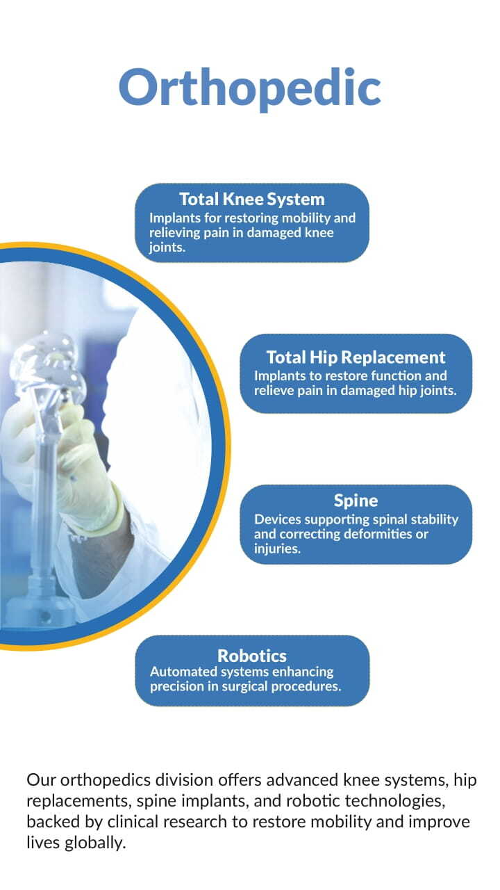

Orthopedic
Generic
Bone Screw
A screw used to fix bone fragments
or secure
implants to bone during
orthopedic surgery.
C
artilage Repair
Procedures aimed at restoring or
regenera ng
damaged car lage in
joints.
Cerclage Wire
Wire used to bind bone fragments
together, o en
around the
circumference of the bone.
Closed Reduction
Non-surgical manipula on of a
bone to align a
fracture without
making an incision.
Compression Screw
A type of screw designed to bring
bone
fragments closer, encouraging
healing through
compression.
D
ecompression Surgery
A surgical procedure to relieve
pressure on the
spinal cord or nerve
roots.
Degenerative Disc Disease
The breakdown of intervertebral
discs, leading to
pain and reduced
mobility in the spine.
Disc Herniation
A condi on where the
intervertebral disc
bulges out,
compressing nearby nerves.
E
xternal Fixation
Stabilization of bones using a frame
outside
the body, connected to the
bone by pins
or wires.
F
acet Joint
Small stabilizing joints located between
Bone Awl
A pointed surgical tool used to
create openings in
bone, o en
before screw or rod
placement.
Bone Cement Injection
The use of a special cement to
stabilize bone
during procedures
like vertebroplasty or joint
replacements.
Bone Grafting
The transplantation of bone tissue
to
repair or rebuild diseased or
damaged bones.
Bone Holding Forceps
A tool used to hold bones during
surgery to
maintain proper
alignment.
Bone Ingrowth
The process where bone grows into
the surface
of an implant, improving
its stability and
fixation.
Bone Mallet
A hammer-like instrument used in
orthopedic
surgery to strike
instruments or manipulate
bones.
Bone Marrow Edema
Swelling and fluid accumulation
within the bone
marrow, often due
to
injury or inflammation.
Bone Plate
A metal plate used to hold bone
fragments in place
during the
healing process.
A
rthroscopy
A minimally invasive
procedure using a
camera
to view and
treat joint
conditions.
iocompatible
B
Material
A material that is compatible
with living tissue and does not
cause an
adverse reaction.
46

and behind adjacent vertebrae in
the spine.
Fixation Device
An implant or tool used to stabilize
bones or joints during
healing.
Fixation Pin
A pin used to stabilize bone
fragments, either temporarily
or
permanently, during healing.
Fracture Management
The treatment of bone fractures,
which may include
reduction,
immobilization, or surgery.
Fracture Plate
A metal plate used to stabilize and
align fractured bones
during
healing.
H
ip Arthroplasty
Surgical replacement or
reconstruction of the hip joint,
commonly
known as hip
replacement.
I
nternal Fixation
The surgical stabilization of
fractured bones using implants
such
as plates, screws, or rods.
Intramedullary Nail (IM Nail)
A metal rod inserted into the bone
marrow canal to stabilize
long bone
fractures.
Intramedullary Rod
A metal rod inserted into the
marrow canal of a bone to
stabilize
fractures, particularly in long bones.
Intraoperative Navigation
The use of real-time imaging to
guide surgical instruments
during
complex orthopedic or spinal
surgery.
J
oint Arthroscopy
A minimally invasive procedure to
examine and treat joint
conditions
using an arthroscope.
Joint Replacement
Surgical procedure in which a
damaged joint is replaced with
a
prosthesis.
K
nee Arthroplasty
Surgical replacement or
reconstruction of the knee joint,
commonly
known as knee
replacement.
K-Wire (Kirschner Wire)
A thin wire used to hold bone
fragments in place during
healing.
Kyphoplasty
A minimally invasive
procedure to treat
spinal
compression
fractures by inflat-
ing a balloon and
injecting
bone
cement.
L
ag Screw
A screw used to compress two
bone fragments together,
promoting
stable fixation.
Ligament Reconstruction
Surgical repair or replacement of a
torn ligament, often
using grafts.
Locking Screw
A type of screw used in orthopedic
surgery that locks into
the plate to
provide stable fixation.
Lumbosacral
Referring to the lower part of the
spine, where the lumbar
spine
meets the sacrum.
Orthopedic
Generic
47

M
eniscal Repair
Surgery to repair a torn meniscus in
the
knee, preserving the cartilage
structure.
Myelopathy
Compression of the spinal cord,
often due to
degenerative changes
in the spine, leading to
neurological
symptoms.
N
euromonitoring
The use of electrophysiological
monitoring during
surgery to ensure
nerve and spinal cord
function is
maintained.
O
pen Reduction
Surgical procedure to realign a
broken bone
by making an incision
at the fracture site.
Orthopedic Chisel
A tool with a sharp edge used to
carve
or cut bone.
Orthopedic Drill
A surgical tool used to create holes
in bone
for screw or pin insertion.
Orthopedic Implant
A device placed inside the body to
support
or replace a damaged bone
or joint.
Orthopedic Surgery
Surgical treatment of
musculoskeletal system
disorders,
including bones, joints, and
muscles.
Osseointegration
The process where bone grows into
and
integrates with an implant,
providing stable
fixation.
Osteolysis
Destruc on or loss
of bone tissue,
often around joint
replacements.
Osteophyte Removal
Surgical removal of bone spurs that
form on joints
due to arthritis.
Osteotome
A surgical instrument
resembling a
chisel
used to
cut or reshape
bone.
P
eriosteal
Elevator
A surgical tool
used to lift and
separate
the
periosteum (the
tissue covering the
bone) from the bone surface.
R
adiculopathy
Compression or irrita on of a nerve
root,
causing pain, numbness, or
weakness along the affected
nerve
path.
Reamer
A tool used in orthopedic surgery to
enlarge
and shape bone cavities,
such as in joint
replacements.
Reduction
Clamp
A surgical instrument
used to hold bone
fragments
in place
during fracture
reduction.
Orthopedic
Generic
48
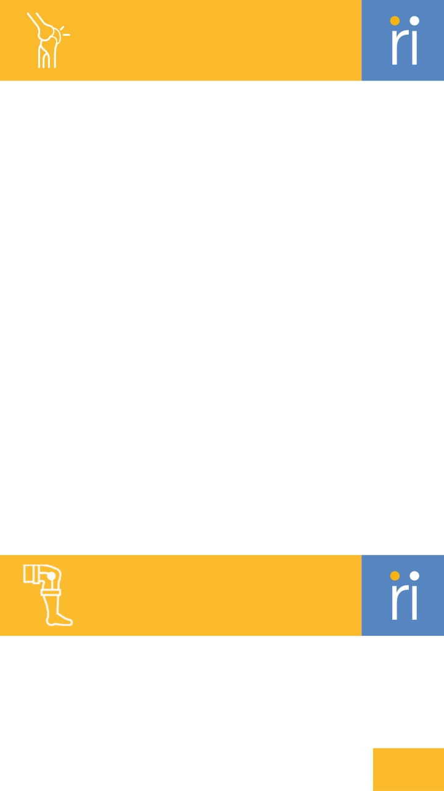
S
acral Screw
A screw used to fixate the sacrum
to the spine during spinal
fusion
surgery.
Sagittal Balance
The alignment of the spine when
viewed from the side,
crucial for
maintaining proper posture.
Spinal Instrumentation
Surgical use of hardware such as
screws, rods, and plates to
stabilize
the spine.
Spinal Stenosis
Narrowing of the spinal canal,
leading to nerve compression
and
pain.
Spinopelvic Alignment
The relationship between the spine
and pelvis, important for
posture
and load-bearing.
Spondylolisthesis
Forward slipping of one vertebra
over another, potentially
causing
pain or nerve compression.
Surgical Retractor
A tool used to hold back tissue or
organs, providing access
to the
surgical site.
Surgical Saw
A powered or manual saw used to
cut bone during orthopedic
procedures.
T
endon Repair
Surgical reconstruction of a torn or
damaged tendon.
Thoracic Spine
The middle part of the spine,
consisting of 12 vertebrae
between
the cervical and lumbar spine.
Thoracolumbar Fusion
Surgical fusion of the thoracic and
lumbar vertebrae to
stabilize the
spine.
Trauma Surgery
Surgical intervention for injuries
caused by physical
trauma,
including fractures and soft
tissue injuries.
V
ertebral Compression
Fracture
A fracture in the vertebra, usually
due to osteoporosis,
causing the
bone to collapse.
Vertebroplasty
A minimally invasive procedure to
stabilize a fractured
vertebra using
bone cement.
Orthopedic
Generic
Orthopedic
Total knee system
A
lignment Guide
Tool used to ensure proper
alignment of knee implant
components.
Anterior Cruciate
Ligament (ACL)
Ligament located at the front of the
knee, crucial for
movement and
stability.
Arthroplasty
Surgical procedure to replace or
49
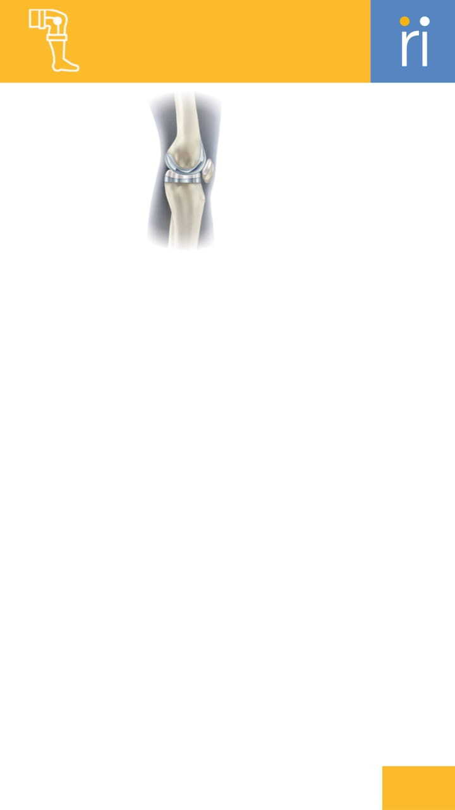
repair a damaged
knee joint.
Articular Cartilage
Smooth tissue covering
the ends of bones in
the knee
joint.
B
icompartmental
Knee Replacement
Replacement of two compartments
of the knee joint.
Bone Awl
Sharp instrument used to create
holes or indentations in
bone.
Bone Cement
Material used to fix implants
to bone during surgery.
Bone Cement Injector
Tool used to inject bone
cement into the joint
space.
Bone Chisel
Chisel-like instrument
used to cut or shape bone.
Bone Drill
Drill used to create holes in bone
for implant placement.
Bone Holding Forceps
Forceps used to grasp and stabilize
bone during surgical
procedures.
Bone Hook
Tool used to hold or manipulate
bone during surgery.
Bone Mallet
Hammer-like tool used to drive or
tap surgical instruments.
Bone Nibbler
Tool used to trim or shape bone with
a nibbling action.
C
ement Gun
Device used to apply bone cement
during surgery.
Cement Restrictor
Device used to limit the flow of
bone cement during
application.
Cemented Implant
Knee implant fixed in place with
bone cement.
Cementless Implant
Knee implant that relies on bone
growth for fixation,
without the use
of cement.
Cruciate-Retaining Knee
Knee implant that preserves the
cruciate ligaments for
natural knee
function.
Curette
Instrument used for scraping or
debriding bone and tissue.
Cutting Block
Tool used to guide precise cuts in
bone during knee
replacement
surgery.
D
istal Femoral Cutting Block
Cutting block used to shape the
distal end of the femur.
Drainage Tube
Tube used to drain fluids from the
surgical area
post-operation.
E
xtension Gap
Space between the femur and tibia
during knee extension.
Extramedullary Alignment
Guide
Alignment guide placed outside the
bone medullary canal.
Orthopedic
Total knee system
50
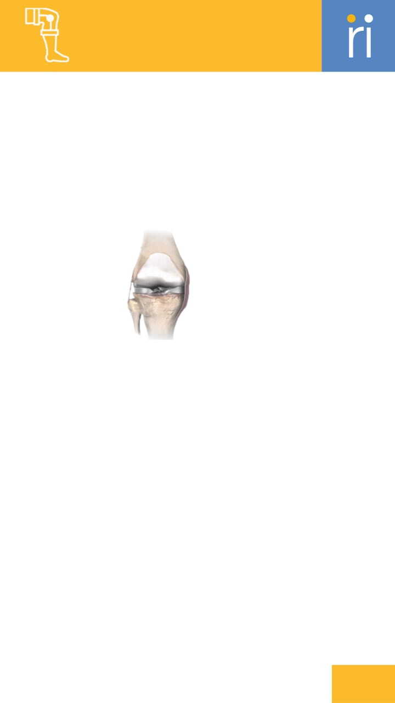
F
emoral Broach
Instrument used to prepare the
femur for implant placement.
Femoral Component
The part of a total knee implant
that replaces the femoral
surface.
Femoral Condyle
The rounded end of the femur that
articulates with the tibia.
Femoral Elevator
Instrument used to lift
and position the femur
during
surgery.
Femoral Impactor
Impactor specifically
used for the femoral
component.
Femoral Resection
Removal of the femoral component
or portion of the femur.
Femoral Resector
Instrument used to remove the
femoral portion of the knee
joint.
Femoral Sizer
Tool used to measure the size of the
femoral component.
Femoral Template
Template used to plan and guide
femoral implant placement.
Femoral Trial Component
Temporary component used to test
fit and alignment of the
femoral
implant.
Flexion Gap
Space between the femur and tibia
during knee flexion.
H
ohmann Retractor
Type of retractor used to expose
bone surfaces.
I
mpactor
Tool used to drive or set implants
into place.
Intramedullary Alignment
Guide
Alignment guide placed within the
bone medullary canal.
J
oint Line Restoration
Technique to restore the natural
alignment of the knee joint
line.
Joint Stability
The ability of the knee joint to
maintain its alignment and
function.
K
nee Distractor
Tool used to separate and distract
knee components for
surgical
access.
L
angenbeck Retractor
Retractor designed to expose and
hold back soft tissues
during
surgery.
Ligament Balancer
Tool used to balance and adjust
ligaments around the knee
joint.
M
eniscus
C-shaped cartilage in the knee that
cushions and stabilizes
the joint.
Minimally Invasive Surgery
(MIS)
Surgical technique involving smaller
incisions and reduced
recovery
time.
Modular Knee System
Knee replacement system with
interchangeable components
for
customization.
Orthopedic
Total knee system
51
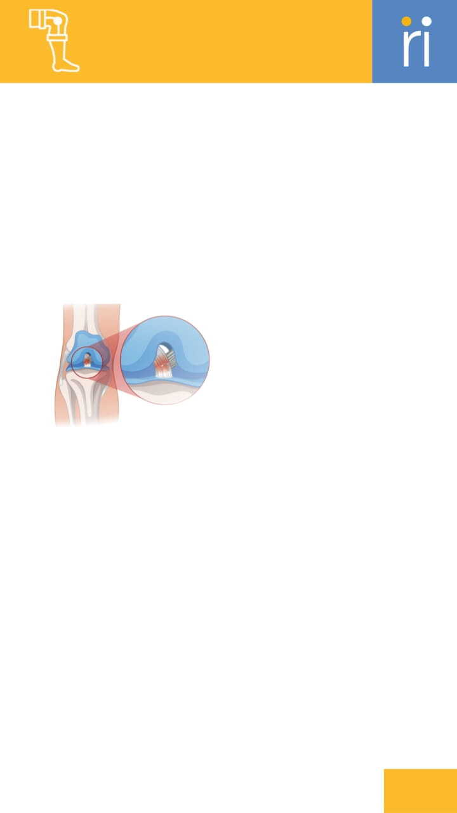
N
avigation System
Technology used to guide the
placement of knee implants
during
surgery.
O
scillating Saw
Surgical saw that moves back and
forth to cut bone.
Osteotome
Surgical tool
used for cutting or
shaping bone.
P
atella Resurfacing
Procedure to replace or smooth the
patellar surface.
Patella Retractor
Instrument used to hold the patella
away during surgery.
Patellar Clamp
Device used to hold the patella in
place during surgery.
Patellar Component
The part of a total knee implant
that replaces the kneecap
(patella).
Patellar Impactor
Impactor specifically used for the
patellar component.
Patellar Resection
Removal of the patellar component
or portion of the patella.
Patellar Sizer
Tool used to measure the size of the
patellar component.
Patellar Trial Component
Temporary component used to test
fit and alignment of the
patellar
implant.
Patellofemoral Arthroplasty
Surgical replacement of the patella
and femoral joint
surface.
Patient-Specific Instruments
(PSI)
Surgical tools customized for an
individual patient’s
anatomy.
Periosteal Elevator
Tool used to separate the
periosteum from the bone surface.
Polyethylene Insert
The plastic part of a knee implant
that provides cushioning
and allows
movement.
Posterior Cruciate Ligament
(PCL)
Ligament located at the back of the
knee, important for
stability.
Posterior-Stabilized Knee
Knee implant with a design to
stabilize the knee by
compensating
for the posterior cruciate ligament.
Postoperative Care
Care and management of the
patient following surgery.
Press-Fit Implant
Implant designed to fit tightly into
the bone without cement.
Proximal Tibial Cutting Block
Cutting block used to shape the
proximal end of the tibia.
R
ange of Motion (ROM)
Measurement of the degrees
through which a joint can move.
Reduction Clamp
Device used to hold bones in
alignment during reduction
Orthopedic
Total knee system
52
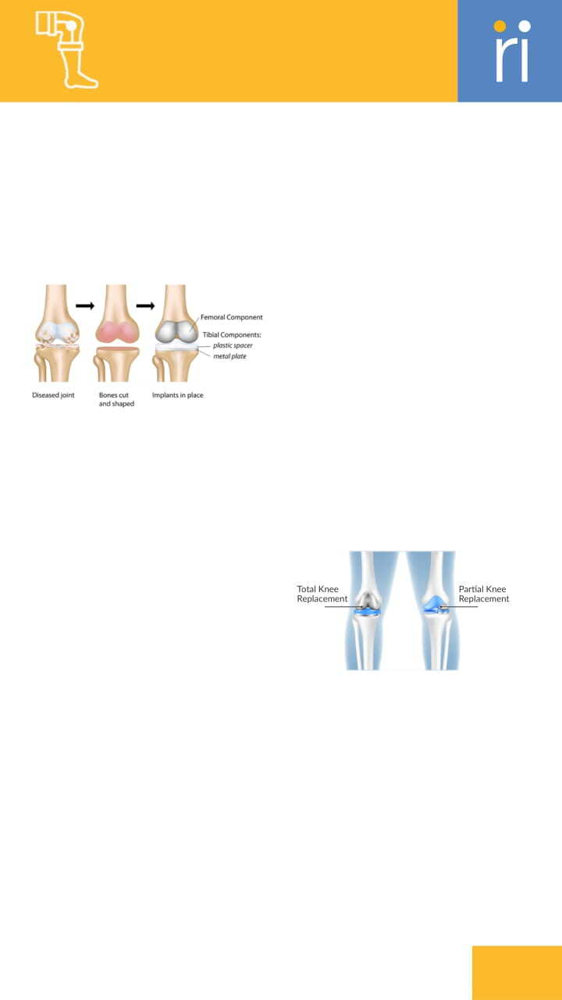
procedures.
Rehabilitation Protocol
Structured plan for physical therapy
and recovery after knee
surgery.
Robotic-Assisted Surgery
Surgery performed with the
assistance of robotic systems for
precision.
Rongeur
Forceps-like instrument used to
remove bone or tissue.
Rotary Cutting Guide
Guide used for making rotational
cuts during surgery.
S
agittal Saw
Saw used for cutting bone in the
sagittal plane.
Screwdriver
Tool used for inserting or removing
screws during surgery.
Self-Retaining Retractor
Retractor that maintains its position
without manual
holding.
Skin Hook
Tool used to lift and retract skin
during surgical
procedures.
Soft Tissue Balancing
Technique to adjust soft tissues for
proper knee function
and
alignment.
Soft Tissue Retractor
Tool used to hold back soft tissues
to improve visibility
during surgery.
Spacer Block
Device used to maintain joint
spacing during surgery.
Subchondral Bone
Bone located beneath the cartilage
of a joint.
Suction Tip
Device used to remove fluids and
debris from the surgical
site.
Surgical Retractor
Instrument used to hold back
tissues and provide a clear view of
the surgical area.
Surgical Saw
Saw used for cutting bone during
surgery.
T
ibial Broach
Instrument used to prepare the
tibia for implant placement.
Tibial Component
The part of a total knee implant
that replaces the tibial
surface.
Tibial Resection
Removal of the tibial component or
portion of the tibia.
Tibial Resector
Instrument used to remove the
tibial portion of the knee joint.
Tibial Sizer
Tool used to measure the size of the
tibial component.
Tibial Template
Template used to plan and guide
tibial implant placement.
Tibial Trial Component
Temporary component used to test
Orthopedic
Total knee system
Total Knee
Replacement
Partial Knee
Replacement
53
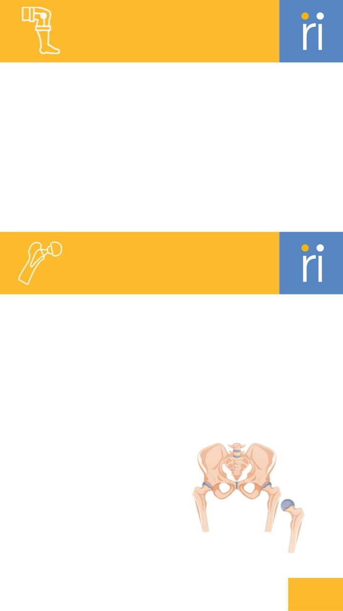
fit and alignment of the tibial
implant.
Trial Reduction
Testing phase where temporary
components are used to assess
fit
and alignment.
Trial Spacer
Temporary spacer used to test joint
space and alignment.
U
nicompartmental Knee
Replacement
Replacement of only one
compartment of the knee joint.
V
arus/Valgus Alignment
Alignment of the knee joint in
relation to inward (varus)
or
outward (valgus) angles.
W
ound Closure
Process of closing and suturing the
surgical incision.
Orthopedic
Total knee system
Orthopedic
Total knee system
A
cetabular Cup
Component of a hip implant that
replaces the acetabulum
(hip
socket).
Acetabular Cup Impactor
Impactor used to place the
acetabular cup into position.
Acetabular Cup Positioner
Device used to position the
acetabular cup accurately
during
surgery.
Acetabular Liner
Plastic or ceramic insert placed
within the acetabular cup
to
provide a smooth surface.
Acetabular Reamer
Reamer used to shape the
acetabulum for implant placement.
Acetabulum
The cup-shaped socket in the pelvis
that articulates with the
femoral
head.
Alignment Jig
Device used to ensure correct
alignment of implants during
surgery.
Anterior Approach
Surgical approach to the hip from
the front of the body.
Arthroplasty
Surgical procedure to replace or
repair a damaged hip joint.
Aseptic Loosening
Implant loosening due to lack of
infection but due to
mechanical
factors.
B
iomechanics
The study of the mechanical
aspects of living organisms,
54
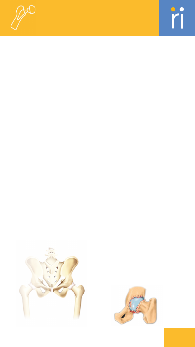
Orthopedic
Total knee system
including joint function.
Bone Awl
Sharp instrument used to create holes
or indentations in
bone.
Bone Cement
Material used to fix implants to bone
during surgery.
Bone Cement Injector
Tool used to inject bone cement into
the joint space.
Bone Chisel
Chisel-like instrument used to cut or
shape bone.
Bone Drill
Drill used to create holes in bone for
implant placement.
Bone Holding Forceps
Forceps used to grasp and stabilize
bone during surgical
procedures.
Bone Hook
Tool used to hold or manipulate bone
during surgery.
Bone Mallet
Hammer-like tool used to drive or tap
surgical instruments.
Bone Nibbler
Tool used to trim or shape bone
with a nibbling ac on.
Broach
Instrument used to prepare the
femoral canal for implant
placement.
C
ancellous
Bone
Spongy, inner bone ssue that supports
bone marrow and
provides shock
absorp on.
Cement Gun
Device used to apply bone cement
during surgery.
Cement Restrictor
Device used to limit the flow of
bone cement during
application.
Cemented Prosthesis
Hip implant fixed in place with bone
cement.
Cementless Prosthesis
Hip implant that relies on bone
growth for fixation, without
the use
of cement.
Ceramic-on-Ceramic
Hip implant with both femoral head
and acetabular liner made
of
ceramic.
Cortical Bone
Dense, outer layer of bone that
provides strength and
support.
Cross-Linked Polyethylene
Enhanced polyethylene liner with
improved wear resistance.
Cup Positioning
Process of placing the acetabular
cup in the correct
anatomical
position.
Cup Reamer
Reamer specifically used to prepare
the acetabular socket.
Curette
Instrument used for scraping or
debriding bone and tissue.
55
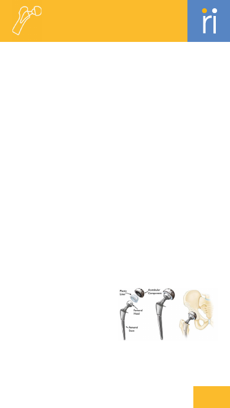
D
islocation
Condition where the hip joint
components are out
of their
position.
Drainage Tube
Tube used to drain fluids from the
surgical area
post-operation.
Dual Mobility Cup
Acetabular cup with a mobile liner
for enhanced range of motion and
stability.
F
emoral Canal
The hollow space within the femur
that houses the
femoral stem.
Femoral Elevator
Instrument used to lift and position
the femur during
surgery.
Femoral Head
The ball-shaped part of a hip
implant that replaces the
top of the
femur.
Femoral Head Extractor
Tool used to remove the femoral
head component during
surgery.
Femoral Head Impactor
Impactor specifically used for the
femoral
head component.
Femoral Offset
Measurement of the distance
between the
center of the femoral
head and the femoral canal.
Femoral Reamer
Reamer used to shape the femoral
canal for implant
placement.
Femoral Stem
Component of a hip implant that
replaces the femoral
shaft.
Femur
The thigh bone that forms the
upper part of the
hip joint.
Fluoroscopy
Real-time X-ray imaging used to
guide surgical
procedures.
H
emiarthroplasty
Surgical replacement of only the
femoral head, not
the acetabulum.
Hip Resurfacing
Procedure to replace the surface of
the femoral head and
acetabulum.
Hohmann Retractor
Type of retractor used to expose
bone surfaces.
I
mpactor
Tool used to drive or set implants
into place.
Intraoperative Imaging
Imaging techniques used during
surgery to guide
placement and
ensure accuracy.
Intraoperative Navigation
Techniques used during surgery to
guide precise implant
placement.
J
oint Stability
The ability of the hip joint to
maintain its
position and function
properly.
L
angenbeck Retractor
Retractor designed to expose and
hold back
soft tissues during
surgery.
Orthopedic
Total knee system
56
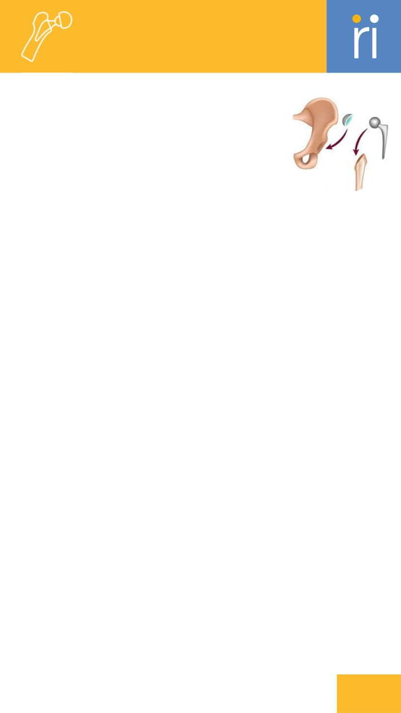
Lateral Approach
Surgical approach to the hip from
the side of the body.
Leg Length Discrepancy
Difference in leg lengths that may
require correc on during
surgery.
Load Bearing
The ability of the hip implant to
support and distribute
weight.
M
etal-on-Metal
Hip implant with both femoral head
and acetabular liner made
of metal.
Minimally Invasive Surgery
(MIS)
Surgical technique involving smaller
incisions and reduced
recovery
time.
Modular Neck
Adjustable component connecting
the femoral stem to the
femoral
head.
Modular Prosthesis
Hip implant with interchangeable
components for
customization.
O
scillating Saw
Surgical saw that moves back and
forth to cut bone.
Osteointegration
The process of bone growing into
and integrating with an
implant.
Osteolysis
Bone resorp on or loss around an
implant, often due to wear
debris.
Osteotome
Surgical tool used to cut or shape
bone.
Osteotomy
Surgical procedure to cut and
reshape bone to correct
alignment.
P
atient-
Specific
Instruments (PSI)
Surgical tools
customized to fit an
individual patient's
anatomy.
Periosteal Elevator
Tool used to separate the periosteum
from the bone surface.
Periprosthetic Fracture
Fracture occurring around an implanted
prosthesis.
Polyethylene Liner
Plastic liner used in the
acetabular cup to reduce
friction.
Posterior Approach
Surgical approach to the
hip from the back of
the body.
Postoperative Care
Care and management of the patient
following surgery.
Press-Fit Implant
Implant designed to fit tightly into the
bone without cement.
R
adiolucent
Describes materials that appear
dark on X-rays, indicating
low
density.
Radiopaque
Describes materials that appear
white on X-rays, indicating
high
density.
Range of Motion (ROM)
Measurement of the degrees
through which the hip joint can
move.
Rasp
Tool used to shape and smooth
bone surfaces during surgery.
Reamer
Tool used to shape and enlarge the
Orthopedic
Total knee system
57
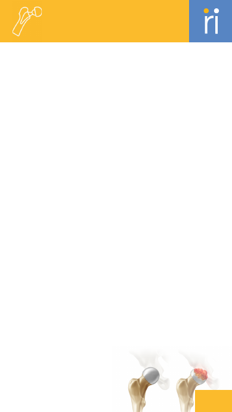
bone canal for implant fittng.
Reduction Clamp
Device used to hold bones in
alignment during reduction
procedures.
Revision Surgery
Surgery performed to replace or
repair a
previously implanted hip
prosthesis.
Robotic-Assisted Surgery
Surgery performed with the
assistance of robotic systems
for
precision.
Rongeur
Forceps-like instrument used to
remove bone or tissue.
S
agittal Saw
Saw used for cuttng bone in the
sagittal plane.
Screwdriver
Tool used for inserting or removing
screws during surgery.
Self-Retaining
Retractor
Retractor that maintains its position
without manual
holding.
Skin Hook
Tool used to lift and retract
skin during surgical
procedures.
Stem Extractor
Tool used to remove the femoral
stem if needed.
Stem Inserter
Tool used to insert the femoral
stem into the bone canal.
Sterile Packaging
Packaging that ensures the sterility
of surgical instruments
and
implants.
Stress Shielding
Bone loss around an implant due to
reduced load bearing on
surrounding bone.
Suction Tip
Device used to remove fluids and
debris from the surgical
site.
Surgical Guide
Tool or system used to assist in the
accurate placement
of implants.
Surgical Retractor
Instrument used to hold back
tissues and provide a clear view of
the surgical area.
Surgical Saw
Saw used for cutting bone during
surgery.
Surgical Template
Pre-operative planning tool used to
simulate and guide
implant
placement.
T
rial Component
Temporary component used to test
fit and alignment of hip
implants.
Trial Cup
Temporary acetabular cup used to
test fit and alignment.
Trial Head
Temporary femoral head used to
test fit and range of motion.
Trial Stem
Temporary femoral stem used to
test fit and alignment.
W
ear Rate
Measurement of the rate at which
implant materials wear down
over
time.
Wound Closure
Process of closing and suturing the
surgical incision.
Orthopedic
Total knee system
58
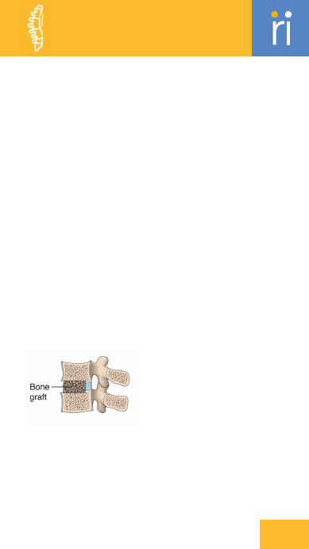
A
djacent Segment Disease
Degenerative changes occurring in
spinal segments adjacent to
a
fusion site.
Alignment Jig
Tool used to ensure proper
alignment of spinal implants.
Allograft
Bone graft taken from a donor.
Annulus Fibrosus
Outer ring of the intervertebral disc
made of fibrous tissue.
Anterior Approach
Surgical approach from the front of
the body.
Anterior Cervical Discectomy
and Fusion (ACDF)
Surgery to remove a damaged disc
in the cervical spine and
fuse
adjacent vertebrae.
Autograft
Bone graft taken from the patient's
own body.
Awl
Sharp instrument used to create
holes in bone.
B
one Curette
Instrument used for scraping or
debriding bone.
Bone Drill
Drill used to create holes in bone
for implants.
Bone Elevator
Tool used to lift and separate bone
layers during surgery.
Bone Graft
Transplant of bone tissue to
promote fusion or healing.
Bone Rasp
Tool used to smooth or shape bone
surfaces.
Bone Retractor
Instrument used to hold back
tissues and bone during surgery.
Bone Substitute
Material used to replace or
augment bone in surgery.
C
age
Device placed between vertebrae
to support interbody fusion.
Cancellous Screw
Screw designed for fixation in the
spongy (inner) bone layer.
Cannulated Screw
Screw with a central channel used
for guided insertion.
Cervical Pedicle Screw
Pedicle screw specifically used in
the cervical spine.
Cervical Plate
Metal plate used to stabilize
cervical vertebrae.
Cervical Spine
The portion of the spine in the neck
region.
Compression Forceps
Forceps used to apply compression
to spinal segments.
Coronal Balance
Alignment of the spine in the
coronal plane to maintain
posture.
Corpectomy
Surgical removal of a vertebral body
and its discs.
Cortical Screw
Screw designed for fixation in the
Orthopedic
Spine
59
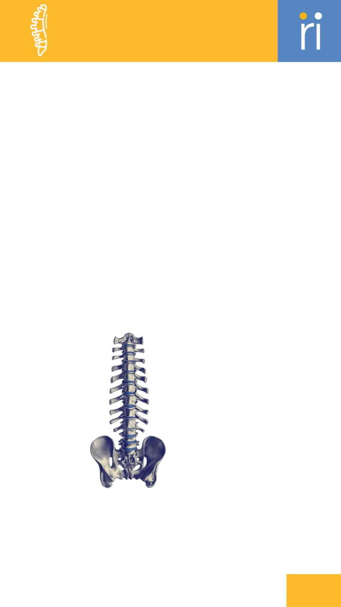
cortical (outer) bone layer.
Cross Connector
Device used to connect rods and
screws in spinal implants.
Curette
Tool used for scraping or debriding
bone and tissue.
D
egenera ve Disc Disease
Condition characterized by the
deterioration
of intervertebral discs.
Disc Space Preparation
Process of preparing the space
between vertebrae for disc
or
implant insertion.
Discectomy
Surgical removal of a damaged
intervertebral disc.
Distraction Forceps
Forceps used to separate or distract
vertebrae during
surgery.
Drill Guide
Device used to guide
drills for precise
placement in
surgery.
E
xpandable Cage
Implant that expands
to fit the disc space.
F
acet Joint
The joint between
adjacent
vertebrae that
facilitates
spinal movement.
Fluoroscopy
Real-time X-ray imaging used to
guide spinal procedures.
Foraminotomy
Surgical procedure to widen the
foramen to relieve nerve
root
compression.
Fusion Rate
Measure of the success rate of
spinal fusion procedures.
G
raft Holder
Tool used to hold a bone graft in
place during surgery.
Graft Impactor
Tool used to insert and impact bone
grafts into place.
I
mplant Inserter
Tool used to place implants into the
spine.
Interbody Fusion Device
Implant used to facilitate fusion
between vertebrae.
Interbody Spacer
Device placed between vertebrae
to support fusion.
Intervertebral Disc
Cartilaginous structure between
vertebrae that acts as a
cushion.
Intraoperative Imaging
Imaging performed during surgery
to guide and
monitor procedures.
K
errison Rongeur
Forceps-like instrument used for
bone removal.
Kyphosis
Excessive outward curve of the
thoracic spine.
L
aminectomy
Surgical removal of the lamina to
relieve pressure on the
spinal cord.
Laminectomy Punch
Tool used to remove bone or tissue
during laminectomy.
Orthopedic
Spine
60
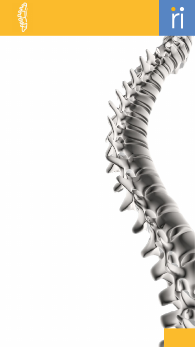
Lateral Approach
Surgical approach from the side of
the body.
Lateral Lumbar Interbody
Fusion (LLIF)
Fusion of lumbar vertebrae through
a lateral approach with
an interbody
device.
Lordosis
Natural inward curve of the lumbar
spine.
Lumbar Spine
The portion of the spine in the
lower back.
M
inimally Invasive Surgery
(MIS)
Surgery performed with smaller
incisions to reduce
recovery time.
Monoaxial Screw
Screw with a single axis of motion
for fixed alignment.
N
avigation System
Technology used to guide surgical
instruments with high
precision.
Nerve Hook
Tool used to hold and manipulate
nerves during surgery.
Nerve Retractor
Tool used to retract nerves to
provide a clear view during
surgery.
Nerve Root
The initial segment of a spinal nerve
emerging from the
spinal cord.
Nucleus Pulposus
Gel-like core of the intervertebral
disc that provides
cushioning.
O
cciput
The back part of the skull that
Orthopedic
Spine
61
Orthopedic
Spine
articulates with the cervical spine.
Osteotome
Surgical instrument used to cut or
shape bone.
P
edicle
Bony projection on a vertebra
connecting the lamina to
the
vertebral body.
Pedicle Screw
Screw inserted into the pedicle of a
vertebra to stabilize
the spine.
PEEK Cage
Cage made of PEEK
(polyetheretherketone) used for
spinal
fusion.
Polyaxial Screw
Screw with multiple axes of motion
to improve alignment.
Posterior Approach
Surgical approach from the back
of the body.
Posterior Cervical Fusion
Fusion of cervical vertebrae
through a posterior approach.
Posterior Lumbar Interbody
Fusion (PLIF)
Fusion of lumbar vertebrae
through a posterior approach
with
an interbody device.
Postoperative Care
Care and management of the
patient following spinal surgery.
R
eduction Forceps
Forceps used to correct the
alignment of bones or implants.
Robotic-Assisted Surgery
Surgery performed with the
assistance of robotic systems
for
precision.
Rod
Metal rod used to provide
structural support in spinal
fusion.
Rod Bender
Tool used to bend metal rods to fit
spinal implants.
Rod Cutter
Tool used to cut metal rods in spinal
implants.
Rod Inserter
Tool used to insert rods into spinal
implants.
Rod Passer
Tool used to pass rods through
screws in spinal surgery.
S
acroiliac Joint
Joint connecting the sacrum to the
ilium of the pelvis.
Sagittal Balance
Alignment of the spine in the sagittal
plane to maintain
posture.
Scoliosis
Abnormal lateral curvature of the
spine.
Screw Inserter
Tool used to insert screws into the
spine.
Screwdriver
Tool used to insert or
remove screws in
spinal
surgery.
Spinal Canal
The canal within the
vertebrae that houses
the spinal
cord.
Spinal Cord
The major neural
pathway running
through the
spinal
canal.
Spinal Fusion
Surgical procedure
to join two or
62
more vertebrae together.
Spinal Stenosis
Narrowing of the spinal canal that
can compress nerves.
Spinous Process
The bony projec on on the back of
a vertebra.
Spinous Process Clamp
Clamp used to hold or stabilize the
spinous processes during
surgery.
Spondylolisthesis
Displacement of a vertebra rela ve
to the
adjacent vertebrae.
Stability
Ability of the spinal structure or
implant to remain stable
and
secure.
Sterilization
Process of making surgical
instruments free from
microorganisms.
Surgical Guide
Tool or system that provides a
template for precise
surgical
procedures.
T
ap
Tool used to create threads in bone
for screw inser on.
Thoracic Spine
The portion of the spine in the
upper and mid-back region.
Thoracolumbar Junc on
Area of the spine where the
thoracic and lumbar regions
meet.
Titanium Cage
Cage made of tanium used for
spinal fusion.
Transforaminal Lumbar
Interbody Fusion (TLIF)
Fusion of lumbar vertebrae through
a side approach with an
interbody
device.
Transverse Process
Lateral bony projec ons from the
sides of a vertebra.
Trial Spacer
Temporary implant used to test fit
and alignment in spinal
surgery.
V
ertebrae
The individual bones that make up
the spine.
Vertebrectomy
Surgical removal of a vertebra.
Orthopedic
Spine
Orthopedic
Robotics
3D
Imaging
Technique to produce three-
dimensional images
of anatomical
structures.
3D Reconstruction
Crea on of a three-dimensional
model from pa ent scans for
surgical planning.
A
cetabular
Component
The part of a hip
63
prosthesis that replaces the
acetabulum (hip socket).
Acetabular Guide
Instrument used to guide implant
placement in the acetabulum
during
hip replacement.
Acetabular Reamer
Tool used to prepare the
acetabulum for a hip implant.
Acetabular Resection Guide
Guide used for resecting the
acetabulum during hip
replacement
surgery.
Acetabulum
The hip socket that holds the
femoral head in place.
Active Robotics
Fully automated robots are called
active
Alignment Verification
Process of confirming proper
alignment of implants during
surgery.
Anatomic Landmarks
Key reference points on the body
used to guide surgical
procedures.
Articular Cartilage
Smooth tissue covering the ends of
bones in joints
for easy movement.
B
one Cement
Substance used to secure joint
implants to the bone during
joint
replacement.
Bone Model
3D representa on of the pa ent’s
bone structure used
for surgical
planning.
Bone Morphology
The study of the shape and
structure of bones.
Bone Preparation
Process of shaping and preparing
bone surfaces for implant
placement.
Bone Resection
Surgical removal of bone tissue for
prosthetic implanta on.
C
alibra on Check
Verifying the accuracy of the
robotic system’s movements
before
or during surgery.
Cemented Fixation
Joint implant fixation using bone
cement to secure the
implant.
Cementless Fixation
Joint implant fixation
without cement, relying
on bone
growth for stability.
Complication Rate
The frequency of
complications
occurring during
or after a
surgical
procedure.
Component
Sizing
Choosing the
correct size of
implant components based
on the
patient’s anatomy.
CT Scan
Imaging technique using X-rays to
create detailed
cross-sectional
images.
Cutting Block
Guide block used to make precise
bone cuts during joint
replacement.
D
ynamic Assessment
Evaluation of joint func on and
stability during surgery.
Orthopedic
Robotics
64
E
lectromagnetic Tracking
Tracking system using
electromagnetic fields to monitor
surgical
instruments.
Extension Gap
The space between joint surfaces
when the knee is
straightened
(extended).
F
emoral Component
The part of a joint prosthesis that
replaces the femoral
portion of the
joint.
Femoral Condyle
The rounded ends of the femur that
articulate with the tiia
in the knee
joint.
Femoral Guide
Instrument used to guide bone
cutting or implant placement
in the
femur.
Femoral Head
The rounded upper part of the
femur that fits into the hip
socket.
Femoral Resection Guide
Guide used for accurately cutting
the femur during knee
or hip
surgery.
Femoral Sizer
Tool used to measure the size of the
femur to select the
correct implant.
Flexion Gap
The space between joint surfaces
when the knee is bent
(flexed).
Force Sensors
Devices that measure forces
applied during surgery to
ensure
safe handling of tissues.
H
aptic Feedback
Tactile feedback provided to the
surgeon through robotic systems.
I
mplant
Durability
The lifespan
and long-
term reliability of joint
implants.
Implant Kinematics
Study of motion and forces applied
on implants during joint
movement.
Implant Positioning
The accurate placement of implants
during
surgery for optimal function.
Implant Stability
The long-term stability of an
implant after placement.
Instrument Docking
Process of a aching surgical
instruments to the robotic
system
for operation.
Intraoperative Adjustments
Changes made during surgery
based on real-time data and
imaging.
Intraoperative Imaging
Imaging performed during surgery
to guide and
monitor procedures.
Intraoperative Navigation
Technology that guides surgeons
during surgery for precise
implant
placement.
J
oint Alignment
Proper positioning of joint
components for optimal
function
and balance.
Joint Kinematics
Study of the movement of a joint,
often used in planning
joint
replacement.
Joint Line Restoration
Re-establishing the correct joint line
height during joint
replacement
surgery.
Orthopedic
Robotics
65
Joint Stability
The ability of a joint to maintain its
position during
movement.
K
inematics
Study of motion, particularly joint
movement without
considering
forces.
M
inimally Invasive Surgery
(MIS)
Surgical techniques with smaller
incisions to reduce
recovery time.
Modular Implants
Implants that can be customized
and adjusted during
surgery for
proper fit.
MRI
Magnetic Resonance Imaging, a
method of using magnetic field
to
visualize soft tissues, joints.
O
perating Room Integration
The incorporation of robotics into
the workflow and layout
of the
operating room.
Optical Tracking
Tracking system using cameras and
markers for real- me
surgical
navigation.
P
artial Joint Replacement
Replacement of part of a damaged
joint while preserving the
healthy
section.
Passive Robotics
Semi-Automated robots or robots
which act as navigation.
Patient Outcomes
The overall results and recovery
experienced by the patient a er
surgery.
Patient-Matched Technology
Technology designed specifically to
match a patient’s unique
anatomy.
Patient-Specific
Instrumenta on (PSI)
Surgical tools customized for a
patient's specific anatomy.
Periprosthetic Joint
The joint area surrounding a
prosthesis.
Polyethylene Insert
Plastic insert placed between joint
components in joint
replacements.
Postoperative Care
Care provided to the patient
following robotic-assisted
surgery.
Postoperative Evaluation
Assessment of surgical outcomes
through imaging and
physical
examination.
Precision Cutting
Highly accurate bone cuts made by
robotic systems during
surgery.
Preoperative Planning
Preparation before surgery using
patient-specific data and
imaging.
Preoperative Scanning
Imaging performed before
surgery to plan the procedure.
Press-Fit
Implant fixation technique where
the implant
is tightly fitted into the
bone.
Prosthetic Alignment
Proper positioning of
joint prosthetics to
ensure
function and
longevity.
R
adiopaque
Markers
Orthopedic
Robotics
66
Markers visible on imaging used for
tracking and guiding
surgery.
Range of Motion (ROM)
The extent of movement possible in
a joint or body part.
Real-Time Feedback
Immediate information provided to
the surgeon during
surgery for
decision-making.
Recovery Time
The amount of time it takes for a
patient to heal and return
to normal
function.
Registration Process
Process of aligning a patient’s
anatomy to the robotic
system for
accurate guidance.
Rehabilitation Protocol
A set plan for recovery and physical
therapy following
surgery.
Robotic Arm
Mechanized arm that assists in
surgery for enhanced
precision and
control.
Robotic Arm Trajectory
The planned path of the robotic
arm during surgery to
ensure
accuracy.
Robotic Calibration
The process of adjusting
the robotic system for
accurate
movement and precision.
Robotic-Assisted Surgery
Surgery performed with robotic
systems to enhance precision
and
control.
S
oft Tissue Balancing
Adjustment of surrounding tissues
to ensure proper joint
function
post-surgery.
Soft Tissue Management
Techniques used to handle and
protect soft tissues during
surgery.
Software Update
Regular updates to robotic systems’
software to enhance
functionality
and accuracy.
Sterile Field
Area in surgery that is maintained
free of contaminants to
prevent
infection.
Subchondral Bone
Bone just below the articular
cartilage in a joint.
Surgeon Console
The control interface where the
surgeon operates the
robotic
system.
Surgeon Ergonomics
The design and arrangement of
surgical tools to enhance
surgeon
comfort and efficiency.
Surgeon Interface
The interface through which the
surgeon interacts with the
robotic
system.
Surgical Accuracy
The precision with which a
procedure is performed, often
enhanced
by robotics.
Surgical Planning Software
Software used to design and
optimize surgical procedures.
Surgical Robot
Robotic system used to assist or
perform surgeries with
high
precision.
Surgical Workflow
The sequence of processes and
tasks followed during robotic
Orthopedic
Robotics
67
Visual Navigation
Use of imaging technology to guide
surgeons during
robotic-assisted
surgery.
W
ear Patterns
Areas of wear and tear on implants
over time due to joint
movement.
surgery.
System Maintenance
Routine checks and servicing of
robotic systems to ensure
proper
function.
T
ibial Component
The part of a joint prosthesis that
replaces the tibial
portion of the
joint.
Tibial Guide
Instrument used to guide bone
cutting or implant placement
in the
tibia.
Tibial Plateau
The upper surface of the tibia that
interacts with the
femoral condyle.
Tibial Resection Guide
Guide used for cutting the tibia
during knee replacement
surgery.
Tibial Sizer
Tool used to measure the size of the
tibia for implant selection.
Tissue Protection
Techniques and tools used to
minimize damage to surrounding
tissues during surgery.
Total Joint Replacement
Replacement of a damaged joint
with a prosthetic joint
through
surgery.
Tracking System
System used to monitor the
movement of surgical tools
and
patient anatomy.
Trial Implants
Temporary implants used to check
fit and alignment during
surgery.
V
irtual Boundaries
Predefined safe zones set within
robotic systems to
prevent
unintended movement.
Orthopedic
Robotics
68
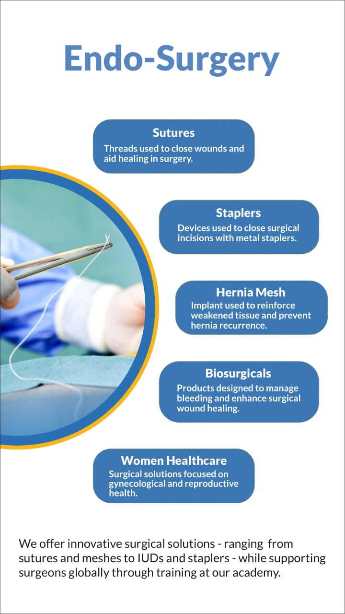
70
Endo-Surgery
Generic
such as blood vessels or intestines.
Antibacterial Coating
A surface coating on medical
devices to prevent bacterial
growth
and infection.
Aponeurosis
A flat, broad tendon that connects
muscles to bones or other
tissues.
B
ipolar Energy
A surgical technique using electrical
current between two
electrodes for
precise tissue cutting and
coagulation.
Blunt Dissection
Surgical separation of tissues using
tools without sharp
edges to
minimize damage.
C
apillary Action
The ability of a liquid to flow in
narrow spaces, often
important in
wound healing and suturing.
Carcinoma
A type of cancer that originates
from epithelial cells,
commonly
affecting skin or organ linings.
Coagulation
The process of blood clotting or
using devices to stop
bleeding
during surgery.
Colostomy
A surgical procedure where a
portion of the colon is brought to
the abdominal surface to
create an
opening (stoma) for waste removal.
Cutting Needle
A needle designed to cut through
tissue, typically used in
suturing
dense or tough tissues.
D
issection
The careful separation of tissues to
expose underlying
structures during
surgery.
Doxorubicin
A chemotherapy drug used to treat
various types of cancer
by
interfering with cell division.
E
lectrosurgery
The use of electrical current to cut
tissue or coagulate
blood vessels
during surgery.
Endoscopic Surgery
Minimally invasive surgery
performed using an endoscope to
view
and operate on internal organs.
Endotoxin
A toxic substance released from the
cell walls of bacteria,
causing
inflammation and infection.
Epidural Hematoma
A buildup of blood between the skull
and the dura mater,
usually due to
head trauma.
Ethylene Oxide Sterilization
A method of sterilizing medical
devices using ethylene oxide
gas to
kill bacteria and viruses.
F
ascial Closure
The suturing or closing of the fascial
layer (connective
tissue) at the end
of surgery.
A
dhesion
Prevention
Methods used to
prevent
the
formation
of scar
tissue
that binds
organs
together
after
surgery.
Anastomosis
Surgical connection
between two tubular structures,
Endo-Surgery
Generic
Fibrin Glue
A biological adhesive used to
promote tissue healing and
stop
bleeding during surgery.
Fixation Device
Surgical devices like screws or
plates used to stabilize and
hold
tissues or bones in place.
G
astrointestinal Anastomosis
The surgical connection of two
sections of the
gastrointestinal
tract.
H
emostasis
The process of stopping bleeding,
either naturally or through
medical
intervention.
Hemostatic Agent
A substance used to promote the
clotting of blood and stop
bleeding
during surgery.
Hydrogel
A water-based gel used in wound
care to maintain a moist
environment
and promote healing.
Hydrolysis
A chemical reaction involving the
breakdown of a compound due
to
reaction with water, relevant in
absorbable sutures.
I
ntraoperative Complication
An unexpected problem occurring
during surgery, such as
bleeding or
organ injury.
L
aparoscopy
A minimally invasive surgical
procedure involving small
incisions
and the use of a camera-equipped
laparoscope.
Ligature
A thread or wire used in surgery to
tie off blood vessels or
tissues to
prevent bleeding.
Lymphadenectomy
Surgical removal of one or more
lymph nodes, typically to
prevent
the spread of cancer.
M
astectomy
The surgical removal of one or both
breasts, usually to treat
or prevent
breast cancer.
Microbial Barrier
A protective layer that prevents
bacteria from penetrating a
surface,
often used in wound dressings.
Minimally Invasive Surgery
Surgery performed through small
incisions, causing less
damage and
promoting faster recovery.
Mucosal Repair
The restoration of the mucous
membrane lining, usually after
injury
or surgical intervention.
O
mentoplasty
The surgical use of the omentum (a
fold of the peritoneum) to
cover or
support internal organs or wounds.
P
eritoneum
The membrane lining the abdominal
cavity and covering
abdominal
organs.
Postoperative Adhesion
Scar tissue that forms after surgery,
71
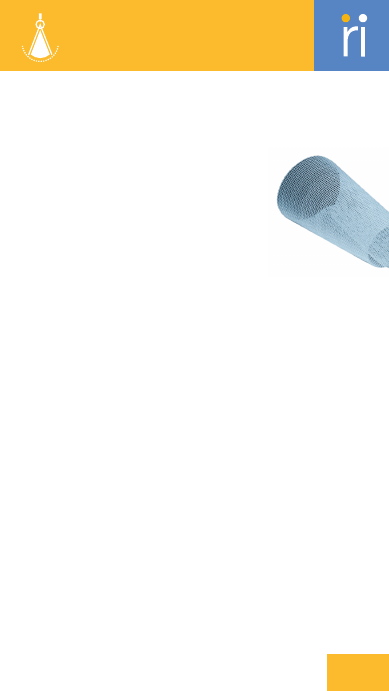
72
Endo-Surgery
Generic
causing internal tissues or organs to
stick together.
R
adiopaque
A substance or material that does
not allow X-rays to pass
through,
making it visible on radiographic
images.
Rectus Sheath
A fibrous layer that encloses the
rectus abdominis muscles in
the
abdominal wall.
S
eroma Prevention
Methods used to prevent the
accumulation of fluid (seroma) at
a
surgical site.
Sterile Field
A specially prepared area free from
microorganisms,
maintained during
surgery to prevent infection.
T
horacoscopic Surgery
Minimally invasive surgery
performed on the chest cavity
using
a thoracoscope.
Tissue Approximation
The bringing together of tissues
during surgery to promote
healing,
typically using sutures or adhesives.
Tissue Integrity
The health and functional state of
tissue, crucial for proper
healing
post-surgery.
Tissue Reinforcement
Strengthening of tissues, often using
surgical meshes or
grafts to support
weak areas.
Trocar
A surgical instrument used to create
an opening in the body,
commonly
used in laparoscopic surgeries.
Trocar Site Closure
The suturing or sealing of the
incision made by a trocar
during
minimally invasive surgery.
W
ound Closure
The process of
sealing a wound
using sutures,
staples,
or
adhesives
to promote healing.
Wound Healing
The physiological process by
which the body repairs tissue
damage
after surgery or injury.
Wound Infection
The invasion of microorganisms into
a wound, leading to
inflammation,
pus, and delayed healing.
Wound Retraction
The pulling back of wound edges,
which can occur post-surgery
and
complicate healing.
Wound Strength
The tensile strength of a wound as it
heals, typically
increasing as the
tissue regenerates.
Z
-Stitch
A suture technique that creates a
zigzag pattern to provide
extra
strength and reduce tension in
wound closure.
73
Endo-Surgery
Sutures
A
bsorbable Suture
Suture designed to dissolve and be
absorbed by the body over
time.
Aneurysm
An abnormal bulge in the wall of a
blood vessel.
Anesthesia
Administration of medications to
induce loss of sensation
or
consciousness.
Anastomosis
Surgical connection between two
structures or organs.
Antimicrobial Coating
Coating that reduces or prevents
microbial growth on sutures.
Aortic Valve
Valve in the heart that controls
blood flow from the left
ventricle to
the aorta.
Arterial Graft
Surgical replacement of an artery
using a graft.
Atrial Septal Defect
A congenital heart defect involving
a hole in the heart's
atrial septum.
B
icaval Technique
Surgical technique for repairing
atrial septal defects
involving both
vena cavae.
Bicuspid Valve
Heart valve with two cusps, also
known as the mitral valve.
Blunt Dissection
Surgical technique involving the
separation of tissues
without
cutting.
Braided Suture
Suture made from multiple
interwoven threads for strength
and
flexibility.
Bypass Surgery
Surgical procedure creating an
alternative route for blood
flow.
C
ardioplegia
Induced temporary cessation of
heart activity during surgery.
Cardiopulmonary Bypass
Machine-assisted circulation and
oxygenation of blood during
heart
surgery.
Carotid Artery
Major artery supplying blood to the
brain, neck, and face.
Cauterization
Use of heat to burn and seal tissues
to prevent bleeding.
Corneal Transplant
Surgical procedure to replace
damaged corneal tissue with
healthy
donor tissue.
Coronary Artery Bypass
Grafting (CABG)
Surgery to bypass blocked coronary
arteries using grafts.
Cryoablation
Destruction of tissue using extreme
cold.
D
ermatoplasty
Surgical repair or reconstruction of
the skin.
Diathermy
Use of high-frequency electric
currents to treat tissues.
74
Endo-Surgery
Sutures
tissues during surgery.
Hypertrophic Scar
Thick, raised scar that forms due to
excessive collagen
production.
I
ntrastromal Suture
Suture placed within the corneal
stroma, often for corneal
surgery.
K
eratoplasty
Surgical procedure to reshape or
replace the cornea.
L
igature
Device or material used to tie off
blood vessels or ducts.
Ligation Clips
Clips used to occlude blood vessels
or ducts.
Linear Stapler
Stapler that places a row of staples
in a linear fashion.
M
astectomy
Surgical removal of one or both
breasts, often due to cancer.
Mitral Valve
Valve between the left atrium and
left ventricle of the
heart.
E
electrocautery
Surgical technique using electrical
currents to cut or
coagulate tissue.
Endothelial Cells
Cells lining the interior surface of
blood vessels and heart.
Epicardium
The outer layer of the heart's serous
pericardium.
Ethicon Sutures
Brand of surgical sutures known for
quality and variety.
Extracorporeal Membrane
Oxygenation (ECMO)
Machine that provides cardiac and
respiratory support outside
the
body.
F
emoral Artery
Major artery in the thigh supplying
blood to the lower limbs.
Fibroplasia
Formation of fibrous tissue in
response to injury or surgery.
Fixation Suture
Suture used to secure tissues or
implants in place.
G
ore-Tex Suture
Suture made from a synthetic
material known for its strength
and
biocompatibility.
H
eart Valve Replacement
Surgical procedure to replace a
damaged heart valve with a
prosthetic
one.
Hemostasis
The process of stopping bleeding
during or after surgery.
Hydrodissection
Use of fluid to separate or dissect
75
Endo-Surgery
Sutures
Monofilament Suture
Single-strand suture known for its
smoothness and strength.
N
on-absorbable Suture
Suture that does not dissolve and
remains in the body
permanently.
O
cular Trauma
Injury or damage to the eye.
Oculoplastic Surgery
Surgery involving the repair or
reconstruction of the eyelids
or
surrounding structures.
Open Heart Surgery
Surgical procedures performed on
the heart through a large
incision.
Ophthalmic Suture
Suture specifically designed for eye
surgeries.
Optic Nerve
Nerve that transmits visual
information from the retina to
the
brain.
P
atch Graft
Graft used to repair or cover a
defect in tissue.
Pericardium
The membrane enclosing the heart.
Plastic Surgery
Surgery aimed at reconstructing or
enhancing body structures.
Polypropylene Suture
Suture made from polypropylene,
known for its strength and
durability.
Postoperative Complication
An issue or problem that arises
following surgery.
Prosthetic Valve
Artificial heart valve used to replace
a damaged valve.
R
efractive Surgery
Surgery aimed at correcting vision
problems.
Retinal Detachment
Separation of the retina from its
underlying tissue, which
can impair
vision.
Retinal Reattachment
Surgical procedure to repair a
detached retina.
Retention Suture
Suture used to secure tissues and
maintain their position
during
healing.
S
aphenous Vein
Large vein in the leg used for
grafting in bypass surgeries.
Scalp Closure
Closure of wounds or incisions on
the scalp.
Scar Revision
Surgical procedure to improve the
appearance of a scar.
Silk Suture
Suture made from silk, known for its
flexibility and
strength.
Skin Graft
Transplant of skin to repair or
76
Endo-Surgery
Sutures
replace damaged areas.
Spatulated Needle
Needle with a flattened, spatula-like
tip used for suturing
delicate
tissues.
Stainless Steel Suture
Suture made from stainless steel,
known for its strength and
corrosion
resistance.
Stenosis
Narrowing of a bodily passage or
opening.
Sterile Technique
Methods to maintain a clean,
infection-free environment
during
surgery.
Sternotomy
Surgical incision into the sternum to
access the heart or
chest cavity.
Subcutaneous Tissue
Tissue layer beneath the skin that
stores fat and provides
insulation.
Suture Needle
Needle used to pass suture material
through tissues.
Suture Passer
Instrument used to insert or remove
sutures.
T
ensile Strength
The maximum amount of stress a
suture can withstand while
being
stretched.
Tissue Adhesive
Adhesive used to bond tissue
surfaces together without
sutures.
Tissue Bank
Facility where donated tissues are
stored for medical use.
Tissue Expansion
Technique to stretch and enlarge
tissue, often used in
reconstructive
surgery.
Tissue Perfusion
Adequate blood flow to tissues to
support their health and
healing.
Transcatheter Aortic Valve
Replacement
Minimally invasive procedure to
replace aortic valve using a
catheter.
Tricuspid Valve
Valve between the right atrium and
right ventricle of the
heart.
Trocar
Instrument used to create an access
port in minimally
invasive surgeries.
V
alve Annulus
The ring-like structure supporting a
heart valve.
Valve Leaflet
Flap-like structure of a heart valve
that
regulates
blood flow.
Valve Repair
Surgical procedure to fix a
malfunctioning heart valve.
Vascular Graft
Graft used to replace or bypass
damaged blood vessels.
Vessel Ligation
Procedure to occlude or tie off
blood vessels to stop
bleeding.
Vitrectomy
Surgical removal of the vitreous gel
from the eye.
W
ound Closure
The process of closing a wound to
facilitate healing.
77
Endo-Surgery
Staplers
A
bsorbable Clip
A clip designed to be absorbed by
the body over time,
used to secure
tissues.
Aneurysm
An abnormal bulge in the wall of a
blood vessel.
Antimicrobial Coating
Coating that reduces or prevents
microbial growth on
medical
devices.
Aorta
The largest artery in the body that
carries blood from
the heart.
Aortic Clamping
Application of a clamp to the aorta
to control blood
flow during surgery.
Arterial Ligation
Surgical procedure to close off an
artery using a
ligature.
Arteriosclerosis
Hardening and narrowing of the
arteries due to plaque
buildup.
B
ariatric Surgery
Surgical procedures aimed at weight
loss by altering
the digestive system.
Biliary Clip
A clip used to close off bile ducts
during surgery.
Blunt Dissection
Surgical technique involving the
separation of tissues
without
cutting.
Bypass Grafting
Surgical procedure creating an
alternative route for blood flow.
C
apillary Action
Movement of fluids through small
spaces due to surface
tension.
Cardiovascular Surgery
Surgery performed on the heart and
blood vessels.
Cauterization
Use of heat to burn and seal tissues
to prevent
bleeding.
Clip Cartridge
A device component that holds
multiple clips for
surgical use.
Clip Applicator
Instrument used to place clips
during surgery.
Clip Deployment
Process of placing or applying a clip
during surgery.
Clip Ligator
Tool used to apply clips to tissues or
vessels.
Clip Retraction
Mechanism for withdrawing or
adjusting clips during
application.
Closure Integrity
The quality and reliability of a
wound closure achieved
with
staplers.
Colorectal Surgery
Surgery performed on the colon and
rectum.
Cutting Stapler
Stapler designed to cut and staple
tissue
simultaneously.
D
ermal Stapler
Stapler used for closing skin
incisions.
Dissection
The process of separating or cutting
Adhesion
Formation of abnormal
tissue connections or
scar tissue.
Anastomosis
Surgical connection
between
two structures or
organs.
78
Endo-Surgery
Staplers
tissue for surgical access.
E
lectrosurgery
Surgical technique using electrical
current to cut or
coagulate tissue.
Endoscopic Clip
Clip used in endoscopic surgery to
secure tissues or
structures.
Endoscopic Stapler
Stapler used in endoscopic
procedures to place staples.
Endoscopic Surgery
Minimally invasive surgery
performed using an endoscope.
Endothelial Cells
Cells lining the blood vessels and
heart.
Eversion Technique
Technique involving turning a
structure inside out for
surgical
access.
F
emoral Artery
Artery supplying blood to the lower
limbs.
Fixation Clip
Clip used to hold tissues or
structures in place.
Fixation Suture
Suture used to secure tissues or
implants in place.
G
eneral Surgery
Broad category of surgery
involving various body systems.
Gastroplasty
Surgical procedure to alter the
stomach, often for weight
loss.
Gynecologic Surgery
Surgery related to female
reproductive organs.
H
emostasis
Control or stopping of bleeding
during or after surgery.
Herniorrhaphy
Surgical repair of a hernia by
suturing the defect.
Hydrolysis
Chemical process where materials
break down in the presence
of
water.
I
ntraoperative Hemorrhage
Bleeding that occurs during surgery.
K
not Security
Ensuring that surgical knots remain
secure to prevent suture
failure.
L
aparoscopic Clip
Clip used in laparoscopic surgery for
tissue management.
Laparoscopic Stapler
Stapler used in laparoscopic
procedures for placing staples.
Laparoscopy
Minimally invasive surgical
technique using a laparoscope.
Ligation
The process of tying off a vessel or
duct to prevent blood
flow or
drainage.
79
Endo-Surgery
Staplers
Linear Stapler
Stapler that places a row of staples
in a linear
fashion.
Loop Ligation
Procedure using a looped suture or
clip to tie off
vessels or ducts.
Lumen Closure
Sealing of the internal space of a
tubular structure.
M
inimally Invasive Surgery
Surgical techniques that require
smaller incisions and
cause less
damage.
Monofilament Suture
Single-strand suture known for its
smoothness and
strength.
N
on-absorbable Clip
Clip that remains in the body
permanently without
being
absorbed.
Non-absorbable Stapler
Stapler designed to remain in the
body without
degradation.
O
pen Surgery
Traditional surgery performed
through large incisions.
P
eritoneal Closure
Closing of the peritoneal cavity after
surgery.
Prophylactic Clip
Clip used to prevent complications
or recurrence of a
condition.
R
adiopaque Clip
Clip that is visible on X-rays for easy
identification.
Rectus Sheath
Skin Stapler
Stapler designed specifically for
closing skin wounds.
Sphincterotomy
Surgical incision into a sphincter
muscle to relieve
pressure or
obstruction.
Spinal Surgery
Surgery performed on the spine
and related structures.
Staple Line
The row of staples placed by a
stapler during surgery.
Staple Removal
The process of removing staples
after the wound has
healed.
Stainless Steel Stapler
Stapler made from stainless steel
for durability and
resistance to
corrosion.
Stenosis
Narrowing of a bodily passage or
opening.
Sterile Field
A controlled area free from
microorganisms to
prevent
infection.
Sternotomy
Surgical incision into the sternum to
The connective tissue surrounding
the rectus abdominis
muscle.
Retention Suture
Suture used to maintain the position
of tissues during
healing.
S
aphenous Vein
Large vein in the leg used for
grafting in bypass
surgeries.
Serrated Stapler
Stapler with a serrated edge to grip
and secure
tissues.
80
Endo-Surgery
Staplers
access the chest cavity.
Subcutaneous Closure
Closure of wounds beneath the skin
layer.
T
issue
Approximation
Bringing tissue edges
together for healing.
Tissue Adhesive
Substance used to bond tissues
together without sutures.
Tissue Integrity
Maintenance of tissue health and
function after surgical
intervention.
Tissue Perfusion
Flow of blood through tissues to
maintain oxygenation and
nutrient
supply.
Transanal Surgery
Surgery performed through the anal
canal.
Trocar Site
The entry point for a trocar used in
laparoscopic surgery.
Trocar Sterilization
Process of ensuring that trocars are
free from microorganisms before
use.
V
ascular Clip
Clip used to occlude blood vessels
during surgery.
Vascular Stapler
Stapler designed for use in vascular
surgery to secure blood
vessels.
Vein Graft
A surgical procedure using a vein to
bypass a blocked artery.
Vessel Ligation
Procedure to tie off blood vessels to
stop bleeding or divert
blood flow.
W
ound Closure
The process of closing a wound or
incision to promote
healing.
Wound Healing
The body's process of repairing
damaged tissue following an
injury.
Wound Reinforcement
Strengthening of the wound site to
ensure proper healing and
reduce
complications.
Vascular Intervention
Hernia Mesh
A
bdominal Wall
The layer of muscles and connective
tissues that forms the
front part of
the abdomen.
Adhesion
Abnormal scar tissue that binds
organs or tissues together.
Anterior Abdominal Wall
The front portion of the abdominal
wall.
Anterior Repair
Repair of a hernia through an
incision made on the front of
the
abdomen.
Aponeurosis
A flat, fibrous sheet of connective
tissue that attaches
muscles to
bones.
81
Endo-Surgery
Hernia Mesh
B
assini technique
An open surgical method for
inguinal hernia repair by
suturing
the inguinal ligament to the
transversalis
fascia.
Biocompatibility
The ability of a material to function
within the body without
causing
adverse effects.
Biological Mesh
Mesh made from natural biological
materials, often derived
from animal
tissue.
Biomaterial
Any material used in medical
devices that interacts with
biological
systems.
Burst Strength
The maximum pressure a mesh can
endure before failing or
tearing.
C
arcinoma
A type of cancer originating in
epithelial cells.
Chronic Pain
Persistent pain that continues
beyond the expected healing
time.
Coated Mesh
Mesh with a protective coating to
reduce complications like
adhesion.
Collagen
A protein providing structural
support to tissues and organs.
Comorbidities
Additional health conditions
occurring alongside a primary
condition.
Composite Mesh
Mesh made from a combination of
materials to enhance
performance
and compatibility.
CT Scan
Imaging technique using X-rays to
create cross-sectional images of the
body.
D
efect Size
Measurement of the size of the
hernia defect or opening.
Direct Hernia
Hernia that protrudes directly
through the abdominal wall,
not
through the inguinal canal.
Dissection
The surgical process of cutting into
tissues to access
underlying areas.
E
HS Classification
A system for categorizing hernias
based on type and severity.
Endoscopic Repair
Hernia repair performed using a
small camera and
instruments
through tiny incisions.
Epigastric Hernia
Hernia occurring in the upper
central region of the abdomen.
Erosion
The wearing away of tissue or
material over time.
eTEP
A laparoscopic hernia repair method
accessing the
preperitoneal space to
place mesh and reinforce the
abdominal
wall.
Extraperitoneal
Situated outside the peritoneal
cavity.
F
emoral Hernia
Hernia occurring in the femoral
canal near the groin.
Fixation Device
Instrument used to secure the
hernia mesh in place during
surgery.
Fixation Suture
Sutures used to attach the hernia
mesh to surrounding
tissues.
Foreign Body Reaction
Immune response against an
implanted material recognized
as
foreign.
H
ernia Mesh
A prosthetic device used to support
the abdominal wall and
prevent
hernia recurrence.
Hernioplasty
Surgical repair of a hernia, often
involving the use of mesh.
Herniorrhaphy
Surgical procedure to repair a
hernia by stitching the
defect
closed.
Herniotomy
Surgical removal of a hernia sac,
followed by repair.
Hydrolysis
Breakdown of a compound
due to reaction with water,
affecting
materials
like mesh.
I
ncisional Hernia
Hernia that occurs through a
surgical incision.
Indirect Hernia
occurs when abdominal contents
protrude through the inguinal
canal
in the lower abdominal wall.
Inferior Epigastric Artery
Artery located below the epigastric
region, important in
hernia surgery.
Inguinal Hernia
Hernia that occurs in the inguinal
canal, typically in the
groin area.
Inlay Mesh
Mesh placed within the layers of
tissue at the site of the
hernia
defect.
L
aparoscopic Hernia Repair
Hernia repair performed using
minimally invasive
laparoscopic
techniques.
Laparoscopy
Minimally invasive surgical
technique using a camera
inserted
through small incisions.
Lichtenstein technique
A tension-free open surgery for
inguinal hernia repair using
mesh to
reinforce the abdominal wall.
Lightweight Mesh
Mesh designed to be less dense for
increased comfort and
reduced
stiffness.
M
acroporous Mesh
Mesh with large pores to allow for
better tissue integration
and
reduced adhesion.
Mesh Adhesion
The attachment of the mesh to
surrounding tissues, which can
be
problematic.
Mesh Plug
82
Endo-Surgery
Hernia Mesh
A type of mesh used to fill and close
the hernia defect.
Mesh Reinforcement
Additional support provided by
mesh to enhance hernia
repair
durability.
Mesh Shrinkage
Reduction in the size of the mesh
over time due to
factors like
pressure or body heat.
Minimally Invasive Surgery
Surgical techniques that use smaller
incisions and
cause less tissue
damage.
Morbidity
The incidence of disease or
complications resulting
from a
medical condition.
Multifilament Mesh
Mesh made from multiple fibers or
threads, offering
enhanced strength
and flexibility.
Myofascial Defect
Defect involving both the muscle
and its connective
tissue layer.
Myopectineal orifice
It is an anatomical space in the
lower abdomen that
allows the
passage of nerves and blood vessels
and
is a common site for hernias.
N
on-absorbable Mesh
Mesh that remains permanently in
the body and is not
absorbed over
time.
O
cclusion
Blockage of a passage or
vessel.
Omentum
A fold of peritoneum
extending from the
stomach
that can be
involved in hernia repairs.
Onlay Mesh
Mesh placed on top of the defect
and over the abdominal
wall.
Open Hernia Repair
Traditional hernia repair through a
large incision.
P
arastomal Hernia
Hernia occurring near a stoma or
artificial opening in
the abdomen.
Parietal Peritoneum
The outer lining of the peritoneal
cavity.
Patch Repair
Using a mesh patch to repair a
hernia defect.
Peritoneal Adhesion
Formation of scar tissue within the
peritoneal cavity.
Peritoneal Cavity
The space within the abdomen lined
by the peritoneum.
Peritoneal Defect
A defect or opening in the
peritoneal lining.
Polypropylene Mesh
A synthetic mesh made from
polypropylene, used in
hernia
repair.
83
Endo-Surgery
Hernia Mesh
Postoperative Complication
Complications that arise after a
surgical procedure.
Preperitoneal Space
The area between the peritoneum
and the abdominal wall.
Primary Closure
Immediate closure of a wound or
defect without additional
support.
Prophylactic Mesh
Mesh used to prevent hernia
formation or recurrence.
Prosthetic Mesh
A synthetic or biological material
used to support or
reinforce tissues.
R
ectus Abdominis
The major muscle of the abdominal
wall, often involved in
hernia
repairs.
Recurrence Rate
The frequency at which hernias
reoccur after initial repair.
Recurrent Hernia
A hernia that reappears after having
been previously
repaired.
Retrorectus Repair
Repair of a hernia performed behind
the rectus abdominis
muscle.
S
acralization
Fusing of the lower vertebrae into
the sacrum, which may
affect hernia
repair.
Seroma
Accumulation of clear fluid at the
surgical site.
Shouldice technique
A tension-free inguinal hernia repair
method that reinforces
abdominal
wall tissue without mesh.
Small Bowel Obstruction
Blockage of the small intestine,
potentially a post-surgical
complication.
Spigelian hernia
It is a rare hernia through the
Spigelian fascia near the
rectus
abdominis, often appearing as a
lower abdominal
bulge.
Sterile Field
A controlled area
free from
microorganisms
to
prevent
infection
during surgery.
Strangulated
Hernia
Hernia with
compromised blood
flow to the protruding
tissue, leading to tissue death.
Subcutaneous Emphysema
Accumulation of air or gas beneath
the skin.
Subfascial Mesh
Mesh placed beneath the fascial
layer of the abdomen.
Surgical Mesh
A mesh implant used to reinforce
the abdominal wall and
prevent
hernia recurrence.
Surgical Site Infection
Infection occurring at the site of a
surgical procedure.
T
ension-free Repair
Hernia repair technique that does
not involve suturing under
tension.
Tissue Adhesion
The unwanted attachment of
tissues or organs to each other.
Tissue Approximation
Bringing tissues closer together to
facilitate healing.
Endo-Surgery
Hernia Mesh
84
85
Endo-Surgery
Hernia Mesh
Tissue Integration
The process by which mesh or
prosthetic materials
become
incorporated into surrounding
tissues.
Tissue Reinforcement
Strengthening of tissues using mesh
or other materials.
Tissue Repair
Restoration of damaged tissues to
their normal state.
Total Extraperitoneal Repair
(TEP)
A minimally invasive hernia repair
technique performed
outside the
peritoneal cavity.
Transabdominal Preperitoneal
Repair (TAPP)
Hernia repair performed through
the abdomen with access
to the
preperitoneal space.
Transverse Abdominis Release
(TAR)
A surgical technique to repair
complex ventral hernias
by releasing
the transverse abdominis muscle
and
reinforcing with mesh.
Trocar Placement
Insertion of a trocar to facilitate
access for
laparoscopic surgery.
U
mbilical Hernia
Hernia occurring at the belly button
(umbilicus).
V
entral Hernia
Hernia occurring in the abdominal
wall, not through the
groin or
umbilicus.
Visceral Adhesion
Abnormal adhesion of internal
organs to each other.
Visceral Sac
The sac-like structure containing
the internal organs.
W
ound Closure
The process of closing a surgical
wound or defect.
Wound Healing
The process of tissue repair and
regeneration following
an injury or
surgery.
Wound Infection
Infection occurring at the site of a
wound or surgical
incision.
Wound Reinforcement
Use of materials to strengthen the
wound site and
promote healing.
Wound Retraction
The process by which the edges of a
wound pull apart or
move away
from each other.
Wound Seroma
Fluid collection
in the wound
area,
often
seen post-
surgery.
Wound
Strength
The tensile
strength
of a wound
as
it
heals.
Z
inc Oxide Mesh
Mesh coated with zinc oxide for
enhanced tissue
compatibility and
reduced infection risk.
86
Endo-Surgery
Biosurgicals
A
bsorbable Hemostat
A hemostatic agent that dissolves
and is absorbed by the
body.
Active hemostatic agents
materials that promote blood
clotting by directly
participating in
the coagulation cascade.
Adhesive Strength
The force required for an adhesive
to bond securely to a
surface.
Albumin-Glutaraldehyde
A chemical fixative used to preserve
tissue samples.
Anastomosis
Surgical connection between two
structures, such as blood
vessels.
Antimicrobial
A substance that kills or inhibits the
growth of
microorganisms.
Aortic Dissection
A condition where the layers of the
aorta are separated by
blood flow.
Autologous Fibrin
Fibrin derived from the patient's
own blood used for
hemostasis.
B
acteriostatic
An agent that inhibits the growth of
bacteria without
necessarily killing
them.
Biocompatibility
The ability of a material to perform
with an appropriate host
response.
Biofunctionalization
The process of modifying a material
to enhance its
interaction with
biological systems.
Biopolymer
A polymer derived from natural
biological sources.
Blood Coagulation
The process by which blood changes
from a liquid to a gel to
stop
bleeding.
Blood Loss
The loss of blood due to injury or
surgical procedure.
Blood Platelets
Cell fragments in blood that aid in
clotting.
Bone Wax
A wax used to control bleeding from
bone surfaces during
surgery.
Bovine Collagen
Collagen derived from cattle used in
surgical repair and
reconstruction.
C
alcium Alginate
A biopolymer used in wound
dressings and as a hemostatic
agent.
Capillary Action
The ability of a liquid to flow in
narrow spaces without
external
forces.
Chitosan Hemostat
A hemostatic agent derived from
chitin used to stop bleeding.
Clot Formation
The process of blood cells and
proteins forming a gel to
stop
bleeding.
Collagen Fibrils
Thin, thread-like structures in
collagen that provide
strength to
tissues.
Collagen Sponge
A porous material made of collagen
used for wound healing and
tissue
regeneration.
87
Endo-Surgery
Biosurgicals
Compressive Hemostasis
Hemostasis achieved by applying
pressure to a bleeding
site.
Contact Activation
Activation of clotting factors
through direct contact
with a
surface.
Cryo-adhesive
An adhesive that uses low
temperatures to bond
surfaces.
Cyanoacrylate
A fast-setting adhesive used for
wound closure.
Cytotoxicity
The quality of being toxic to cells.
D
ermal Adhesive
An adhesive used for closing skin
wounds.
Dermatoplasty
Surgical repair or reconstruction of
the skin.
E
lectrocautery
Use of electric current to cut tissue
or stop bleeding.
Endoscopic Hemostasis
Control of bleeding during
endoscopic procedures.
Epinephrine
A medication used to constrict
blood vessels and reduce
bleeding.
F
ibrin Adhesive
An adhesive derived from fibrin that
promotes tissue
bonding.
Fibrin Clot
A clot formed from fibrin that
helps in wound healing.
Fibrin Sealant
A sealant made from fibrin to aid in
wound closure and
hemostasis.
Fibrinogen
A blood plasma protein essential for
clot formation.
Fibroblast Adhesion
The attachment of fibroblast cells to
a substrate or
tissue.
Flowable Matrix
A gel-like hemostatic agent that
conforms to irregular
surfaces.
G
elatin Matrix
A matrix made from gelatin used in
wound dressings and
tissue repair.
Gelfoam
A hemostatic sponge made from
gelatin used to control
bleeding.
Gluing Agent
A substance used to bond surfaces
together.
Glycolic Acid
An acid used in various medical
and cosmetic
procedures.
H
aemostatic Dressing
A dressing designed to stop
bleeding from wounds.
Haemostatic Powder
A powder that aids in stopping
bleeding by promoting
clotting.
Hemorrhage
Excessive bleeding from blood
vessels.
88
Endo-Surgery
Biosurgicals
Hemorrhoidectomy
Surgical removal of hemorrhoids.
Hemostasis
The process of stopping bleeding
through clotting or surgical
means.
Hemostatic Agent
A substance that promotes blood
clotting and controls
bleeding.
Hemostatic Clip
A device used to clamp and control
bleeding from blood
vessels.
Hemostatic Gauze
Gauze impregnated with a
hemostatic agent to control
bleeding.
Hemostatic Powder
A powder used to accelerate clot
formation and control
bleeding.
I
ntraoperative Bleeding
Bleeding that occurs during a
surgical procedure.
Intraperitoneal Adhesions
Abnormal tissue connections
forming within the abdominal
cavity.
L
aparoscopic Hemostasis
Control of bleeding during
laparoscopic surgery.
Laser Hemostasis
Use of laser energy to achieve
hemostasis.
Ligature
A thread or wire
used to tie off
blood vessels
during
surgery.
Liquid Adhesive
A fluid adhesive used for wound
closure or bonding.
M
icrofibrillar Collagen
Collagen with a fine, fibrillar
structure used for hemostasis.
Monomer
A single molecule that can join with
others to form a
polymer.
O
xidized Cellulose
Cellulose treated to enhance its
hemostatic properties.
P
assive Hemostatic Agent
A substance that supports natural
blood clotting by providing
a
physical barrier or scaffold.
Pneumatic Tourniquet
A device that uses air pressure to
control bleeding by
constricting
blood flow.
Polyethylene Glycol
A polymer used in medical
applications for its hydrophilic
properties.
Polymerization
The chemical process of forming
polymers from monomers.
Procoagulant
An agent that promotes blood
clotting.
R
esorbable Hemostat
A hemostatic agent that is absorbed
by the body over time.
S
clerosant
A substance that causes tissue
hardening to treat varicose
veins.
Sealant
A material used to close or seal a
wound or tissue.
Skin Closure
The process of closing a wound
on the skin.
89
Endo-Surgery
Biosurgicals
Skin Graft
A surgical procedure where skin is
transplanted to
repair damaged
areas.
Skin Sealant
A material used to bond and seal
skin wounds.
Sodium
Carboxymethylcellulose
A water-soluble polymer used as a
hemostatic agent.
Spray Adhesive
An adhesive applied as an aerosol
spray for bonding.
Staple Reinforcement
Additional material used to enhance
the security of
surgical staples.
Sterile Technique
Practices ensuring an environment
free from
microorganisms.
Sternal Closure
The procedure of closing the chest
after heart surgery.
Sutureless Closure
Wound closure without the use of
sutures.
Sutureline Reinforcement
Strengthening the line of sutures to
ensure wound
security.
T
achocomb
A hemostatic sponge used to control
bleeding during
surgery.
Tannic Acid
A substance used to promote
clotting and reduce
bleeding.
Thrombin
An enzyme that helps in the
formation of blood clots.
Tissue Adhesive
An adhesive used to bond or close
tissues.
Tissue Approximation
Bringing together the edges of a
wound or incision.
Tissue Healing
The process of
recovery and
repair
of
damaged
tissue.
Tissue
Integration
The process by which
new tissue becomes part of
the
surrounding tissue.
Tissue Repair
The restoration of damaged or
diseased tissue.
Tissue Sealant
A material used to seal or close
tissue wounds.
Topical Hemostat
A hemostatic agent applied directly
to a wound or
surgical site.
Topical Sealant
A sealant applied to the surface of a
wound for
closure.
Toxicity
The degree to which a substance is
harmful to living
organisms.
Tranexamic Acid
A medication used to reduce
bleeding by inhibiting
clot
breakdown.
V
ascular Closure
The process of closing blood vessels
after surgery.
Vascular Surgery
Surgery performed on blood vessels.
Viscoelasticity
The property of a material to exhibit
both viscous and
elastic
characteristics.
W
ound Adhesive
90
Endo-Surgery
Biosurgicals
An adhesive used to bond wound
edges together.
Wound Closure
The process of closing a wound after
surgery or injury.
Wound Healing
The process by which a wound
repairs itself over time.
Wound Hemostasis
The process of stopping bleeding
from a wound.
Wound Repair
The restoration of tissue following
injury or surgery.
Wound Sealing
The act of closing and protecting a
wound.
Wound Sterilization
The process of
eliminating
microorganisms
from a
wound.
Z
inc Oxide
Adhesive
An adhesive containing
zinc oxide used for wound closure.
Vascular Intervention
Women Healthcare
A
menorrhea
Absence of menstrual periods.
Androgen
Male sex hormone that influences
male traits and
reproductive
activity.
Anovulation
Absence of ovulation in a menstrual
cycle.
Aromatase Inhibitor
Medication that blocks the
conversion of androgens to
estrogen.
Atrophic Endometrium
Thinning of the endometrial lining
of the uterus.
B
acterial Vaginosis
Vaginal infection caused by an
imbalance of normal bacteria.
Breakthrough Bleeding
Vaginal bleeding occurring between
regular menstrual periods.
C
ervical Canal
The passageway in the cervix
connecting the vagina to the
uterus.
Cervical Dilator
Instrument used to widen the
cervical canal.
Cervical Dysplasia
Abnormal changes in the cervical

91
Vascular Intervention
Women Healthcare
cells that may lead to cancer.
Cervical Stenosis
Narrowing of the cervical canal that
can obstruct menstrual
flow or
labor.
Cervicitis
Inflammation of the cervix.
Cervix
The lower part of the uterus that
opens into the vagina.
Chlamydia
A common sexually transmitted
infection caused by bacteria.
Contraceptive Failure Rate
The percentage of pregnancies
occurring despite contraceptive
use.
Contraceptive Implant
A device placed under the skin that
releases hormones to
prevent
pregnancy.
Contraceptive Patch
Hormonal patch applied to the skin
to prevent pregnancy.
Corpus Luteum
Temporary endocrine structure in
the ovary that secretes
hormones
after ovulation.
Cystitis
Inflammation of the bladder, often
caused by infection.
D
epot Medroxyprogesterone
Acetate (DMPA)
Long-acting contraceptive injection
containing progesterone.
Dysmenorrhea
Painful menstrual cramps.
Dyspareunia
Painful sexual intercourse.
E
ctopic Pregnancy
Pregnancy occurring outside the
uterus, usually in a
fallopian tube.
Endometrial Ablation
Procedure to destroy or remove the
endometrial lining to
treat heavy
bleeding.
Endometrial Biopsy
Procedure to sample the
endometrial lining for examination.
Endometrial Hyperplasia
Thickening of the endometrial
lining, often due to excess
estrogen.
Endometrial Lining
The inner lining of the uterus that
thickens and sheds during
the
menstrual cycle.
Endometrial Thickness
Measurement of the thickness of
the endometrial lining,
assessed via
ultrasound.
Endometriosis
Condition where endometrial tissue
grows outside the uterus.
Endometrium
The mucous membrane lining the
uterus.
Estradiol
A form of estrogen hormone
important for reproductive and
sexual
function.
Estrogen
A group of hormones that regulate
the female reproductive
system.
F
allopian
Tubes
Tubes through
which eggs
travel from the
ovaries to
the uterus.
Fertility Awareness
Method of tracking ovulation to
understand fertility status.
Fibroid
Noncancerous tumor in the uterus
92
Vascular Intervention
Women Healthcare
made of muscle and fibrous tissue.
Follicle-Stimulating Hormone
(FSH)
Hormone that stimulates the
growth of ovarian follicles.
Functional Ovarian Cyst
Non-cancerous fluid-filled sac on
the ovary that typically
resolves on
its own.
G
onadotropin-Releasing
Hormone (GnRH)
Hormone that stimulates the
release of FSH and LH from the
pituitary
gland.
H
ormonal Balance
Equilibrium of hormone levels
necessary for normal bodily
functions.
Hormonal IUD
Intrauterine device that releases
hormones to prevent
pregnancy.
Human Chorionic
Gonadotropin (hCG)
Hormone produced during
pregnancy that is detected in
pregnancy
tests.
Hysterectomy
Surgical removal of the uterus.
Hysterosalpingography
X-ray imaging of the uterus and
fallopian tubes after
contrast
injection.
Hysteroscopy
Procedure using a scope to examine
the inside of the uterus.
I
ntrauterine Contraceptive
Device (IUD)
Device inserted into the uterus to
prevent pregnancy.
Intrauterine Insemination (IUI)
Fertility treatment involving the
insertion of sperm directly
into the
uterus.
Intrauterine System (IUS)
Device inserted into the uterus that
releases hormones to
prevent
pregnancy.
L
aparoscopy
Minimally invasive
surgery using a small
incision and a
camera.
Leiomyoma
Another term for uterine
fibroids.
Levonorgestrel
Synthetic progestin used in
hormonal contraceptives.
Luteal Phase
The phase of the menstrual cycle
following ovulation.
Luteinizing Hormone (LH)
Hormone that triggers ovulation
and supports the luteal
phase.
M
enarche
The first occurrence of
menstruation.
Menometrorrhagia
Heavy and prolonged menstrual
bleeding.
Menopause
The natural cessation of menstrual
periods typically
occurring in
midlife.
Menorrhagia
Excessive or prolonged menstrual
bleeding.
Menstruation
The monthly shedding of the uterine
lining.
93
Vascular Intervention
Women Healthcare
Mirena
Brand of hormonal IUD used for
contraception and
menstrual
management.
O
ophorectomy
Surgical removal of one or both
ovaries.
Ovarian Cyst
Fluid-filled sac on an ovary that may
cause discomfort
or other
symptoms.
Ovarian Reserve
The number and quality of a
woman's remaining eggs.
Ovarian Torsion
Twisting of the ovary, which can
disrupt blood flow and
cause pain.
Ovary
Female reproductive organ that
produces eggs and
hormones.
Ovulation
Release of an egg from the ovary
during the menstrual
cycle.
Ovulation Predictor Kit
Device used to predict the timing of
ovulation.
P
elvic Inflammatory Disease
(PID)
Infection of the female reproductive
organs.
Pelvic Ultrasound
Imaging technique using sound
waves to view pelvic
organs.
Perimenopause
Transitional period leading up to
menopause
characterized by
hormonal changes.
Polycystic Ovary Syndrome
Hormonal disorder causing enlarged
ovaries with cysts
and irregular
periods.
Postcoital Bleeding
Bleeding occurring after sexual
intercourse.
Postmenopausal
Refers to the period after
menopause.
Premature Ovarian Failure
Loss of ovarian function before age
40.
Premenstrual Syndrome (PMS)
Symptoms such as mood swings and
bloating occurring
before
menstruation.
Progesterone
Hormone that
regulates the
menstrual
cycle
and supports pregnancy.
Progestin
Synthetic form of progesterone
used in contraceptives.
R
eproductive Endocrinology
Medical specialty focusing on
hormonal functioning
related to
reproduction.
S
alpingectomy
Surgical removal of one or both
fallopian tubes.
Salpingitis
Inflammation of the fallopian tubes.
Spermicide
Chemical used to kill sperm and
prevent pregnancy.
Sterilization
Permanent method of
contraception through surgical
or
chemical means.
Subdermal Implant
Contraceptive device placed under
the skin that
releases hormones.
94
Vascular Intervention
Women Healthcare
Submucosal Fibroid
Uterine fibroid located just beneath
the inner lining of the
uterus.
Subserosal Fibroid
Uterine fibroid located on the outer
wall of the uterus.
T
amoxifen
Medication used to treat and
prevent breast cancer by
blocking
estrogen
receptors.
T-shaped IUD
Intrauterine device with a T-shaped
design used for
contraception.
Tubal Ligation
Surgical procedure to block or seal
the fallopian tubes to
prevent
pregnancy.
U
terine Artery Embolization
Procedure to block blood flow to
uterine fibroids, reducing
their size.
Uterine Fibroid
Noncancerous tumor in the uterus
made of muscle tissue.
Uterine Polyps
Abnormal growths in the uterine
lining that may cause
bleeding.
Uterus
The organ where fetal development
occurs during pregnancy.
V
aginal Atrophy
Thinning and inflammation of the
vaginal walls, often due to
low
estrogen.
Vaginal Bleeding
Bleeding from the vagina that
occurs outside of the normal
menstrual
cycle.
Vaginal Discharge
Fluid or mucus expelled from the
vagina.
Vaginal Estrogen
Estrogen applied locally to relieve
vaginal dryness and
atrophy.
Vaginal Ring
Hormonal contraceptive device
placed inside the vagina.
Vaginitis
Inflammation of the vagina, often
due to infection or
irritation.
Vulvovaginitis
Inflammation of the vulva and
vagina.
W
ithdrawal Bleeding
Bleeding that occurs during the
menstrual cycle after
stopping
hormonal contraception.
Women’s Health
Medical field focusing on the health
issues and care specific
to women.
Z
ygote
Fertilized egg formed by the union
of sperm and egg.
Diagnostics
Generic
The removal of tissue or cells for
diagnostic
examination.
Blinding
The practice of keeping study
participants, and
sometimes
investigators, unaware of which
group
a participant is in, to avoid
bias.
Buffer
A solution that resists changes in
pH, used to
maintain the stability of
samples
or reagents.
C
alibrator
A known reference material used to
standardize and
ensure the
accuracy of a test.
Chemiluminescence
The emission of light as a result of a
chemical
reaction, often used in
immunoassays
for detection.
Chromatography
A technique for separating and
analyzing
components of a mixture
based on
their movement through a
medium.
Clinical Trial
A research study conducted with
human volunteers
to evaluate the
safety and effectiveness
of a
medical intervention.
Compliance
Adherence to regulatory standards
and guidelines
in diagnostic testing.
Control
A
ccreditation
A formal recognition that a
laboratory meets
certain quality
standards.
Amplicon
A piece of DNA or RNA that is
the
product of amplification during
PCR.
Analytical Sensitivity
The ability of an assay to detect
even
the smallest amounts of a
substance.
Analytical Specificity
The ability of an assay to exclusively
detect
the target analyte without
interference from
other substances.
Antibody
A protein produced by the immune
system to
neutralize or destroy
antigens.
Antigen
A substance that triggers an
immune response,
often a foreign
protein on the surface of
pathogens.
Assay
A laboratory test to measure the
presence,
amount, or activity of a
substance.
Automation
The use of machines and systems to
perform
diagnostic tests with
minimal human intervention.
B
atch Testing
The process of testing multiple
samples
together under the same
conditions in a
single run.
Bioluminescence
The emission of light by living
organisms,
often used in biological
assays.
Biopsy
96
A sample used to ensure the validity
of an
assay, typically showing
expected outcomes.
Cross-reactivity
The ability of an antibody or assay
to
react with similar but different
antigens,
leading to potential false
results.
Cutoff Threshold
The value at which a test result is
interpreted
as positive or negative.
Cut-off Value
The threshold at which a test result
is considered
positive or negative.
Cytology
The examination of individual cells
to detect
disease, such as cancer.
D
iagnostic Sensitivity
The proportion of true positive
cases
correctly identified by a
diagnostic test.
Diagnostic Specificity
The proportion of true negative
cases
correctly identified by a
diagnostic test.
Diluent
A substance used to dilute a sample
or reagent
to the required
concentration.
DNA Extraction
The process of isolating DNA from
a
biological sample.
Double-Blind Study
A study in which neither the
participants
nor the investigators
know which
intervention
participants are receiving, to
avoid
bias.
Droplet Digital PCR (ddPCR)
A precise method of PCR that
partitions the sample into
thousands of droplets for absolute
quantification
of DNA/RNA.
E
lectrophoresis
A method that separates molecules,
such as
DNA or proteins, based on
their size and
electrical charge.
ELISA (Enzyme-Linked
Immunosorbent Assay)
A test that detects and measures
antibodies,
antigens, proteins, or
hormones in a sample.
End Point Assay
A type of assay where
measurements are
taken at a fixed
time point after the reaction has
reached completion.
Enzyme Substrate
A molecule on which an enzyme
acts, often
used in assays to
produce a measurable product.
Ex Vivo
Studies or experiments conducted
on tissue
taken from a living
organism.
F
alse Negative
A test result indicating that a
condition
or attribute is absent
when it is present.
False Positive
A test result indicating that a
condition
or attribute is present
when it is not.
Flow Cytometry
A technology used to analyze the
physical and
chemical
characteristics of cells
or particles
in a fluid.
Diagnostics
Generic
97
Fluorescence
The emission of light by a substance
that has
absorbed light, used in
various assays
for detection and
analysis.
Fluorescent Antibody
An antibody labeled with a
fluorescent dye,
used in
immunoassays to detect specific
antigens.
G
enotyping
The process of determining the
genetic makeup
(genotype) of an
individual by examining
their DNA
sequence.
H
istopathology
The study of tissue changes caused
by disease,
often used in cancer
diagnostics.
Hybridization
The process of pairing
complementary strands
of DNA or
RNA.
I
mmunoassay
A biochemical test that uses the
binding
of antibodies to detect and
measure substances.
Immunohematology
The study of blood group antigens
and
antibodies, essential in blood
transfusion services.
Immunohistochemistry (IHC)
A technique for detecting specific
proteins
in tissue sections using
antibodies linked to a
marker.
In Vitro
Experiments conducted outside a
living organism,
usually in a lab dish
or test tube.
In Vivo
Experiments conducted in a living
organism.
Incubation Time
The period during which a sample is
maintained
under controlled
conditions to allow a
reaction or
growth to occur.
Interference
The effect of external substances or
conditions
that can alter the
accuracy of a
diagnostic test.
ISO 15189
An international standard that
specifies the
quality and
competence requirements for
medical
laboratories.
K
inetic Assay
An assay that measures the rate of
reaction
over time, providing
dynamic information about
the
reaction.
L
imit of Detection (LOD)
The smallest concentration of a
substance that can
be reliably
detected but not necessarily
quantified
by an assay.
Limit of Quantitation (LOQ)
The smallest concentration of a
substance that can
be
quantitatively measured with
acceptable
accuracy and precision.
Linearity
The ability of a test to provide
results that
are directly proportional
to the concentration
of the
substance being measured.
M
atrix
The environment
in which a sample is
tested,
such as blood
Diagnostics
Generic
98
or urine, affecting the
interpretation of test results.
Microarray
A tool used to detect the
expression of thousands
of genes
simultaneously.
Molecular Diagnostics
Techniques that analyze biological
markers at the
molecular level,
particularly DNA and RNA, to
diagnose
disease.
Monoclonal Antibody
An bodies produced by identical
immune cells, specific to a
single
antigen epitope.
Multiplexing
A technique that allows multiple
targets to be analyzed in a
single
test or reaction.
N
egative Predictive Value
(NPV)
The likelihood that a negative test
result
accurately reflects the
absence of the disease.
Nephelometry
A technique that measures
scattered light to determine
the
concentration of particles in a
solution.
Next-Generation Sequencing
(NGS)
Advanced sequencing technology
allowing the rapid sequencing
of
entire genomes or targeted regions.
Northern Blot
A technique used to detect RNA
molecules in a sample.
P
CR (Polymerase Chain
Reaction)
A technique used to amplify small
segments
of DNA for analysis.
Phenotyping
The study of observable physical
and biochemical traits,
often
resulting from the interaction of
genotype with
the environment.
Point-of-Care Testing (POCT)
Diagnostic testing performed at or
near the site of patient
care, often
providing rapid results.
Polyclonal Antibody
An bodies produced by different
immune cells, recognizing
multiple
epitopes on a single antigen.
Positive Predictive
Value (PPV)
The likelihood that a
positive test result
accurately reflects
the
presence of the disease.
Primer
Short DNA sequences
used to initiate the
replication
process
during PCR.
Probe
A labeled DNA or RNA sequence
used to detect the presence
of a
complementary sequence in a
sample.
Proficiency Testing
A quality assurance process where
laboratories evaluate
their
performance by testing samples
with known
outcomes.
Q
PCR (Quantitative PCR)
A PCR method that quantifies the
amount
of DNA by measuring
fluorescence in real-time.
Quality Assurance (QA)
A system for ensuring the
maintenance of quality standards
in
diagnostic laboratories.
Quality Control (QC)
Diagnostics
Generic
99
Procedures implemented to ensure
the accuracy and
reliability of
diagnostic tests.
R
andomized Control Trial
(RCT)
A study design in which par cipants
are randomly assigned to
receive
either the intervention or a
placebo/control.
Reagent
A substance used in a chemical
reaction to detect,
measure,
examine, or produce other
substances.
Reference Range
The range of values considered
normal for a specific test in
a
defined population.
Regulatory Affairs
The management of processes
related to ensuring that
diagnostic
tests comply with laws and
regulations.
RNA Extraction
The process of isolating RNA from a
biological sample.
RT-PCR (Reverse Transcriptase
PCR)
A PCR technique that converts RNA
into DNA before
amplification,
often used for detecting RNA
viruses.
S
ample Preparation
The process of preparing a biological
specimen for analysis,
including
extraction, dilution, or concentration.
Sensitivity
The ability of a test to correctly identify
individuals with
a disease (true positive
rate).
Serology
The study of blood serum, particularly
regarding immune responses
and the presence of
antibodies.
Southern Blot
A method used
to detect specific
DNA sequences
in
a sample.
Specificity
The ability of a test to correctly
identify individuals without
a
disease (true negative rate).
Specimen Collection
The process of obtaining biological
samples, such as blood
or tissue, for
diagnostic testing.
Spectrophotometry
A technique that measures how
much a chemical substance
absorbs
light by measuring the intensity of
light as a
function of wavelength.
Stability
The ability of a sample or reagent to
maintain its
integrity under
specified storage conditions.
Standard Operating Procedure
(SOP)
A set of step-by-step instructions
to ensure consistent and
accurate
laboratory practices.
T
hroughput
The number of tests or samples that
can be processed by a
diagnostic
system within a given time period.
Titer
The concentration of an bodies or
antigens in a sample,
often
measured by serial dilution.
Transport Medium
A solution used to preserve a
specimen during transport to
the
laboratory.
Turbidimetry
Diagnostics
Generic
100

A method that measures the
cloudiness or turbidity of a
solu on,
o en used to determine the
concentration
of suspended
particles.
Turnaround Time (TAT)
The me it takes from receiving a
sample to delivering the
test result.
V
alidation
The process of evaluating a test or
assay to ensure it produces
accurate, reliable, and
consistent
results.
Verification
The confirmation that a particular test or
procedure works as
expected in a specific
setting or environment.
W
estern Blot
A method used to detect specific proteins
in a sample
after separation by gel
electrophoresis.
Diagnostics
Generic
bsorbent Pad
A
Material that absorbs excess sample
fluid on a test strip.
Analytical Interference
Substances that impact the test's
analytical performance.
Analytical Phase
Phase involving the actual testing
and analysis of the
specimen.
Analytical Sensitivity
Test's ability to detect low levels of
the target substance.
Analytical Specificity
Test's abilityto detect only the
target substance without
interference.
Antibody
Protein produced by the immune
system in response to an
antigen.
Antigen
A substance that triggers an
immune response, detected in
tests
for infections.
Aseptic Technique
Procedures used to prevent
contamination during specimen
handling.
Assay
Test procedure used to measure the
presence of a substance.
B
atch Number
Identifier for a specific production
batch of the test.
Diagnostics
Rapid testing kit
101
Biosafety Level
Classification of laboratory safety
prac&tices
based on the risk of
infection.
Buffer
Solution used to maintain a stable
pH during the test.
C
alibration
Process of adjusting a test to
ensure its
accuracy.
Capillary Action
Movement of liquid through a
porous material due
to surface
tension.
Cassette
Device housing the test
components, usually used
for lateral
flow assays.
CE Marking
Certification indicating that a
product meets European
safety,
health, and environmental
requirements.
Chromatographic Separation
Process of separating substances in
a sample based
on their movement
through a medium.
Clinical Interference
Factors in the clinical environment
that impact test
results.
Clinical Sample
Biological material collected from a
patient
for testing.
Colloidal Gold
Gold particles used in tests to
visualize the reaction,
often for
colorimetric tests.
Compliance Labeling
Labels indicating adherence to
regulatory standards.
Conjugate Pad
Contains labeled antibodies or
antigens that
react with the sample.
Control Line
Line on a test indicating the test
has been performed
correctly.
Cross-reactivity
When a test reacts with substances
other than
the target, causing false
results.
Cutoff Threshold
Value used to separate positive
from negative results
in a test.
Cut-off Value
Threshold level that distinguishes
positive from
negative test results.
D
esiccant
Substance used to keep the test dry
and free from
moisture.
Diagnostic Accuracy
Measure of how well a test
correctly identifies
or excludes a
condition.
Diagnostic Sensitivity
Percentage of correctly identified
positive
cases in a diagnostic test.
Diagnostic Specificity
Percentage of correctly identified
negative
cases in a diagnostic test.
Diluent
Solution used to dilute
a sample or reagent.
Diagnostics
Rapid testing kit
102
E
nzyme-Substrate Reaction
Chemical reaction between an
enzyme and its substrate
used to
produce a detectable result.
Expiry Date
Date after which a test should not
be used due to
potential loss of
efficacy.
F
alse Negative
Test result indicating absence of a
condition that
is actually present.
False Negative Rate
Frequency of incorrect negative
results among
all tested cases.
False Positive
Test result indicating the presence
of a condition
that is not actually
present.
False Positive Rate
Frequency of incorrect positive
results among
all tested cases.
FDA Approval
Authorization from the U.S. Food
and
Drug Administration to market
a test.
Flow Control
Mechanism ensuring proper flow of
the sample
through the test device.
Flow Rate
Speed at which the sample moves
through the test
device.
Fluorescence
Emission of light by a substance
after it
absorbs light, used in some
tests.
I
mmunochromatography
Technique where antibodies bind to
antigens and
produce a color
change.
In Vitro Diagnostics (IVD)
Tests performed outside the body,
typically on
samples taken from
patients.
Incubation Period
Time required for the test to
develop results
after sample
application.
Instruction for Use (IFU)
Guidelines provided for correctly
using the test.
Interference
Factors that affect the accuracy of a
test
result.
Interpretation
Process of analyzing and making
conclusions from
test results.
ISO 13485 (Quality
Management System for
Medical
Devices)
Standard for quality management
systems
specific to medical devices.
L
abeling Requirements
Specifications for
information that
must be
included on
the test packaging.
Lateral Flow Assay
Test method using
capillary action to
move
a sample through
a membrane.
Limit of Detection (LOD)
Lowest concentration of a
substance that can be
reliably
detected by the test.
Limit of Quantitation (LOQ)
Lowest concentration of a
substance that can be
reliably
quantified by the test.
Diagnostics
Rapid testing kit
103
Linearity
Test's ability to provide accurate
results across
a range of
concentrations.
Lot Number
Unique number assigned to a
production lot
of the test.
M
atrix Effect
Impact of the sample matrix on the
test's
performance.
N
egative Control
Sample without the target
substance used to
confirm
specificity.
Negative Predictive Value
(NPV)
Likelihood that a negative test
result
correctly identifies the
absence of the
condition.
Nitrocellulose Membrane
Membrane material where the test
reaction occurs,
used in lateral flow
tests.
O
perator Training
Education and training provided to
users of the
testing kit.
P
oint-of-Care Testing (POCT)
Tests performed at or near the site
of patient
care.
Positive Control
Sample containing the target
substance used to ensure
the test is
working correctly.
Positive Predictive Value (PPV)
Likelihood that a positive test result
correctly identifies
the condition.
Post-analytical Phase
Phase involving interpretation and
reporting
of test results.
Pre-analytical Phase
Phase involving specimen collection
and handling before
analysis.
Proficiency Testing
Evaluation of a test's performance
through
external testing by a third
party.
Q
uality Assurance (QA)
Systematic process to ensure the
quality of the
test through all
stages.
Quality Control (QC)
Measures taken to ensure the
accuracy and
reliability of test
results.
R
apid Diagnostic Test (RDT)
Quick test providing results in a
short me,
typically within 30
minutes.
Reaction Kinetics
Rate at which the test's chemical
Diagnostics
Rapid testing kit
104

reactions occur.
Reagent
Substance used in the test to
produce a visible
result.
Reagent Blank
Sample containing no target
substance, used to ensure
reagent
specificity.
Regulatory Compliance
Adherence to laws and regula ons
governing the
testing kit.
Result Window
Area on a test where results are
displayed.
Risk Management
Processes to identify and mitigate
risks
associated with the test.
S
ample Dilution
Process of reducing the
concentration of the
sample to fit
within test limits.
Sample Pad
Area on a test strip where the
sample is applied.
Sample Type (e.g., Blood,
Saliva, Urine)
Type of specimen used for the test.
Sample Volume
Amount of specimen required for
the test.
Sensitivity
Ability of a test to correctly identify
positive
cases.
Sensitivity Analysis
Evaluation of how well a test
detects true
positive cases.
Shelf Life
The length of time a test remains
effective before
it expires.
Signal Intensity
Strength of the signal produced in
the test,
indicating the presence of
the target.
Specificity
Ability of a test to correctly identify
negative
cases.
Specificity Analysis
Evaluation of how well a test
detects true
negative cases.
Specimen Collection
Process of obtaining samples for
testing.
Specimen Integrity
Quality and condition of the
specimen at
the time of testing.
Stability
The ability of a test to maintain its
performance
over time.
Sterility
Absence of all microorganisms in a
test
or specimen.
Storage Conditions
Recommended environmental
conditions for storing
the test.
Strip Test
Test format where a strip is
immersed in a sample
to show
Diagnostics
Rapid testing kit
105
results.
Substrate
Material or substance that interacts
with the
reagent to produce a
detectable signal.
T
echnical Documentation
Detailed information on the test's
development,
performance, and
use.
Test Cartridge
Component of the test that holds
the reactive
materials and sample.
Test Line
Line on a test indicating the
presence of the
target substance.
Test Principle
Fundamental concept or
mechanism by which a test
detects
its target substance.
Transport Medium
Substance used to preserve a
specimen during
transportation.
Turnaround Time (TAT)
Time taken from sample collection
to result reporting.
U
ser Error
Mistakes made by the operator
during the testing
process.
V
alidation
Process of confirming that a test
performs as
intended.
Verification
Confirming that a test's results are
accurate through
additional testing.
Diagnostics
Rapid testing kit
Diagnostics
Reagents
A
bsorbance
Measure of the amount of light
absorbed
by a sample.
Affinity
Strength of the interaction between
a reagent and
its target.
Aliquot
Portion of a sample used for
analysis.
Analytical Phase
Phase involving the actual
measurement or testing
of the
sample.
Analytical Reagent
Reagent specifically used in
analytical testing.
Analytical Sensitivity
Test’s ability to detect low
concentrations
of an analyte.
106
Analytical Specificity
Test’s ability to accurately detect
the
target analyte without
interference.
Antibody
Immune protein that binds
specifically to an
antigen.
Antigen
Substance that induces an immune
response, detectable
by
immunoassays.
Aseptic Technique
Procedures to avoid contamination
during reagent
handling.
Avidity
Overall strength of binding
between an
antibody and antigen.
B
atch Number
Identifier for a specific production
batch
of a reagent.
Biocompatibility
Comptibility of a reagent with
biological
systems.
Bioluminescence
Light emission by living organisms
used as a
signal in tests.
Biosafety Level
Classification of laboratory
practices based on the
risk of
infection.
Buffer
Solution that maintains a stable pH
during a test.
C
alibration
Process of adjusting a test or
instrument to
ensure accurate
results.
Calibrator
Substance with a known
concentration used to adjust the
test measurement
scale.
CE Marking
Certification indicating conformity
with European
health, safety, and
environmental protection
standards.
Centrifugation
Process of separating components
in a sample
by spinning at high
speeds.
Centrifuge Tube
Tube used for samples during
centrifugation.
Chemiluminescence
Emission of light as a result of a
chemical
reaction, used in assays.
Chromatography
Technique for separating
components of a
mixture based on
their movement.
Clinical Reagent
Reagent used in diagnostic tests
performed on clinical
samples.
Concentration
Amount of a substance present in a
solution.
Conjugate
Molecule linked to another
Diagnostics
Reagents
107
substance, often used to produce
detectable signals.
Control
Substance used to ensure that a
test is functioning
correctly.
Cross-reactivity
When a test reacts with substances
other than
the target analyte.
D
econtamination
Process of cleaning to remove or
neutralize
contaminants.
Diagnostic Reagent
Reagent used specifically for
diagnosing conditions
or diseases.
Diluent
Solutoon used to dilute a sample or
reagent to a
desired concentration.
Dilution Factor
Ratio by which a sample or reagent
is
diluted.
E
lectrophoresis
Method for separating charged
molecules in an
electric field.
ELISA (Enzyme-Linked
Immunosorbent Assay)
Immunoassay technique using
enzyme-linked
antibodies to detect
antigens.
End Point Assay
Test where results are measured at
the end
of the reaction.
Enzyme
Protein that catalyzes chemical
reactions in a test.
Enzyme-Substrate Reaction
Reaction between an enzyme and
its substrate producing
a
measurable signal.
Expiry Date
Date after which a reagent should
not be used.
F
DA Approval
Authorization from the FDA for
reagent use in
diagnostics.
Filtration
Method to remove particles from a
solution using a
filter.
Fluorescence
Emission of light by a substance
after absorbing
light, used in assays.
H
ybridization
Process where complementary
nucleic acid strands
bind to each
other.
I
mmunoassay
Test that uses antigen-antibody
interactions to detect
specific
substances.
Immunochromatography
Technique using antibodies to
detect antigens through a
color
change.
Incubation Period
Time period during which a sample
or reagent
is kept under specific
conditions.
Instruction for
Use (IFU)
Guidelines provided
for the proper use
of a
reagent.
Interference
Factors that affect
the
accuracy of test
results.
ISO 13485
Diagnostics
Reagents
108
International standard for
quality management in
medical
devices.
K
inetic Assay
Test measuring the rate of a
reaction to
quantify analytes.
L
ateral Flow Assay
Test format where a sample moves
through a
membrane and produces
a result line.
Limit of Detection (LOD)
Lowest concentration of an analyte
that can be
reliably detected.
Limit of Quantitation (LOQ)
Lowest concentration of an analyte
that can be
reliably quantified.
Linearity
Test’s ability to provide accurate
results across
a range of
concentrations.
Lot Number
Unique number assigned to a
production lot
of a reagent.
Lysis Buffer
Solution used to break down cell
membranes and release
cellular
contents.
M
atrix Effect
Influence of the sample’s matrix on
test
performance.
Molarity
Concentration of a solution
expressed in moles
per liter.
Multiplexing
Technique allowing simultaneous
detection
of multiple analytes in a
single test.
Diagnostics
Reagents
N
egative Control
Sample without the target
analyte used to confirm
test
specificity.
Nephelometry
Technique to measure
scattered light to
determine
particle
concentration.
O
ptical Density (OD)
Measurement of light absorption by a
sample,
used to quantify analytes.
Optical Density (OD)
Measure of light absorption by a sample,
equivalent
to absorbance.
P
H
Measure of the acidity or alkalinity
of a
solution.
Pipette
Instrument used to transfer precise
volumes
of liquids.
Pipettng Technique
Method for accurately transferring
liquid volumes
using a pipette.
Positive Control
Sample containing the target
analyte used
to validate test
performance.
Post-analytical Phase
Phase involving the interpretation
and reporting
of test results.
109
reagents.
Reagent Storage
Conditions and methods for
keeping reagents stable
and
effective.
Reference Standard
Substance with a known
concentration used as a
benchmark
for comparison.
Regulatory Compliance
Adherence to regulations and
standards for reagent
use.
RT-PCR (Reverse Transcriptase
PCR)
Method to amplify RNA sequences
by converting
them to DNA first.
S
afety Data Sheet (SDS)
Document providing information on
the safety and
handling of reagents.
Sample Preparation
Steps taken to prepare a sample for
analysis.
Sample Volume
Amount of sample required for
analysis.
Shelf Life
Duration a reagent remains
effective before expiration.
Signal Amplification
Technique to enhance the detection
signal in a test.
Specimen Collection
Process of obtaining biological
samples
for testing.
Spectrophotometry
Technique to measure the amount
of light absorbed
by a sample.
Stability
Ability of a reagent to maintain its
performance
over time.
Pre-analytical Phase
Phase involving sample collection
and handling before
analysis.
Proficiency Testing
Evaluation of test performance
through external
assessment.
Q
PCR (Quantitative PCR)
Technique to amplify and quantify
specific
DNA sequences.
Quality Assurance (QA)
Systematic process to ensure the
quality of reagents
and tests.
Quality Control (QC)
Measures to ensure test accuracy
and reliability.
R
eaction Buffer
Solution that maintains optimal
conditions for a
chemical reaction.
Reaction Kinetics
Study of the rate and mechanism of
chemical
reactions.
Reagent Blank
Sample without target analyte used
to test
for reagent contamination.
Reagent Grade
Purity level of a reagent, indicating
suitability for analytical
use.
Reagent Handling
Procedures for using and managing
Diagnostics
Reagents
110
Standard Curve
Graph used to determine the
concentration of a
substance in a
sample.
Sterility
Absence of microorganisms in a
reagent
or sample.
Substrate
Substance on which an enzyme acts
in a test
reac on.
T
iter
Measurement of the concentration
of a
substance in a solution.
Transport Medium
Solu on used to preserve
specimens during
transport.
Turbidimetry
Measurement of light scattered by
particles in a
solution.
Turnaround Time (TAT)
Time from sample receipt to result
reporting.
V
alidation
Process of confirming that a test
performs as
intended.
Verification
Confirming the accuracy of test
results
through additional testing.
Volumetric Flask
Glassware used for accurate
measurement
of liquid volumes.
Diagnostics
Reagents
111
A
ccuracy
Degree to which an instrument’s
measurements
reflect the true
value.
Alignment
Process of adjusting instrument
components to
ensure proper
opera on.
Analytical Phase
The actual measurement or testing
phase
of the analysis process.
Analyzer
Device used to perform analy cal
tests and
measure various
parameters.
Autoclave
Equipment that uses high pressure
steam to sterilize
instruments and
media.
Automation
Use of technology to perform tasks
with
minimal human intervention.
B
enchmarking
Comparing instrument performance
against
industry standards or
competitors.
Biochemical Analyzer
Device for measuring biochemical
substances in
samples.
Bioluminescence Reader
Instrument for detecting light
emitted
by biological reactions.
Biosafety Level
Classification of safety practices
based on
the risk of exposure to
infectious agents.
Blood Gas Analyzer
Instrument for measuring gases and
pH levels in
blood.
C
alibration
Process of adjusting an instrument
to ensure
accurate measurements.
Calibration Standards
Reference materials used to
calibrate instruments.
Carrier Plate
Plate used to support samples or
assays in a testing
process.
CE Marking
Certification indicating conformity
with European
health, safety, and
environmental standards.
Centrifuge
Device that separates components
of a mixture
by spinning at high
speeds.
Centrifuge Tube
Tube used for holding samples
during
centrifugation.
Chromatograph
Instrument for separating and
analyzing compounds
in a mixture.
Clinical Chemistry Analyzer
Device for analyzing chemical
components in
clinical samples.
Confocal Microscope
Microscope using laser scanning for
high-resolution
imaging.
Diagnostics
Instruments
112
D
ata Acquisition
Process of collecting data from
instruments
for analysis.
Data Analysis
Interpreta on of collected data to
derive
meaningful insights.
Digital Microscope
Microscope with digital imaging
capabili es
for enhanced viewing.
DNA Sequencer
Machine for determining the
sequence
of nucleotides in DNA.
E
lectrolyte Analyzer
Instrument for measuring
electrolyte
concentrations in
biological fluids.
Electrophoresis
Technique for separating molecules
based on
their movement in an
electric field.
ELISA Plate Reader
Device for detecting and
quantifying substances in
ELISA
assays.
Environmental Controls
Measures to maintain optimal
conditions for instrument
operation.
Ergonomics
Design aspects ensuring user
comfort and efficiency.
Error Rate
Frequency of incorrect
measurements
or results from an
instrument.
F
DA Approval
Authorization from the FDA for use
of the
instrument in diagnostics.
Flow Chamber
Device for analyzing fluid flow and
particle
interactions.
Flow Cytometer
Device for analyzing the physical
and chemical
characteristics of
particles in a fluid.
Fluorescence Reader
Device for measuring fluorescence
emitted
by samples.
Freezer
Appliance for storing samples at
temperatures
below freezing.
Fume Hood
Diagnostics
Instruments
113
Ventilated enclosure used to safely
handle hazardous
substances.
G
as Chromatograph
Equipment for separating and
analyzing gases in a
mixture.
H
ematology Analyzer
Instrument for analyzing blood
components and
parameters.
Homogenizer
Tool for mixing and breaking down
substances into
a uniform mixture.
I
mmunoassay Reader
Instrument for reading results from
immunoassay tests.
Immunohematology Analyzer
Device for analyzing blood and
immune system
parameters.
Incubator
Device that provides controlled
temperature
for growing or
maintaining cultures.
Instrument Calibration
Process of se ng or correcting an
instrument
to ensure accurate
results.
Instrument Control
Mechanisms or systems used to
operate and manage
the
instrument.
Instrument Error
Discrepancies or inaccuracies in
instrument
performance.
ISO 13485 (Medical Devices)
Standard for quality management in
medical
device manufacturing.
L
imit of Detection (LOD)
Lowest concentration of an analyte
that can be
reliably detected.
Limit of Quantitation (LOQ)
Lowest concentration of an analyte
that can be
accurately quantified.
M
aintenance
Regular procedures to keep
instruments
in working condition.
Mass Spectrometer
Instrument for measuring the mass-
to-charge ratio
of ions.
Micropipette
Precision instrument for measuring
and
transferring very small liquid
volumes.
Microplate Reader
Device for measuring absorbance or
fluorescence in
microplates.
Microscope
Tool for magnifying and viewing
small objects
or samples.
N
ephelometer
Device for measuring scattered light
to determine
particle
concentration.
O
peration Manual
Document providing instructions
for operating the
instrument.
Diagnostics
Instruments
114
Osmometer
Device for measuring the osmo c
pressure
of a solu on.
P
CR Machine
Equipment for amplifying DNA or
RNA samples
using polymerase
chain reac on.
Performance Validation
Process of ensuring an instrument
meets
performance specifications.
pH Meter
Instrument for measuring the
acidity or alkalinity of a
solution.
Phase Contrast Microscope
Microscope that enhances contrast
in transparent
specimens.
Pipette
Tool for accurately measuring and
transferring
small volumes of liquid.
Post-analytical Phase
Activities involved in interpreting
and
reporting test results.
Pre-analytical Phase
Procedures related to sample
collection and
preparation before
analysis.
Precision
Consistency of repeated
measurements
by an instrument.
Q
uality Assurance (QA)
Systematic efforts to maintain and
improve
instrument quality.
Quality Control (QC)
Procedures to ensure that
instruments and tests
perform
reliably.
R
eagent Compatibility
Ensuring that reagents work
effectively with
the instrument.
Real-Time PCR (qPCR)
Technique for quantifying DNA or
RNA in
real-time during PCR
amplification.
Refrigerator
Appliance for cooling and storing
samples at
low temperatures.
Regulatory Compliance
Adherence to laws and regulations
related to
instrument use.
RNA Extractor
Device for isolating RNA from
biological
samples.
S
afety Features
Built-in mechanisms designed to
protect users and
prevent
accidents.
Sample Holder
Device for securely holding samples
during
analysis.
Sample Loading
Process of placing samples into an
instrument
for analysis.
Sample Preparation
Steps taken to prepare samples
before analysis.
Scanning Electron Microscope
(SEM)
Diagnostics
Instruments
115
Thermocycler
Equipment for cycling temperatures
in PCR reactions.
Throughput
Measurement of the amount of
work a system can handle in a
given
time.
Throughput Capacity
Maximum volume of samples an
instrument can process in a
given
time.
Transmission Electron
Microscope (TEM)
Microscope that provides detailed
images of internal
structures using
electron beams.
Turbidimeter
Instrument for measuring the
cloudiness or turbidity of a
liquid.
Turnaround Time (TAT)
Time taken from sample receipt to
result reporting.
U
ltrasonicator
Device that uses ultrasonic waves
to disrupt or break down
samples.
Urinalysis Machine
Equipment for testing and analyzing
urine samples.
User Interface
Design elements that allow users to
operate and control the
instrument.
User Training
Education provided to users on how
to operate the instrument.
V
ortex Mixer
Device used to mix or shake small
volumes of liquid rapidly.
Microscope that provides detailed
images of surface
structures using
electron beams.
Sensitivity
Instrument’s ability to detect low
levels of an analyte.
Service Contract
Agreement for ongoing
maintenance and support services.
Shaker
Equipment for mixing or agitating
samples.
Software Interface
User interface for interacting with
instrument software.
Specificity
Instrument’s ability to measure only
the target analyte.
Spectral Analyzer
Device for analyzing the spectral
components of light or
radiation.
Spectrometer
Instrument for measuring the
spectrum of light or radiation.
Spectrophotometer
Instrument measuring light
absorption at specific
wavelengths.
Standard Operating Procedure
(SOP)
Established procedures for
performing tasks consistently.
Syringe Pump
Device that delivers precise
volumes of liquid through a
syringe.
System Integration
Combining various systems or
components to work together
effectively.
T
echnical Support
Assistance provided to resolve
issues with instrument
operation.
Diagnostics
Instruments
116
W
arranty
Guarantee provided by the
manufacturer regarding
the
instrument’s performance.
Education provided to users on
how to operate the
instrument.
V
ortex Mixer
Device used to mix or shake small
volumes
of liquid rapidly.
Diagnostics
Instruments
117
A
denoidectomy
Surgical removal of the adenoids,
lymphatic tissue in
the nasopharynx.
Adenoids
Lymphatic tissue in the nasopharynx
that helps trap
harmful bacteria and
viruses.
Allergic Rhinitis
Inflammation of the nasal mucous
membrane due to
allergic reactions,
causing sneezing and congestion.
Anosmia
Complete loss of the sense of smell.
Antrochoanal Polyp
A type of nasal polyp that originates
from the
maxillary sinus and
extends into the choana.
Apnea
Temporary cessation of breathing,
particularly during
sleep.
Audiogram
A graph that shows the results of a
hearing test,
indicating hearing
sensitivity across
different
frequencies.
Audiometry
A test used to evaluate hearing
ability by measuring
the range and
sensitivity of sound frequencies.
B
ronchoscopy
A procedure that uses a thin tube
with a camera to view the airways
and lungs.
C
auterization
The process of burning tissue to
stop bleeding or
remove abnormal
tissue.
Chronic Otitis Media
Persistent inflammation or infection
of the middle ear,
often leading to
hearing loss.
Chronic Rhinosinusitis
Long-term inflammation of the
sinuses, lasting for more
than 12
weeks.
Concha Bullosa
A condition where the nasal concha
is enlarged or
air-filled, potentially
causing nasal obstruction.
Cricothyrotomy
An emergency surgical procedure to
create an airway by
making an
incision in the cricothyroid
membrane.
D
econgestant
Medication used to relieve nasal
congestion by
shrinking swollen
nasal tissues.
Dysphagia
Difficulty or discomfort in
swallowing.
Dysphonia
Difficulty in speaking, often
characterized by
hoarseness.
E
ardrum Perforation
A hole or rupture in the tympanic
membrane (eardrum),
often caused
by infection or trauma.
Electrocautery
A technique that uses heat from
electrical current to
remove or
119
ENT
Generic

destroy tissue.
Endolymphatic Hydrops
A condition characterized by
abnormal fluid accumulation in the
inner ear, often associated with
Meniere’s disease.
Endoscopic Sinus Surgery
A minimally invasive surgical
procedure used to remove
blockages in the sinuses using an
endoscope.
Epiglottitis
Inflammation of the epiglottis,
which can block the airway and lead
to respiratory distress.
Epistaxis
Medical term for a nosebleed.
Esophagoscopy
A procedure to examine the inside
of the esophagus using an
endoscope.
Ethmoidectomy
Surgical removal of the ethmoid
sinus cells to improve sinus
drainage.
Eustachian Tube Dysfunction
Improper function of the tube
connecting the middle ear to the
nasopharynx, leading to ear
pressure or pain.
F
ibroptic Laryngoscopy
A procedure using a flexible scope
to view the larynx and surrounding
structures.
G
lottis
The part of the larynx consisting of
the vocal cords and the opening
between them.
H
emostasis
The process of stopping bleeding or
hemorrhage.
Hypernasality
Excess nasal sound in speech due to
palate or throat issues.
Hypopharynx
The bottom part of the pharynx,
located behind and adjacent to the
larynx.
I
nferior Turbinate
The lowermost bony structure
inside the nose, responsible for
warming and filtering air.
Intubation
The insertion of a tube into the
airway to assist with breathing.
L
aryngectomy
Surgical removal
of the larynx,
usually
performed to
treat cancer.
Laryngitis
Inflammation of
the larynx, typically
causing hoarseness
or loss of voice.
Laryngopharyngeal Reflux
A condition where stomach acid
backs up into the throat and larynx,
causing irritation.
Laryngoscope
A device used to view the larynx
(voice box) and vocal cords.
Laryngospasm
Sudden closure of the vocal cords,
making it difficult to breathe.
Larynx
The voice box, located in the throat
and involved in breathing, voice
production, and protecting the
trachea.
ENT
Generic
120
M
axillary Sinus
A pair of large air-filled spaces
located in the
cheekbones, part of
the paranasal sinuses.
Mastoidectomy
Surgical removal of diseased
mastoid air cells, located
behind the
ear, often due to chronic ear
infections.
Meniere’s Disease
A disorder of the inner ear causing
vertigo, hearing
loss, and tinnitus.
Microlaryngoscopy
A minimally invasive procedure to
examine and treat
conditions of the
larynx using a microscope.
Myringoplasty
Surgical repair of a perforated
eardrum.
Myringotomy
A surgical procedure that involves
making a small
incision in the
eardrum to relieve pressure or
drain
fluid.
N
asal Endoscopy
A procedure using a thin, flexible
camera to examine the
nasal
passages and sinuses.
Nasal Polyp
A soft, painless growth inside the
nasal passages,
often due to chronic
inflammation.
Nasal Vestibulitis
Inflammation of the nasal vestibule,
the front part of
the nasal cavity,
often due to infection.
Nasopharynx
The upper part of the throat behind
the nose that
connects to the nasal
cavity.
O
talgia
Ear pain, which may originate from
the ear or referred
from
surrounding areas.
Otolaryngology
The branch of medicine dealing with
the ear, nose, and
throat (ENT).
Otosclerosis
Abnormal bone growth in the
middle ear, often causing
hearing
loss.
P
aranasal Sinuses
Air-filled spaces around the nasal
cavity, including
maxillary, frontal,
ethmoid, and sphenoid sinuses.
Pharyngitis
Inflammation of the pharynx,
commonly referred to as a
sore
throat.
Pharyngoplasty
A surgical procedure to alter or
reconstruct the
pharynx, often used
to treat sleep apnea.
Pharyngoscopy
Examination of the pharynx using a
scope to diagnose
conditions in the
throat.
Polypectomy
The surgical removal of polyps,
often from the nasal or
sinus cavity.
ENT
Generic
121
Postnasal Drip
The sensation of mucus dripping
down the back of the throat, often
due to excessive nasal secretions.
R
hinitis Medicamentosa
Rebound nasal congestion caused
by overuse of nasal decongestants.
Rhinoplasty
Surgical procedure to reshape or
repair the nose.
Rhinorrhea
Medical term for a runny nose.
Rhinosinusitis
Inflammation of the nasal cavity and
sinuses, often causing congestion
and pain.
S
eptoplasty
A surgical procedure to correct a
deviated nasal septum.
Septum Deviation
A condition where the nasal septum
is displaced to one side, causing
nasal obstruction.
Sinus Ostium
The natural opening that allows
drainage from the sinuses into the
nasal cavity.
Sinusitis
Inflammation or infection of the
sinuses, often causing congestion,
pain, and pressure.
Sleep Apnea
A disorder where breathing
repeatedly stops and starts during
sleep.
Snoring
Noisy breathing during sleep,
caused by vibration of the soft
tissues of the throat.
Soft Palate
The soft tissue at the back of the
roof of the mouth, important for
speech and swallowing.
ENT
Generic
122
Sphenoid Sinus
One of the four paired paranasal
sinuses, located
behind the eyes.
Speech Pathology
The study and treatment of speech,
language, and
communication
disorders.
Stapedectomy
Surgical removal of the stapes bone
in the middle ear
to improve hearing
in otosclerosis patients.
Stenosis
The abnormal narrowing of a body
passage, such as the
airway.
Stridor
A high-pitched, wheezing sound
caused by disrupted
airflow, often
due to an obstruction in the airway.
Subglottic Stenosis
Narrowing of the airway below the
vocal cords
(subglottis), often due to
scarring.
T
onsillectomy
Surgical removal of the tonsils,
often due to recurrent
infections.
Tonsillitis
Inflammation of the tonsils, usually
due to infection,
causing sore throat
and difficulty swallowing.
Tympanic Membrane
The eardrum, a thin membrane that
separates the outer ear from the
middle ear.
Tympanoplasty
Surgical repair of the tympanic
membrane and middle
ear
structures.
U
vulopalatopharyngoplasty
A surgical procedure to remove
excess tissue from the
throat, often
to treat sleep apnea.
V
ocal Cord Paralysis
A condition where one or both vocal
cords do not move
properly,
affecting voice and breathing.
Vocal Cord Polyp
A benign growth on the vocal cords,
often causing
hoarseness or voice
changes.
Vocal Fold Nodules
Small, benign lumps on the vocal
cords, typically
caused by voice
overuse.
Voice Therapy
Treatment aimed at improving or
restoring the voice,
often through
vocal exercises.
W
eber Test
A quick hearing test using a tuning
fork to evaluate
hearing loss in one
ear.
Z
enker’s Diverticulum
A pouch that forms at the back of
the throat, often
causing swallowing
difficulties.
Zygomatic Arch
The bony arch on the side of the
skull that forms the
prominence of
the cheek.
ENT
Generic
123

A
blation Depth
The extent to which tissue is
removed or destroyed by an
ablation
technique.
Active Electrode
The electrode used to deliver
electrical current to the
tissue.
Active Electrode Monitoring
Monitoring of the active electrode's
performance and
functionality.
Arcing
Uncontrolled electrical discharge
that can cause tissue
damage.
Argon Plasma Coagulation
(APC)
Use of argon gas ionized into plasma
for coagulation and
tissue sealing.
Auto-Stop Mechanism
Safety feature that automatically
stops energy delivery
when
conditions are met.
B
ipolar Circuit
Electrosurgical circuit using two
electrodes to deliver
current
through the tissue.
Bipolar Forceps
Surgical instrument using bipolar
electrical current to
coagulate
tissue.
Bipolar Scissors
Scissors using bipolar electrical
current for cutting and
coagulating
tissue.
Bleeding Control
Techniques or devices used to
manage and stop bleeding
during
surgery.
Blended Mode
Electrosurgical mode combining
cutting and coagulation for
improved
control.
C
apacitive Coupling
Transmission of electrical energy
through a non-conductive
medium.
Carbonization
Formation of carbon deposits on
tissue due to excessive heat.
Coagulation Current
Electrical current used specifically
for coagulating tissue.
Coagulation Efficiency
Effectiveness of a coagulation
technique in controlling
bleeding.
Coagulation Forceps
Forceps designed to apply
coagulation to control bleeding.
Coagulation Mode
Electrosurgical setting designed for
coagulating tissue.
Coagulation Pathway
Biological process and
sequence leading to
blood clot
formation.
Coagulation Settings
Adjustments and configurations for
coagulation techniques and
devices.
Coagulation Therapy
Treatment or procedures designed
to promote blood clotting
and
control bleeding.
Coagulum
Clotted or congealed mass of blood
or tissue.
Contact Coagulation
ENT
Coagulation System
124

Coagulation achieved by direct
contact of the electrode with
the
tissue.
Controlled Coagulation
Precise application of coagulation
techniques to avoid
excessive
damage.
Cooling Effect
Reduction of heat-related damage
through cooling measures.
Cryotherapy
Treatment involving freezing tissue
to destroy or remove it.
Current Density
Amount of electrical current per
unit area in an electrode.
Current Flow
Movement of electrical current
through a circuit or tissue.
Cut-Coagulate Function
Electrosurgical mode that combines
cutting and coagulation.
Cutting and Coagulating
Combined surgical mode that cuts
and coagulates tissue
simultaneously.
Cutting Current
Electrical current used specifically
for cutting tissue.
Cutting Mode
Electrosurgical setting designed for
cutting tissue.
D
esiccation
Drying out of tissue by heat or other
methods to control
bleeding.
Diathermy
Use of high-frequency electrical
currents to generate heat
for
therapeutic purposes.
Direct Coupling
Direct transmission of electrical
energy from electrode to
tissue.
E
lectrocautery
Use of electrical current to burn
tissue and control
bleeding.
Electrode
Device that conducts electrical
current to tissue for cutting
or
coagulation.
Electrode Geometry
Shape and design of an electrode
affecting its performance
and
application.
Electrode Insulation
Coating on an electrode to prevent
leakage of electrical
current.
Electrode Tip
The end portion of an electrode that
comes into contact with
the tissue.
Electrosurgical Burn
Burn resulting from uncontrolled or
excessive application of
electrical
current.
Electrosurgical Effect
Outcome or impact of using
electrical energy in surgical
procedures.
Electrosurgical Generator
Device that produces electrical
energy for surgical
procedures.
Electrosurgical Pencil
Handheld device used to deliver
electrical energy for cutting
or
coagulating tissue.
Electrosurgical Unit (ESU)
Device that generates electrical
current for cutting and
coagulating
tissue.
Electrosurgical Unit Safety
Measures and practices to ensure
safe use of electrosurgical
devices.
Energy Delivery
The application of energy (e.g.,
electrical, thermal) to
perform
surgical tasks.
ENT
Coagulation System
125

Energy Modulation
Adjustment of energy levels to
control surgical outcomes.
Eschar
A dry, dark scab or slough formed
from coagulated tissue.
F
eedback Loop
System that adjusts device settings
based on real-time data
to ensure
optimal performance.
Frequency Modulation
Variation of electrical frequency to
achieve desired tissue
effects.
Fulguration
Use of high-frequency electrical
current to coagulate tissue.
G
rounding Pad
A pad placed on the patient to safely
return electrical
current during
electrosurgery.
H
emostasis
The process of stopping bleeding by
clot formation or
intervention.
Hemostatic Agents
Substances used to promote blood
clotting and control
bleeding.
Hemostatic Forceps
Surgical forceps designed to control
bleeding by clamping
vessels.
I
mpedance
Resistance of tissue to electrical
current, affecting
coagulation
efficiency.
Induced Current
Current generated in tissue due to
electrical field exposure.
Intraoperative Coagulation
Coagulation performed during
surgery to control bleeding.
Isolated Output
Electrical output that is separated
from the ground to
prevent safety
issues.
L
aser Ablation
Use of laser light to remove or
destroy tissue.
Laser Coagulation
Use of laser light to coagulate or
seal tissue.
Lateral Heat Spread
Heat diffusion from the treatment
area to adjacent tissues.
M
icroelectrode
Very fine electrode used for precise
electrical stimulation
or
measurement.
Microwave Coagulation
Coagulation of tissue using
microwave energy.
Monopolar Circuit
Electrosurgical circuit using a single
electrode to deliver
current to the
tissue.
ENT
Coagulation System
126

P
assive Electrode
Electrode that completes the
electrical circuit by
returning
current to the generator.
Patient Return Electrode
Electrode that returns electrical
current to the
generator and
prevents burns.
Perforation Risk
Risk of creating holes or tears in
tissue due to
excessive energy
application.
Photocoagulation
Use of light energy to coagulate or
destroy tissue.
Plasma Beam
Focused beam of ionized gas used
for tissue
coagulation.
Plasma Surgery
Use of ionized gas (plasma) to
coagulate or cut tissue.
Point Coagulation
Coagulation applied to specific
points or areas.
Post-Coagulation Healing
Recovery and repair of tissue
following coagulation.
Power Settings
Adjustments made to control the
intensity of energy
delivery in
surgical devices.
Procoagulant
Substance or agent that promotes
blood clotting.
R
adiofrequency Ablation
Use of high-frequency electrical
current to destroy
tissue and
control bleeding.
Radiofrequency Energy
Energy used in radiofrequency
ablation to treat tissue.
S
afety Margins
Buffer zones around treated tissue
to prevent damage to
healthy areas.
Smoke Evacuation
Removal of smoke produced during
electrosurgery to
maintain a clear
surgical field.
T
hermal Coagulation
Coagulation of tissue through the
application of heat.
Thermal Coagulator
Device that uses heat to coagulate
tissue.
Thermal Effect
Impact of heat on tissue during a
surgical procedure.
Thermal Necrosis
Tissue death resulting from
excessive heat exposure.
Thermal Spread
Unintended heat diffusion from the
targeted tissue
area.
Thermal Tissue Injury
Damage to tissue caused by
excessive heat application.
Thermocoagulation
Coagulation of tissue through the
application of heat.
Tissue Ablation
Removal or destruction of tissue
through various
techniques.
Tissue Adhesion
Binding of tissues together, often
unintentionally,
during a surgical
procedure.
Tissue Char
Carbonization or burning of tissue
resulting from
excessive heat.
Tissue Destruction
Damage or removal of tissue caused
by excessive energy
application.
ENT
Coagulation System
127

Tissue Dissection
Cutting or separating tissue to
facilitate surgery.
U
ltrasonic Coagulation
Coagulation of tissue using
ultrasonic waves.
V
aporization
Conversion of tissue into vapor by
applying high
energy.
Vessel Sealing
Technique to close blood vessels
using energy-based
devices.
Voltage Regulation
Control of electrical voltage to
ensure safe and
effective
coagulation.
W
attage
Measure of electrical power used in
surgical devices.
ENT
Coagulation System
ENT
Nasal Packing
A
bsorbable Foam
Foam that gradually dissolves and is
absorbed by the
body.
Absorbable Nasal Packing
Nasal packing material that
gradually dissolves and is
absorbed
by the body.
Absorbency
Ability of packing material to soak
up fluids.
Adhesion Prevention
Techniques used to prevent tissues
from sticking
together during
healing.
Airflow Restoration
Techniques to restore normal
airflow through the nasal
passages.
Airway Patency
Maintenance of an open and
unobstructed nasal airway.
Anterior Epistaxis
Nosebleed occurring in the front
part of the nasal cavity.
Anterior Nasal Packing
Packing placed in the front part of
the nasal cavity.
Anterior Packing
Packing placed in the front part of
the nasal cavity.
Anti-Adhesion
Barriers
Materials used to
prevent tissues
from
sticking
together post-surgery.
Antibiotic Soaked Packing
Nasal packing impregnated with
antibiotics to prevent
infection.
B
alloon Catheter
Catheter with an inflatable balloon
used for nasal
packing or
tamponade.
128

Balloon Packing
Nasal packing technique using an
inflatable balloon to
control
bleeding.
Balloon Tamponade
A balloon used to apply pressure
and control bleeding
in the nasal
cavity.
Bilateral Hemorrhage
Bleeding occurring in both nostrils
simultaneously.
Bilateral Packing
Nasal packing used in both nostrils
simultaneously.
Biodegradable Packing
Packing material that breaks down
naturally over time.
Bleeding Control
Techniques to manage and stop
bleeding.
Blood Clot Stabilization
Techniques used to maintain the
stability of a blood
clot and prevent
bleeding.
C
oagulopathy
A condition where blood does not
clot properly, leading
to increased
risk of bleeding.
Compression Dressing
Material used to apply pressure to
reduce bleeding or
swelling.
D
iscomfort Reduction
Methods used to minimize
discomfort associated with
nasal
packing.
E
ndoscopic Surgery
Minimally invasive surgery using an
endoscope to
visualize internal
structures.
Epistaxis
Medical term for nosebleed.
Epistaxis Control
Methods used to manage and stop
nosebleeds.
Epistaxis Management
Techniques and treatments to
control nosebleeds.
Epistaxis Severity
Degree or intensity of nosebleed.
F
oam Packing
Soft, absorbent material used to fill
nasal passages and
control bleeding.
G
elatin Sponge
Absorbent material used in nasal
packing that helps
control bleeding.
H
emostatic Gauze
Gauze with properties to control
bleeding and promote
clotting.
Hemostatic Gel
Gel used to control bleeding by
promoting clot
formation.
Hemostatic Sponge
Sponge used to stop bleeding by
promoting clot
formation.
Hydrocolloid Packing
Moisture-absorbing packing
material that forms a gel to
control
bleeding and promote tissues.
I
ntranasal Pressure
Pressure applied within the nasal
cavity to control
bleeding or
swelling.
Intraoperative Bleeding
Bleeding that occurs during a
surgical procedure.
ENT
Nasal Packing
129

M
erocel Packing
Specific brand of nasal packing
material used to control
bleeding.
Minimal Invasiveness
Techniques or materials used to
reduce surgical impact
and promote
faster recovery.
Mucosal Displacement
Movement of the nasal mucosa due
to packing or other
factors.
Mucosal Healing
Process of recovery and repair of
the nasal mucosa
after injury or
surgery.
Mucosal Irritation
Inflammation or discomfort of the
nasal mucosa.
Mucosal Preservation
Methods to maintain the integrity of
the nasal mucosa
during treatment.
Mucosal Protection
Methods to protect the nasal
mucosa during and after
surgery.
Mucosal Reaction
Response of nasal mucosa to
treatment or packing
material.
Mucosal Recovery
Healing process of the nasal mucosa
following treatment
or injury,
restoring its normal function and
integrity.
N
asal Airway
Passage in the nasal cavity through
which air flows.
Nasal Cavity
The internal space of the nose
where air passes and mucosa is
located.
Nasal Congestion
Blockage or swelling of nasal
passages leading to
difficulty
breathing.
Nasal Debridement
Removal of dead or damaged tissue
from the nasal
cavity.
Nasal Fracture
Break or crack in the bones of the
nose.
Nasal Hemorrhage
Bleeding occurring within the nasal
cavity.
Nasal Lavage
Rinsing the nasal passages with a
saline solution to
clear mucus and
debris.
Nasal Obstruction
Blockage or closure of the nasal
passages.
Nasal Packing Device
A medical device used to fill the
nasal passages to
control bleeding,
support the mucosa, or
promote
healing after surgery or injury.
Nasal Packing Insertion
Procedure of placing packing
material into the nasal
cavity.
Nasal Packing Removal
Process of removing packing
material from the nasal
cavity.
Nasal Packing Strips
Thin strips of packing material used
to support nasal
tissues.
Nasal Plug
Device used to block or occlude the
nasal passages.
Nasal Septum
The cartilage and bone structure
that divides the nasal
cavity into
two halves.
Nasal Splinting
ENT
Nasal Packing
130

Use of splints to support and
stabilize the nasal structures.
Nasal Splints
Devices used to stabilize the nasal
structure and support
healing.
Nasal Stents
Devices placed in the nasal cavity to
maintain its shape and
function.
Nasal Tissue Support
Support provided to the nasal
tissues to aid in healing
and
recovery.
Nasal Valve Collapse
Collapse of the nasal valve, leading
to obstruction and
breathing
difficulties.
Nasopharyngeal Packing
Packing placed in the nasopharynx
to control bleeding or
provide
support.
Non-Absorbable Nasal Packing
Nasal packing material that remains
in place until manually
removed.
O
xidized Cellulose
Biodegradable packing material that
helps control bleeding
and promote
healing.
P
acking Absorption Rate
Rate at which packing material
absorbs fluids.
Packing Displacement
Movement of packing material from
its intended position.
Packing Duration
Length of time packing material is
left in the nasal cavity.
Packing Efficacy
Effectiveness of nasal packing in
controlling bleeding and
supporting
healing.
Packing Efficacy
Effectiveness of packing in
achieving desired outcomes.
Packing Material
Material used to fill cavities to
control bleeding or support
healing.
Packing Material Sterilization
Process of disinfecting packing
material to prevent
infection.
Packing Removal
Procedure for taking out nasal
packing material.
Packing Retention
Ability of packing material to stay in
place within the nasal
cavity.
Packing Technique
Methods and procedures used for
placing and managing nasal
packing.
Pain Management
Techniques used to control and
reduce pain during and
after
treatment.
Polyvinyl Alcohol (PVA)
Material used in nasal packing that
provides absorbency and
support.
Posterior Epistaxis
Nosebleed occurring in the back
part of the nasal cavity.
Posterior Nasal Packing
Packing placed in the back part of
the nasal cavity.
Posterior Packing
Packing placed in the back part of
the nasal cavity.
Postoperative
Bleeding
Bleeding
occurring after
a surgical
procedure.
Postoperative
Care
Care provided to
patients after a
surgical procedure.
ENT
Nasal Packing
131

Post-Sinus Surgery
Care and treatment following sinus
surgery.
Post-Surgical Care
Care provided after nasal surgery to
ensure proper healing.
Pressure Application
Applying pressure to control
bleeding or swelling in the
nasal
area.
R
hinoplasty
Surgical procedure to reshape or
reconstruct the nose.
S
econdary Bleeding
Bleeding that occurs after initial
control, often as a
complication.
Septal Hematoma
Accumulation of blood in the
septum area, often requiring
drainage.
Septal Splints
Devices placed between the septum
and nasal wall to support
healing.
Septoplasty
Surgical procedure to correct a
deviated nasal septum.
Sinus Surgery
Surgical procedure performed to
treat sinus conditions or
issues.
Sponge Packing
Packing material made of sponge
used to control bleeding in
the nasal
cavity.
Surgical Hemostasis
Techniques used during surgery to
control bleeding.
T
amponade
Use of a material to apply pressure
and control bleeding in
the nasal
cavity.
Tissue Compression
Applying pressure to nasal tissues
to control bleeding or
swelling.
Turbinates
Bony structures in the nasal cavity
that help to warm and
humidify
inhaled air.
U
nilateral Packing
Packing placed in one nostril only.
W
ound Healing
The process of recovery and repair
of a wound or incision.
ENT
Nasal Packing
ENT
Sinus Balloons
A
cute Sinusitis
Sudden inflammation of the sinuses,
which may require
balloon
intervention.
Anatomical Landmarks
Key structures in the sinus anatomy
that are considered
during balloon
procedures.
132

Anatomical Restoration
Restoring the normal anatomy of
the sinus passages through
balloon
dilation.
Antral Lavage
Washing out of the maxillary sinus
to remove mucus and
debris.
B
alloon Advancement
The controlled movement of the
balloon into the targeted area
of the
sinus.
Balloon Catheter
A catheter with an inflatable balloon
used to access and
dilate sinus
passages.
Balloon Catheter Maneuvering
Adjusting the position and direction
of the balloon catheter
during a
procedure.
Balloon Catheter Navigation
Guiding the balloon catheter to the
target sinus area.
Balloon Catheterization
Use of a balloon catheter for
accessing and treating sinus
conditions.
Balloon Compliance
The ability of the balloon material to
conform to the sinus
shape during
use.
Balloon Compliance Testing
Testing the balloon's ability to
conform to the sinus shape
and
pressure requirements.
Balloon Deflation
The process of removing or
reducing the air pressure in
the
balloon after dilation.
Balloon Deflation Technique
Methods used to safely reduce or
remove the balloon after
dilation.
Balloon Deployment
Placement and inflation of the
balloon within the sinus
for
therapeutic effect.
Balloon Device Calibration
Adjusting the balloon device to
ensure proper functionality
and
safety.
Balloon Device Sterilization
Process of disinfecting the balloon
device to prevent
infection.
ENT
Sinus Balloons
133

Balloon Dilation
Expanding a balloon in the sinus to
alleviate blockage and
restore
function.
Balloon Dilation Therapy
Therapeutic use of balloon dilation
to treat sinus
conditions.
Balloon Endoscopy
Endoscopic procedure involving a
balloon to treat sinus
conditions.
Balloon Entry
Introduction of the balloon into the
sinus cavity for
treatment.
Balloon Expansion
Increase in the size of the balloon to
achieve the desired
sinus dilation.
Balloon Expansion Control
Managing the expansion of the
balloon to ensure effective
dilation.
Balloon Expansion Pressure
The specific pressure required to
expand the balloon
effectively in the
sinus.
Balloon Inflation
The process of expanding a balloon
within a sinus to widen
the passage.
Balloon Inflation Duration
The length of time the balloon is
inflated within the sinus.
Balloon Inflation Pressure
The pressure applied to the balloon
to achieve optimal
dilation of the
sinus.
Balloon Insertion
The process of placing the balloon
into the sinus cavity for
treatment.
Balloon Integrity
The ability of the balloon to
maintain its shape and
function
during use.
Balloon Navigation System
System used to guide and position
the balloon during sinus
procedures.
Balloon Occlusion
The process of blocking or sealing a
sinus opening with a
balloon.
Balloon Placement
The positioning of the balloon
within the sinus for
effective
dilation.
Balloon Positioning
Accurate placement of the balloon
within the sinus for
effective
treatment.
Balloon Pressure
The amount of force exerted by the
balloon during dilation
of the sinus.
Balloon Removal
The process of extracting the
balloon from the sinus after
dilation.
Balloon Resection
Surgical procedure involving the
removal of tissue using a
balloon
technique.
Balloon Sinuplasty
A minimally invasive procedure
using a balloon to widen
blocked
sinus passages.
Balloon Technique Mastery
Expertise in performing balloon-
based sinus procedures
effectively.
Balloon Tip Expansion
Increase in the size of the balloon's
tip to achieve desired
dilation.
Balloon Tip Positioning
Accurate placement of the balloon
tip for effective
treatment.
Balloon-Assisted Sinusotomy
Surgical procedure using a balloon
to assist in creating an
opening in
the sinus.
Balloon-Based Procedure
Surgical procedure using a balloon
to treat sinus
conditions.
Balloon-Based Sinus Surgery
Sinus surgery involving the use of
balloons for dilation and
treatment.
Ballooning Effectiveness
ENT
Sinus Balloons
134

The degree to which balloon
dilation improves sinus
drainage
and function.
Ballooning Force
The amount of force applied by the
balloon during dilation.
Balloon-Related
Complications
Potential issues or adverse effects
associated with balloon
sinus
procedures.
Balloon-Tipped Catheter
A catheter with a balloon at its tip
used for sinus dilation.
C
hronic Rhinosinusitis
Long-term inflammation of the nasal
passages and sinuses,
often treated
with balloons.
Chronic Sinusitis
Long-term inflammation of the
sinuses, often requiring
surgical
intervention.
D
ilation Technique
Methods used to expand the sinus
ostium using a balloon.
Dilator Device
Tool used to expand the sinus
ostium, often incorporating
a
balloon mechanism.
E
ndoscopic Guidance
Using an endoscope to visualize and
guide sinus balloon
procedures.
Endoscopic Visualization
Use of an endoscope to view and
guide sinus balloon
procedures.
Ethmoid Sinus
Sinus located between the eyes,
often involved in sinus
balloon
dilation.
Ethmoidectomy
Surgical removal of the ethmoid
sinus structures, sometimes
using
balloons.
F
rontal Sinus
Sinus located in the forehead, which
can be accessed and
treated with
balloon.
ENT
Sinus Balloons
135

Frontalotomy
Surgical procedure involving the
frontal sinus, which
may include
balloon dilation.
Functional Endoscopic Sinus
Surgery (FESS)
Endoscopic surgery to improve
sinus function, often
involving
balloon dilation.
I
mage-Guided Surgery
Surgery performed with the
assistance of imaging
technology
for precision.
Inflation Device
Device used to inflate the balloon
during sinus dilation
procedures.
axillary Sinus
M
Sinus located in the upper jaw,
commonly treated in
sinus balloon
procedures.
Minimally Invasive
Surgical techniques that involve
smaller incisions and
less tissue
disruption.
Mucociliary Clearance
The process by which mucus and
debris are cleared from
the sinuses.
Mucosal Displacement
Movement of the mucosal lining
during balloon dilation
procedures.
Mucosal Healing
The process of recovery and repair
of the mucosal
lining in the sinuses.
Mucosal Preservation
Techniques used to protect the
sinus mucosa during
dilation
procedures.
Mucosal Preservation Strategy
Techniques used to protect the
mucosa during balloon
dilation.
Mucosal Swelling
Increase in the thickness of the
mucosal lining, which can be
managed during
balloon
procedures.
O
stial Dilation
Expansion of the sinus ostium using
a balloon to
improve sinus drainage.
Ostial Obstruction
Blockage or narrowing of the sinus
ostium that can be
treated with
balloon dilation.
Ostial Patency
The openness of the sinus ostium,
which is restored by
balloon
dilation.
Ostiomeatal Complex
Area in the nasal cavity where
multiple sinuses drain,
targeted in
balloon procedures.
Ostium Restoration
Restoring the function and
openness of the sinus ostium
using
balloon dilation.
Ostium Widening
The process of expanding the sinus
ostium to improve
drainage and
airflow.
P
olyp Removal
Surgical removal of nasal polyps
that may obstruct the
sinus
passages.
Post-Ballooning Care
Care provided following balloon
dilation to ensure
proper healing
and function.
Post-Dilation Recovery
Recovery process following sinus
balloon dilation.
Post-Operative Care
Care provided after sinus balloon
procedures to ensure
proper
healing.
ENT
Sinus Balloons
136

R
adiographic Guidance
Use of imaging techniques to assist
in performing sinus
balloon
procedures.
Recurrent Sinusitis
Repeated episodes of sinus
inflammation requiring
repeated
treatments.
S
inus Access
The process of gaining entry to the
sinus for treatment
or examination.
Sinus Anatomy
The study of the sinus structures
and their functions.
Sinus Augmentation
Procedures to enhance or improve
sinus function or
structure.
Sinus Blockage
Obstruction in the sinus passages
that can be treated
with balloon
dilation.
Sinus Drainage
Removal of mucus and pus from the
sinuses, often
facilitated by balloon
dilation.
Sinus Drainage Pathway
The route through which mucus
and fluids are expelled
from
the sinuses.
Sinus Drainage Restoration
Restoration of normal sinus
drainage pathways
following
balloon treatment.
Sinus Infection
Inflammation or infection of
the sinus, often treated
with balloon
procedures.
Sinus Navigation
Techniques and tools used to guide
the balloon to the
targeted sinus
area.
Sinus Opacification
Imaging term indicating the
presence of fluid or
blockage in the
sinus.
Sinus Opening
The creation or enhancement of an
opening in the sinus
for better
drainage.
Sinus Ostia
Plural form of sinus ostium; the
multiple openings in
the sinus cavity.
ENT
Sinus Balloons
137

Sinus Ostium
The opening or passage connecting
a sinus to the nasal
cavity.
Sinus Relief
Reduction of symptoms associated
with sinus
blockage or
inflammation.
Sinus Septum
The partition dividing the sinus
cavity, which may be
adjusted
during surgery.
Sinus Surgery
Surgical procedures aimed at
treating sinus issues,
including
balloon dilation.
Sinus Wall
The boundary or structure of the
sinus cavity, which
may be treated
with balloon dilation.
Sphenoid Sinus
Sinus located behind the eyes,
accessed through sinus
balloon
procedures.
Sphenoidotomy
Surgical procedure involving the
sphenoid sinus,
potentially utilizing
balloons.
T
issue Remodeling
Changes to sinus tissue structure as
a result of
balloon dilation.
Transnasal Access
Accessing the sinuses through the
nasal passages using
endoscopic
techniques.
ENT
Sinus Balloons
ENT
Airway Management Devices
A
dvanced Airway
Management
Advanced techniques and
equipment used for complex
airway
management.
Airway Clearance
Techniques used to remove mucus
or obstructions from
the airway.
Airway Clearance Therapy
Treatments designed to remove
mucus and clear the
airway.
Airway Emergency
Critical situation requiring
immediate intervention to
secure
the airway.
Airway Equipment
Tools and devices used to manage
and maintain the
airway.
Airway Evaluation
Assessment of the airway's
condition and suitability
for
procedures.
Airway Exchange
Catheter
Catheter used to
facilitate changing
of
airway tubes.
Airway
Management
Algorithm
Step-by-step protocol for managing
and securing the
airway.
138

Airway Maneuvers
Techniques used to open or
maintain the airway during
medical
procedures.
Airway Monitoring
Continuous assessment of the
airway's condition and
functionality.
Airway Obstruction
Blockage in the airway that impairs
normal breathing.
Airway Obstruction Removal
Procedures to eliminate blockages
from the airway.
Airway Patency
The state of being open and
unobstructed in the airway.
Airway Patency Compromise
Condition where the airway
becomes partially or
completely
obstructed.
Airway Patency Maintenance
Ongoing measures to ensure the
airway remains open
and
unobstructed.
Airway Pressure
The force exerted by air or positive
pressure in the
airway.
Airway Resistance
Opposition to airflow in the airway,
which can affect
ventilation.
Airway Suctioning
Removal of secretions from the
airway using a suction
device.
Airway Trauma
Injury or damage to the airway
caused by trauma or
medical
procedures.
Anesthesia
Medication used to induce loss of
sensation or
consciousness for
medical procedures.
Apneic Oxygenation
Providing oxygen to a patient who is
not breathing.
Awake Fiberoptic Intubation
Intubation performed while the
patient is awake, using
a fiberoptic
scope.
B
ag-Valve Mask
A device used to provide positive
pressure ventilation
to a patient.
Bilevel Positive Airway
Pressure (BiPAP)
Device providing two levels of air
pressure for
breathing support.
Bronchial Blocker
Device used to occlude a specific
bronchus during
surgery or for
diagnostic purposes.
Bronchoscopy
Procedure using a bronchoscope to
view and treat the
airway and lungs.
C
apnography
Measurement of carbon dioxide
levels in exhaled breath.
Continuous Positive Airway
Pressure (CPAP)
Device that provides constant air
pressure to keep the
airway open.
Cricothyroid Membrane
Membrane between the thyroid and
cricoid cartilages in
the neck,
accessed in cricothyrotomy.
Cricothyrotomy
Emergency procedure to create an
airway through an
incision in the
cricothyroid membrane.
Cuff Inflation
Process of inflating the cuff on an
endotracheal tube
to secure it in
place.
Cuff Leak
Loss of air from the cuff of an
endotracheal tube,
potentially
affecting ventilation.
ENT
Airway Management Devices
139

Cuff Pressure
The pressure applied to the cuff of
an endotracheal tube to
secure it in
place.
D
ifficult Airway
Situation where securing the airway
is challenging due to
anatomical or
clinical factors.
Double-Lumen Tube
An airway tube with two lumens
allowing ventilation of each
lung
separately.
E
mergency Airway
Immediate airway management to
ensure breathing in
critical
situations.
Emergency Cricothyrotomy
Urgent procedure to secure an
airway through an incision in
the
cricothyroid membrane.
Endotracheal Tube
A tube inserted into the trachea to
maintain an open airway
for
ventilation.
Extubation
Removal of an airway tube once the
patient can breathe
independently.
F
ailed Intubation
Failure to successfully place an
airway tube, requiring
alternative
strategies.
Fiberoptic Intubation
Intubation using a flexible fiberoptic
scope to guide the
tube.
H
igh-Flow Nasal Cannula
Device delivering high-flow oxygen
through nasal prongs to
improve
oxygenation.
Hypercapnia
Elevated levels of carbon dioxide in
the blood.
Hypopharyngeal Obstruction
Blockage in the area of the pharynx
below the soft palate
affecting
breathing.
Hypoventilation
Inadequate ventilation leading to
insufficient oxygen intake
or carbon
dioxide removal.
Hypoxemia
Low levels of oxygen in the blood.
I
ntubation
Insertion of a tube into the airway
to assist with
breathing.
L
aryngeal Edema
Swelling of the larynx that can
obstruct the airway.
Laryngeal Mask Airway (LMA)
A device placed over the larynx to
maintain airway patency
during
anesthesia.
Laryngeal Obstruction
Blockage or narrowing of the larynx
affecting airflow.
Laryngoscope
Instrument used to visualize the
larynx and facilitate
intubation.
M
anual Ventilation
Manual provision of breathing
ENT
Airway Management Devices
140

support using a bag-mask device.
Mechanical Ventilation
Use of a machine to assist or replace
spontaneous breathing.
N
asal Intubation
Placement of a tube through the
nasal passage into the
trachea for
airway management.
Nasopharyngeal Airway
A tube inserted into the nasal
passage to maintain airway
patency.
Nasotracheal Intubation
Placement of a tube through the
nose into the trachea for
airway
management.
O
ral Intubation
Insertion of a tube through the
mouth into the trachea for
airway
management.
Oropharyngeal Airway
A device inserted into the mouth to
keep the airway open.
Oxygen Saturation
The percentage of oxygen bound to
hemoglobin in the blood.
Oxygenation
The delivery of oxygen to the
tissues through the
bloodstream.
P
ercutaneous Tracheostomy
Tracheostomy performed through a
small incision in the neck.
Positive Pressure Ventilation
Breathing support that uses positive
pressure to inflate the
lungs.
Post-Intubation Care
Care provided after intubation to
ensure patient safety and
tube
placement.
Pulmonary Aspiration
Inhalation of substances into the
lungs, potentially causing
infection
or injury.
R
apid Sequence Intubation
(RSI)
Technique of quickly securing the
airway using intubation
after
induction.
Rescue Airway
Emergency airway device or
procedure used when initial
management
fails.
Retrograde Intubation
Technique for placing an
endotracheal tube by guiding it
from
the esophagus.
S
edation
The use of medication to calm or
induce sleep for
medical
procedures.
Sedative Agents
Medications used to induce
sedation and facilitate
airway
management.
Stomal Care
Management and care of the stoma
(opening) created during
a
tracheostomy.
Subglottic Stenosis
Narrowing below the vocal cords
that can obstruct airflow.
Subglottic Suction
Suctioning below the vocal cords to
remove secretions and
maintain
airway patency.
Suction Catheter
A catheter used for removing mucus
or secretions from the
airway.
Supraglottic Airway
An airway device placed above the
vocal cords to secure the
airway.
ENT
Airway Management Devices
141

Supraglottic Devices
Airway devices placed above the
vocal cords to assist
with
ventilation.
Surgical Airway
Surgical methods for establishing an
airway in
emergencies.
Surgical Airway Access
Techniques used to create an airway
surgically when
conventional
methods fail.
T
racheal Decannulation
Removal of a tracheostomy tube
once it is no longer
needed.
Tracheal Intubation
Insertion of a tube into the trachea
to facilitate
breathing.
Tracheal Stenosis
Narrowing of the trachea that can
obstruct airflow.
Tracheal Stoma
An artificial opening in the trachea
created by a
tracheostomy.
Tracheal Tube
Tube inserted into the trachea to
maintain an open
airway.
Tracheostomy
Surgical procedure creating an
opening in the trachea
for airway
access.
Tracheostomy Tube Change
Replacement of the tracheostomy
tube to ensure proper
function.
Transtracheal Jet Ventilation
Method of delivering oxygen
directly into the trachea
via a jet
device.
Tube Displacement
Movement of an airway tube from
its intended position.
Tube Malposition
Incorrect positioning of an airway
tube.
Tube Placement Confirmation
Verification that an airway tube is
correctly
positioned.
Tube Securement
Methods to ensure the airway tube
remains in the
correct position.
U
pper Airway Obstruction
Blockage in the upper part of the
airway that impedes
breathing.
V
entilation
The process of providing oxygen to
the lungs and
removing carbon
dioxide.
Ventilator Settings
Parameters set on a mechanical
ventilator to control
breathing
support.
Ventilator Weaning
Process of gradually reducing
mechanical ventilation
support.
Ventilator-Associated Event
(VAE)
Any adverse event occurring in a
patient on mechanical
ventilation,
not specific to pneumonia.
Ventilator-Associated
Pneumonia (VAP)
Lung infection occurring in patients
on mechanical
ventilation.
Video
Laryngoscopy
Use of a video
camera to
visualize
the
larynx for
intubation
and
airway
assessment.
ENT
Airway Management Devices
142


144
Trauma
Generic
A
llograft
Bone graft taken from a donor of the
same species.
Anatomical Plate
Plate shaped to conform to the
bone's natural contours for
better fit
and stability.
Antegrade
Proximal to distal.
Anti-Glide Plate
Plate designed to prevent bone
fragments from shifting or
sliding.
Autograft
Bone graft taken from the patient's
own body.
B
icortical Screw
A screw that passes through both
cortices of the bone
Bone Awl
Sharp instrument used to make
holes or indentations in bone.
Bone Curette
Instrument used to scrape or
debride bone tissue.
Bone Cutter
Instrument used to cut bone into
smaller pieces.
Bone Drill
Power tool used to drill holes into
bone for screw placement.
Bone Graft
Tissue transplanted to repair or
regenerate damaged bone.
Bone Healing
Process of repair and
regeneration of
fractured bone.
Bone Holding
Forceps
Surgical instrument
used to hold bone
fragments in place.
Bone Hook
Tool used to retract or stabilize
bone during surgery.
Bone Nibbler
Tool used to trim or remove small
pieces of bone.
Bone Plate
Metal plate used to stabilize and
support fractured bones
during
healing.
Bone Rasp
Tool used to file or smooth rough
edges of bone.
Bone Saw
Saw used to cut through bone.
Bone Substitute
Synthetic or biological material
used to replace missing
bone.
Bone Tap
Tap specifically designed for
creating threads in bone.
Bridging Plate
Plate used to span a fracture gap
and provide stability.
Buttress Plate
Plate used to support and stabilize
fractures in areas of
high stress.
C
allus Formation
Formation of new bone tissue
around a fracture site during
healing.
Cancellous Screw
Screw designed for fixation in the
spongy inner part of the
bone
(cancellous bone).
Cannulated Screw
Screw with a central hole for
passing a guidewire through.
Chisel
Tool used to carve or shape bone by
cutting.

145
Trauma
Generic
Closed Fracture
Fracture where the bone does not
break through the
skin.
Combination Screw
Screw that can function as either a
locking or
non-locking screw.
Comminuted Fracture
Fracture where the bone is
shattered into multiple
pieces.
Compression Screw
Screw that applies compressive
forces to stabilize
fractures.
Cortical Screw
Screw designed for fixation in
the hard outer
layer
of bone (cortex).
D
epth Gauge
Instrument used to
measure the depth
of
holes drilled into
bone.
Diaphysis
The shaft or central part of a long
bone.
Distal
Farther from the body’s center or
point of origin
Distal Femoral Nail (DFN)
Nail used to stabilize fractures of
the distal femur.
Drill Bit
Cutting tool used with a drill to
create holes in bone
or metal.
Drill Guide
Device that directs the drill for
accurate placement of
screws or
pins.
Dynamic Compression Plate
(DCP)
Plate that applies compressive
forces to stabilize
fractures.
Dynamic Hip Screw (DHS)
Device used to treat hip fractures by
applying
compressive forces.
E
piphysis
End part of a long bone.
Extra-Articular Fracture
Fracture that occurs outside a joint.
F
racture
A break or crack in a bone due to
trauma or stress.
G
amma Nail
Intramedullary nail designed for
stabilizing femoral
fractures.
Greater Trochanter Fracture
A break in the bony prominence of
the femur.
Guide Pin
Pin used to guide the placement of
screws or other
fixation devices.
Guide Wire
Wire used to guide other
instruments or devices into
position.
I
mplant Removal
Procedure to remove implanted
devices or hardware from
the body.
Interfragmentary Screw
Screw used to hold together
fragments of a fractured
bone.
Interlocking Nail
Intramedullary nail with locking
screws to enhance
stability.
Intertrochanteric Nail
Nail used to stabilize fractures
located between the
greater and
lesser trochanters of the femur.
Intramedullary Nail (IMN)
Rod inserted into the marrow
canal of a bone to
stabilize fractures.

146
Trauma
Generic
Intramedullary Fixation
Fixation method using devices
placed within the
medullary canal of
a bone.
Intramedullary Nail
Rod inserted into the medullary
canal of a bone to
stabilize fractures.
Intramedullary Reamer
Tool used to enlarge the medullary
canal for nail
insertion.
K
-Wire (Kirschner Wire)
Thin wire used to stabilize fractures
or as a guide
during surgery.
L
ag Screw
Screw designed to compress and
stabilize fractures.
Lagging Technique
Technique where a screw
compresses fractured
bone
fragments together.
Limited Contact-Dynamic
Compression Plate
(LC-DCP)
A modified DCP with reduced
contact to preserve bone
health.
Locking Plate
Plate with screws that lock into it,
providing stable
fixation for
fractures.
Locking Screw
Screw that locks into a plate for
secure fixation of
fractures.
M
allet
Tool used to drive chisels or other
instruments into
bone.
Malunion
Healing of a fractured bone in an
improper position,
affecting
function.
Medullary Canal
Central cavity within a bone where
intramedullary nails
are placed.
Metaphysis
Part of a long bone between
the shaft and the
epiphysis.
Monoaxial Screw
Screw with a single axis of
adjustment for stable
fixation.
N
ail Extractor
Tool used to remove intramedullary
nails from bone.
Nail Inserter
Tool used to insert intramedullary
nails into bone.
Neutralization Plate
Plate used to support and stabilize a
fracture after
internal fixation.
Non-Locking Screw
Screw that does not
lock into a plate,
providing
standard
fixation.
Nonunion
Failure of a fractured bone
to heal properly,
resulting
in no new bone formation.
O
blique Fracture
Fracture that occurs at an angle
across the bone.
Open Fracture
Fracture where the bone breaks
through the skin.
Open Reduction
Surgical procedure to realign fractured
bones by direct
visualization.
Osteotomy
Surgical cutting of bone to correct
deformities.
Osteosynthesis
Surgical fixation of bone fragments using
metal
implants.

147
Trauma
Generic
Osteosynthesis
Surgical fixation of bones with
implants.
Osteotome
Chisel-like instrument used for
cutting or shaping bone.
P
EEK Plate
Plate made of polyetheretherketone
(PEEK) used for bone
fixation due to
its radiolucency.
Perioperative Complications
Issues or problems that arise during
or immediately after
surgery.
Periosteal Elevator
Tool used to separate the
periosteum (bone membrane)
from
the bone.
Plate Bender
Tool used to shape or adjust bone
plates during surgery.
Plate Cutter
Tool used to cut or trim metal plates
to the desired size.
Polyaxial Screw
Screw with multiple axis points
allowing adjustment of the
screw
angle.
Postoperative Care
Care provided after surgery to
ensure proper healing and
recovery.
Proximal
Closer to the center or point of
attachment.
Proximal Femoral Nail (PFN)
Nail used to stabilize fractures of
the proximal femur.
R
asp
Tool used to smooth or shape bone
surfaces.
Reconstruction Plate
Plate used for complex bone
reconstructions and stabilization.
Reduction Clamp
Clamp used to hold and align bone
fragments during fixation.
Rehabilitation
Therapy and exercises aimed at
restoring function after
injury or
surgery.
Retrograde
Distal to Proximal.
Rongeur
Forceps with cupped tips used to
remove bone fragments.
S
crew Extractor
Tool used to remove screws that are
difficult to extract.
Screw Inserter
Instrument used to insert screws
into bone with precision.
Screwdriver
Tool used to insert or remove
screws during orthopedic
procedures.
Segmental Fracture
Fracture where a segment of the
bone is broken into multiple
pieces.
Self-Tapping Screw
Screw that creates its own thread as
it is inserted into
bone.
Soft Tissue Management
Care of the tissues surrounding a
fracture to promote
healing and
reduce complications.
Stainless Steel
Corrosion-resistant metal alloy used
in orthopedic implants.
Static Fixation
Fixation method that prevents
movement at the fracture site.
Stress Shielding
Reduction in bone density due to
removal of normal stress
from the
bone by an implant.

148
Trauma
Generic
Subtrochanteric Nail
Nail used for fractures located
below the trochanteric
region of the
femur.
Supracondylar Nail
Nail used to stabilize fractures
above the condyles of the
femur.
T
ap
Tool used to create threads in drilled
holes for screw
insertion.
Tension Band Plate
Plate used to convert tensile forces
into compressive forces
for fracture
stabilization.
Tension Band Wiring
Technique to convert tensile forces
into compressive forces
to stabilize
fractures.
Titanium Plate
Plate made of titanium used for
bone fixation due to its
strength and
biocompatibility.
Transverse Fracture
Fracture that occurs perpendicular
to the long axis of the
bone.
U
nicortical Screw
Screw engaging only one bone
cortex.
V
ariable Angle Plates
Plates allowing screws at different
angles for better
stability.
W
eight Bearing
The ability of a bone or joint to
support the body's weight
during
movement.
Wound Closure
Technique used to close a surgical
incision or wound.